MODULE 01
1. Overview
English study notes · Course introduction · Listed time: 10 minutes
This chapter follows the single Overview lesson. The guide introduced in the course is Alex. Five inline image assets were saved. The background photograph and narrator banner remain unsaved, as listed below.
1.1 Overview
Preparation and intended audience
The introduction asks learners to establish the background knowledge required for ISC administration, understand the administrator learning path, and recognize the subjects covered by this course.
 Course divider accompanying the guiding questions
Course divider accompanying the guiding questionsThe lesson identifies two preparatory courses: Discover Identity Security with SailPoint (listed as one hour), covering the elements of an identity-security approach and SailPoint's role in managing access, and Introduction to Identity Security Cloud (one hour forty minutes), introducing ISC capabilities and functions. These descriptions concern the prerequisite courses; those courses themselves are not included in this study collection.
The intended audience includes business administrators, governance administrators, system administrators, and analysts.
Illustration of the intended learner populationLearning objectives
The course aims to prepare administrators to navigate ISC; configure system/security settings; establish identity profiles and authoritative sources; connect file-based and direct sources; aggregate accounts and associate them with identities; and manage entitlements, access profiles, and roles.
The objectives also cover creating/testing workflows, administering access requests and approval paths, running certification campaigns, and defining separation-of-duty policies.
Course sequence
After the introduction, the course proceeds through ISC overview, tenant configuration, connectivity, authoritative-source onboarding, non-authoritative-source onboarding, access modeling, provisioning, access requests, search/reporting, AI-driven identity security, governance, and workflows. The verified course inventory lists the individual internal lessons separately.
 Original course learning-objectives illustration
Original course learning-objectives illustration Divider retained from the module outline
Divider retained from the module outlineThe introduction says the course uses written lessons, videos, and knowledge checks. This overview does not itself provide a complete offline export of those media types. Later chapters identify media that have not been captured.
Further learning
The course points learners toward Search Identity Security Cloud, Build an Access Model in Identity Security Cloud, Manage Compliance with Identity Security Cloud, Leverage Identity Security Data, and Troubleshoot Identity Security Cloud for further development after this course. These are follow-on learning resources, not additional lessons inside this module.
 Original closing decoration
Original closing decorationCapture coverage and missing materials
The single lesson was read, and all five inline image URLs observed in it were saved. Text is paraphrased in English; image content is unchanged. No embedded audio, video, or iframe was observed in this lesson's main content during inspection.
Two background-only assets were observed but were not saved: assets/2-Gh5h36bP76602T.jpg and assets/LessonBanner-Narrator-Alex.svg. Both occur behind the Overview lesson's layout/header. The inline dividers and footer art are included above. External prerequisite and follow-on courses were not downloaded.
MODULE 02
2. Identity Security Cloud overview
English study book · Set Up and Administer Identity Security Cloud
Listed learning time: 1 hr 10 min. All five lessons were read in the authenticated course player on 15 November 2026 (Hong Kong). Explanations below are rewritten in English, retaining the course's lesson order and product terminology. Product descriptions reflect this course version; they have not been independently checked against later product updates.
Open the original module
Image coverage: 44 distinct inline image assets were saved, including diagrams, interface examples, flashcard artwork, narrator transitions, dividers, and GIF decorations. They appear beside their corresponding material. Four background-only image assets remain unsaved and are identified by filename and lesson in the final coverage section. No knowledge-check answers were submitted.
2.1 Overview
What this module prepares you to do
This module introduces ISC's purpose, principal capabilities, core identity processes, and the basics of signing in and navigating the platform. The course's guide for this module is Ava.
Keep four questions in mind: how ISC improves identity security; how its capabilities support an organization's security infrastructure; how those capabilities help administrators carry out their responsibilities; and how a user begins accessing the platform.
The module progresses from a product overview to the flow of identity data and access changes, then explains authentication, user permissions, tenant setup, and invitations.
 Course lesson-footer decoration, retained from the Overview lesson
Course lesson-footer decoration, retained from the Overview lessonMissing artwork at this location: the common background photograph and the Overview narrator banner were not saved. Their exact paths are listed under Capture coverage and missing materials.
2.2 Identity Security Cloud overview
Introduction: what ISC does
Identity Security Cloud is SailPoint's identity-security offering built on the SailPoint Atlas platform. The lesson presents AI and automation as central to managing access across a large and changing technology environment.
The objective is to connect an identity's legitimate needs with the resources it should be able to use. The course highlights automated access decisions, better visibility into risk, ongoing compliance activity, and a shorter path to obtaining value from identity-security capabilities.
SailPoint Identity Security Cloud illustration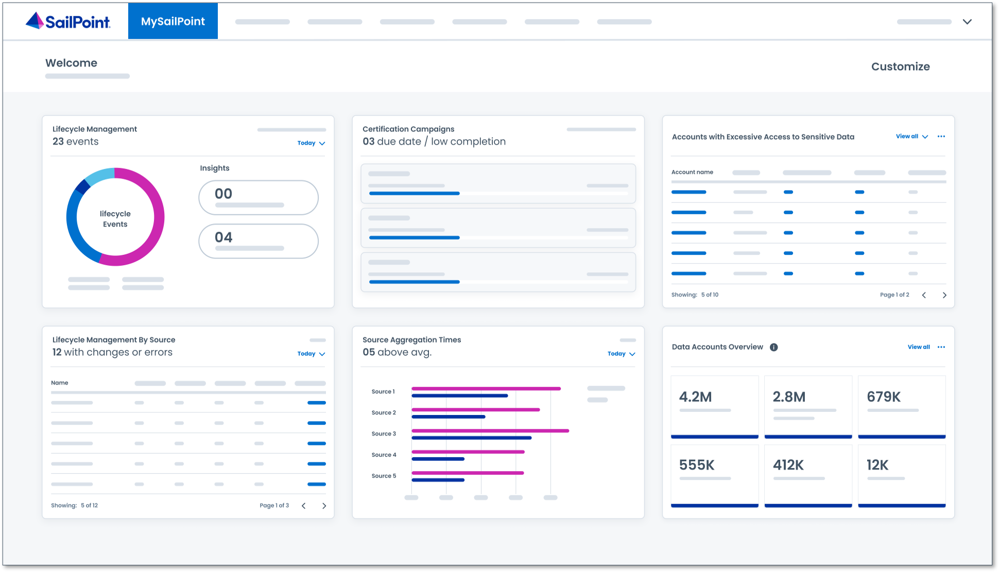
MySailPoint interface example shown in the courseKey features — all three tabs expanded
 Original course divider used before the feature explanations
Original course divider used before the feature explanationsAdministration. ISC brings account information and the access held by users into a platform that administrators can manage. Account administration and access decisions are considered together, rather than as unrelated tasks.
Administration feature artworkLifecycle and access management. Policy-based automation supports access changes as people join, change responsibilities, or leave. The lesson connects lifecycle events with provisioning and control of user accounts, with the aim of reducing security exposure while delivering appropriate access efficiently.
Lifecycle and access-management feature artworkGovernance. Analytics, certifications, and policy enforcement help organizations examine access and identify concerns. The course also describes the use of unusual-pattern information to support decisions about access reviews and changes.
 Governance feature artwork
Governance feature artworkAI-Driven Identity Security
AI and machine learning are presented as aids to understanding access, identifying anomalies, and making better decisions. Their role extends beyond producing reports.
The lesson describes four related uses: detecting unusual access; extracting insights from identity data; offering recommendations during requests and reviews using information about similar users; and discovering or refining roles.
Those capabilities can also help administrators inspect access history, locate relevant information, explore identity data, develop workflows and reports, accelerate application onboarding, support certifiers' decisions, and maintain a role program through Access Modeling.
 AI-driven identity and access-decision illustration
AI-driven identity and access-decision illustrationRelated identity-security solutions — flashcards expanded
The course introduces the following solutions at a high level. Detailed configuration of these products is outside this module.
Password management: extends password-policy management and supports keeping passwords synchronized across connected systems.
Password management cardMachine Identity Security (MIS): addresses non-human accounts and the risks created by machine identities that are unused, untracked, or insufficiently managed.
Machine Identity Security cardData access security: focuses on unstructured information outside the application/database structures discussed elsewhere in identity administration.
 Data access security card
Data access security cardPrivileged Task Automation (PTA): automates sensitive administrative activities to reduce manual work and improve control over privileged operations.
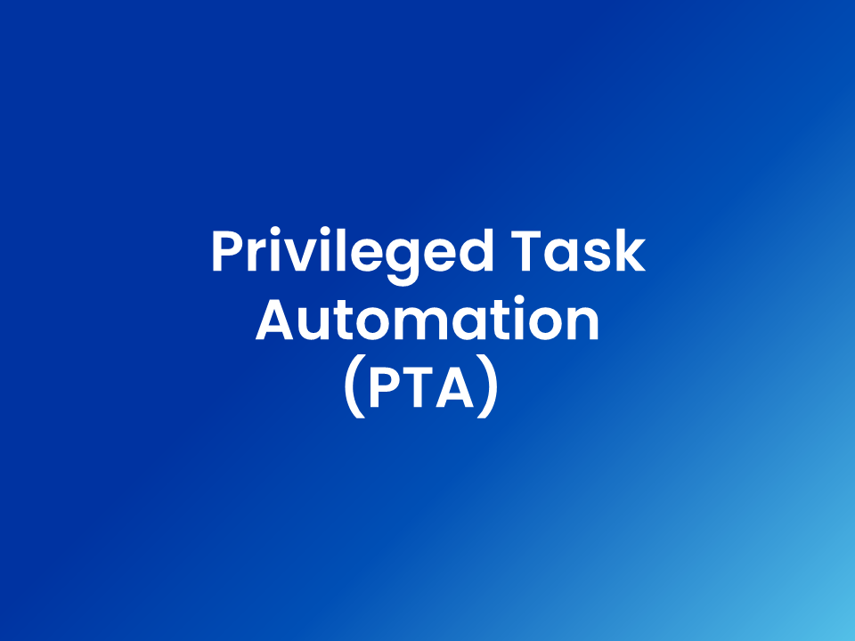
Privileged Task Automation cardNon-employee risk management: addresses lifecycle management for contractors, seasonal staff, and other people outside the regular employee population.
Non-employee risk management cardAccess risk management: the course's card associates this solution with lifecycle access control for SAP environments.
Access risk management cardCloud Infrastructure Entitlement Management (CIEM): provides visibility into cloud access and entitlements and supports control over those permissions.
 Cloud Infrastructure Entitlement Management card
Cloud Infrastructure Entitlement Management cardExtensibility — all five accordion explanations expanded
 Narrator transition illustration before the extensibility discussion
Narrator transition illustration before the extensibility discussionISC can connect with other technologies and support organization-specific identity processes. The course introduces five extension mechanisms and refers learners to the separate Extend Identity Security Cloud course for deeper coverage.
REST API configuration. APIs provide a way for other software to request operations and exchange information with ISC. The examples concern integration between applications, access requests, and certification-related operations. This lesson does not supply request payloads or endpoint-by-endpoint instructions.
Transforms. Transforms apply defined operations to attribute values so data can be used consistently during aggregation or provisioning. The course's examples include converting a job description such as Accountant to lowercase and normalizing date, telephone, or country-code formats. They allow administrators to perform supported attribute operations without writing a custom rule for each formatting task.
Rules. Rules implement customized behavior beyond ordinary configuration. The course describes these as coded logic, using BeanShell, that can participate at appropriate processing points. Its emphasis is on extending behavior or automation; it does not provide a complete rule-development procedure here.
Workflows and forms. Workflows orchestrate automatic steps in response to events. They can address tasks that are difficult to perform manually or are not available as a simple UI operation. The lesson names templates, the workflow-building interface, and JSON files as ways to build a workflow. Forms are included in the topic heading, but a separate forms-building walkthrough is not provided in this lesson.
Event triggers. A trigger/webhook lets an integration subscribe to an event and respond when it occurs. The lesson explains this as a notification mechanism for relevant service activity, allowing subsequent automation or communication through the selected integration or channel.
Study check
Distinguish an attribute transformation from a custom coded rule and a multi-step workflow. Be able to explain how policy-based account/access automation differs from requesting every permission anew at each login. AI capabilities include anomaly identification, peer-based recommendations, and role-model improvement.
 Knowledge-check banner retained from this lesson
Knowledge-check banner retained from this lesson Lesson-footer decoration retained from this lesson
Lesson-footer decoration retained from this lessonMissing artwork at this location: the background photograph and shared narrator banner used behind the lesson heading were not saved. The main product, interface, feature, and card images above were saved.
2.3 Primary ISC processes
Two central processes: aggregation and provisioning
Aggregation brings account and entitlement information from connected source systems into ISC. The course links this with checking identity information and confirming the access present on a source. It gives administrators a basis for understanding the current identity/access situation.
Aggregation illustrationProvisioning creates, changes, or removes access. It can follow an access request and approval, a certification decision, or automatic configuration. Joiner, mover, and leaver changes can be evaluated against role membership and lifecycle-state definitions to determine which access changes are needed.
Provisioning may be automated or request-driven. The lesson also notes that some integrations can use helpdesk or ticketing systems to track and manage fulfillment.
 Provisioning illustration
Provisioning illustrationThe relationship matters: aggregation supplies information about identities and their access; the model and relevant decisions determine desired changes; provisioning carries out changes; subsequent aggregation provides evidence about the resulting access. This closed loop prevents an instruction to change access from being treated as sufficient proof that the source now reflects that change.
Configuration artifacts that support the processes
Source configuration. A source represents an external application, service, database, or other connected system. The course notes that more than one source can represent the same application, with different filters selecting different portions of its data.
 Source-configuration illustration
Source-configuration illustrationIdentity data model. This configuration determines how an identity is represented and how its information appears in the interface. It provides structure for the attributes used to describe the identity.
Identity data-model illustrationAccess model. The model translates business access requirements into manageable structures. At this introductory level, the lesson discusses roles for job functions, rules for criteria-based automation, and policies for security requirements. Module 7 provides the more detailed treatment of entitlements, access profiles, roles, and lifecycle states.
 Access-model illustration
Access-model illustrationData-reading and provisioning sequence — expanded panels
Original divider preceding the process sequence1. Connect and aggregate sources. ISC connects to enterprise systems. Authoritative data, such as HR or an appropriately designated directory source, establishes identities. Multiple sources may contribute information about the same population.
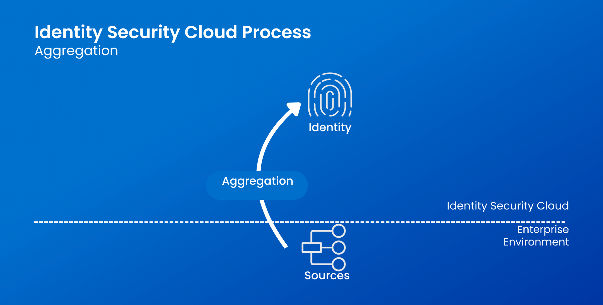
Process panel: connected sources and authoritative data2. Build the identity view. Identity attributes describe the person, including information such as name, email address, and employee identifier. Accounts from other sources and their associated permissions enrich this view.
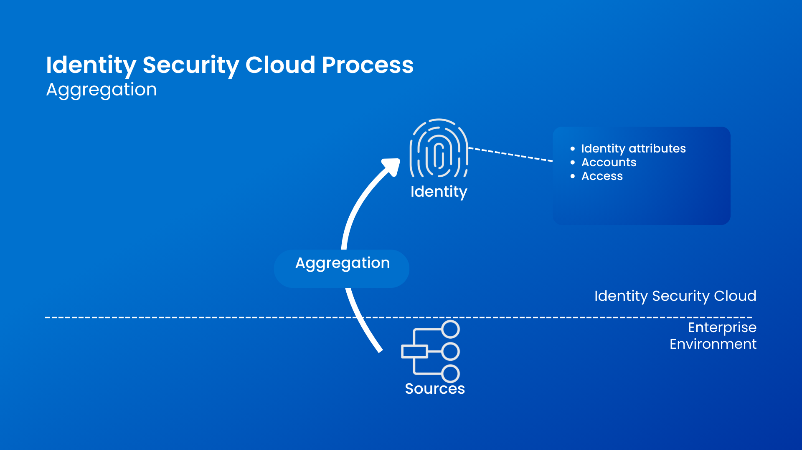
Process panel: identity attributes and associated data3. Collect entitlements. Entitlements express access held through source accounts. The gathered permissions are recorded in an Entitlement Catalog.
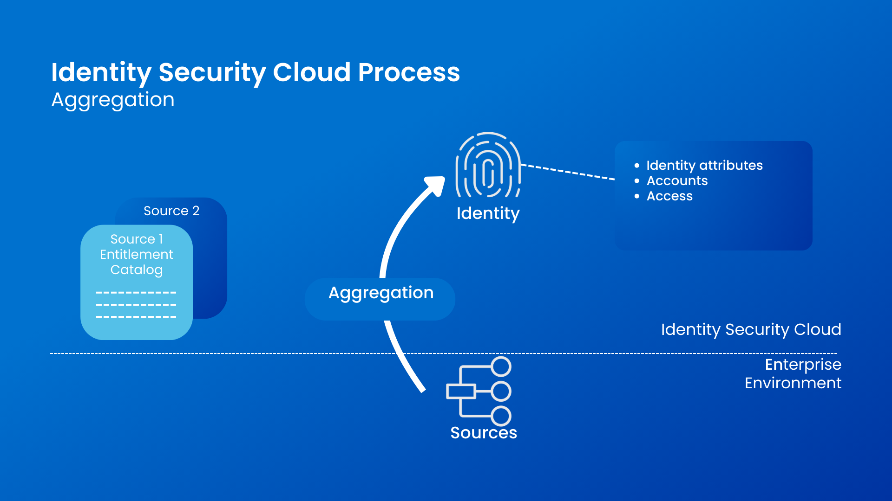
Process panel: aggregated entitlements4. Apply the access model. Identity and entitlement information supplies the material for grouping and managing business access. Business policies provide additional constraints for evaluating what should be permitted.
 Process panel: access modeling
Process panel: access modeling5. Provision required access. Configure the required changes for the appropriate user or account. The lesson identifies role and lifecycle-state configuration as mechanisms for automatic provisioning.
 Process panel: provisioning access
Process panel: provisioning accessGovernance — both tabs expanded
Certifications require a responsible person to review access and decide whether it remains appropriate. A collection of such reviews is a certification campaign; the review allocated to a particular certifier is a certification. Certification supports audit needs and the removal of unnecessary access.
Policy implementation/evaluation defines prohibited or otherwise constrained access and checks identities for violations. The examples include Separation of Duties, which limits incompatible involvement in important processes, and more general policies that support the integrity of organizational data.
Certification and policy evaluation serve different purposes: one asks an accountable reviewer to decide whether access is appropriate; the other evaluates access against defined policy conditions. Both support the least-privilege objective.
Certification and policy implementation — four steps expanded
1. Access review. Gather the access information and send it to a suitable decision-maker. Depending on the situation, that person might be a manager, administrator, or someone with the knowledge to judge the access involved.
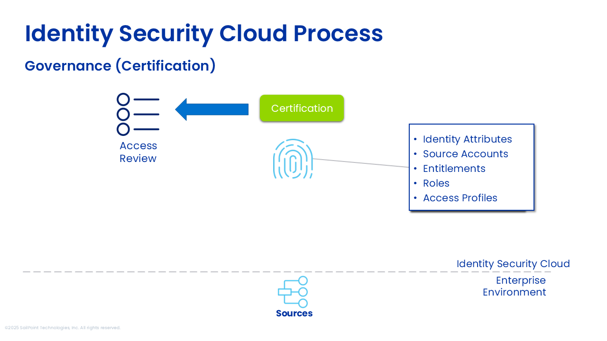
Governance panel 1: review user access2. Access decision. Keep/approve appropriate access or revoke access that should be removed. A revocation decision causes ISC to initiate the relevant provisioning request.
 Governance panel 2: approve or revoke
Governance panel 2: approve or revoke3. Reaggregation. Read the source again to verify the resulting access. This provides the confirmation stage of the closed-loop process.
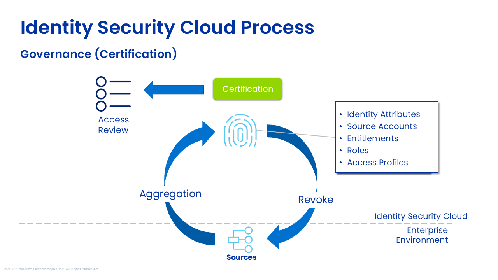
Governance panel 3: reaggregate and confirm4. Policy evaluation and response. Check identities against defined policies and report violations to responsible authorities. Those authorities assess the findings and take corrective action. A violation report identifies an issue; it does not by itself establish that the issue has already been fixed.
 Governance panel 4: policy evaluation and follow-up
Governance panel 4: policy evaluation and follow-upStudy check
Configuration artifacts define how identity data is connected, organized, and processed. Aggregation and provisioning work together, and certifications require informed human decisions about existing access. The principle of least privilege is to limit permissions to what the job requires.
 Knowledge-check banner retained from Primary ISC processes
Knowledge-check banner retained from Primary ISC processesMissing artwork at this location: the heading background and shared narrator banner were not saved. The five process panels and four governance panels above are retained as individual images with their English content unchanged.
2.4 Getting started with Identity Security Cloud
Authentication: all three methods expanded
Native authentication. The course describes initial administrator access using an ISC password created through invitation-based registration. For this method, invited users register and establish the password used by ISC to validate access.
Pass-through authentication. Another connected authentication system, such as AD or LDAP, validates credentials through the configured Directory Connection. The external system performs the validation described in the lesson.
Single sign-on (SSO). An identity provider authenticates the user and supplies identity information. ISC acts as the service provider that accepts the resulting identity information for access to the platform.
The lesson states that pass-through and SSO users do not need the native-password registration process described above: they need the tenant address and successful validation by the configured authentication system.
Some operations require stronger verification in addition to the initial sign-in. The course lists phone/email codes, knowledge-based questions, and third-party MFA providers such as DUO or RSA as examples of mechanisms in this area. These examples describe the training material; they are not a recommendation to configure a particular authentication method.
 Narrator transition used between authentication and authorization
Narrator transition used between authentication and authorizationAuthorization: the AuthZ model
Authentication establishes identity. ISC then uses assigned user levels to determine which functions that identity may access. The lesson calls this authorization model AuthZ.
Org administrator. The highest level described here can view, modify, and perform tasks throughout the ISC components available to the different user levels.
Administrator level illustrationSpecial-level administrators. These levels support specific administrative responsibilities. Course examples include Certification Admin, Helpdesk, Report Admin, Role Admin, and Source Admins.
 Special-level administrator illustration
Special-level administrator illustrationSub-administrators. Their administrative authority is restricted to a defined set of object types, rather than extending across every administrative function.
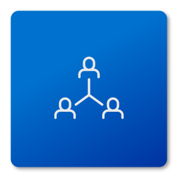
Sub-administrator illustrationEnd users. The basic user level supports authorized user tasks such as access requests or password-management functions. It does not imply unrestricted administrator access.
End-user level illustrationUsers may hold more than one level, and some targeted administrative levels may require time-based one-time passwords. The lesson points to the User Level Matrix for further detail, but the matrix itself was not supplied as a downloadable item in the inspected material.
Tenant setup — four-panel sequence expanded
 Divider used before the tenant-setup discussion
Divider used before the tenant-setup discussionThe introduction explains that tenant setup receives support. The three substantive stages then describe the following pattern:
- Initial setup: special SailPoint/setup users and at least one administrator are used during the initial tenant work.
- After onboarding real users: retain the original administrator identities when appropriate for emergency use. The course calls these break-glass identities and describes them as having full administrator access.
- Ongoing access strategy: an organization may keep regular administrator identities at ordinary user privilege for daily activity and use separate administrative identities for elevated work. Separate identities for individual administrators support accountability.
This is the course's access-strategy explanation. It is not a hands-on tenant-creation exercise, and no tenant or user permission was changed during this capture.
User invitations and registration
ISC may contain identity records for people who do not need to sign in. Administrators choose which identities should receive registration invitations, either manually or through an identity group configured for invitations.
The lesson defines three registration statuses:
| Status | Meaning in this lesson |
| Not invited | No registration invitation has been sent. |
| Pending | An invitation was sent, but registration is incomplete. |
| Active | Registration is complete and the user can sign in. |
The invitation sequence is:
- Select the identities to invite, manually or through the relevant group.
- Send invitations from the ISC interface.
- The invited identities move to Pending.
- Users follow the registration email and complete the required setup, including their password and any additional security details applicable to that method.
- Completed registration moves them to Active.
Examples of additional setup information in the course include a backup telephone number, an alternate email address, or security questions. The native-registration sequence should be distinguished from the earlier pass-through/SSO explanation.
 User invitation interface example
User invitation interface exampleMySailPoint and interface navigation
After login, MySailPoint is presented as the identity-security landing area. It gives administrators high-level insights and allows them to choose the data and presentation useful to their responsibilities.
The navigation illustration distinguishes ordinary end-user areas — Home, Request Center, Approvals, Task Manager, and Certifications — from elevated functionality that can include Search and Admin. A particular user's available controls still depend on assigned permissions and tenant configuration.
 Course navigation illustration distinguishing end-user and elevated access
Course navigation illustration distinguishing end-user and elevated accessSource clarification: the original accessibility description for this image lists more menu names than the end-user restriction written inside the image. The explanation above follows the image's visible distinction and the lesson's user-level explanation. No original image text has been edited.
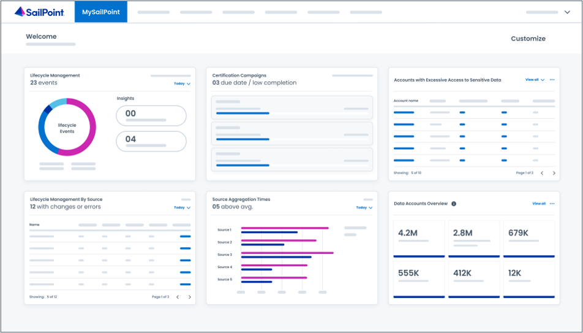
MySailPoint landing dashboard exampleStudy check
Be able to explain the purpose of break-glass access, the difference between authentication and authorization, and the invitation-status sequence. A registration invitation is not the same thing as an access request, and an identity record is not proof that the person must be able to sign in.
 Knowledge-check banner retained from Getting started
Knowledge-check banner retained from Getting startedMissing artwork at this location: the common background photograph and shared narrator banner were not saved. The user-level icons, invitation screenshot, navigation illustration, and dashboard screenshot were saved.
2.5 Recap
The module's expected outcomes are to explain ISC's role in identity security, identify its core processes, and understand how users begin accessing and navigating the interface.
A useful review sequence is to connect the ideas: sources provide account and entitlement data; models and decisions determine appropriate access; provisioning changes access; aggregation confirms the results; governance reviews access and policy compliance; authentication and assigned user levels determine how a person uses the platform.
Original footer decoration also used in the Recap lessonMissing artwork at this location: the common background photograph and the Recap narrator banner were not saved. The exact paths appear below.
Glossary and revision prompts
| Term | Meaning in this module |
| ISC | Identity Security Cloud, the platform introduced by the module. |
| SailPoint Atlas | The underlying platform named in the product overview. |
| Aggregation | Reading account and entitlement information from connected sources. |
| Provisioning | Creating, changing, or removing access in response to configuration or decisions. |
| Source | A configured connection/representation for external identity or access data. |
| Identity attribute | Information describing the person represented by an identity. |
| Entitlement Catalog | The collected set of source access rights. |
| Certification campaign | A collection of access reviews. |
| Certification | An individual review allocated to a certifier. |
| Separation of Duties | Policy constraints addressing incompatible or excessive involvement/access. |
| AuthZ | Determination of allowed functionality from assigned user levels. |
| Break-glass identity | An emergency administrative identity described in the setup discussion. |
| Transform | Defined operations that change attribute values or formatting. |
| Rule | Custom coded behavior used to extend processing. |
| Event trigger | A notification/subscription mechanism associated with a relevant event. |
To revise, explain an access-removal example from review decision through provisioning and reaggregation. Then compare the three authentication methods and describe how successful authentication still leaves authorization decisions to the assigned user levels.
Capture coverage and missing materials
Completed reading and retained images
All five lessons were read. The three feature tabs, five extensibility accordions, seven related-solution flashcard explanations, two aggregation/provisioning tabs, two governance tabs, three authentication accordions, process explanations, and tenant-setup panels are represented in the rewritten notes. The process panels' rendered text was read in order; the executable slider/animation is not reproduced.
All 44 distinct image URLs exposed through the inspected lessons' inline image elements were downloaded successfully. Repeated appearances of the same URL reuse one saved file. The saved set includes two different source URLs whose files share a basename; they were kept separately. The source map and hashes are in saved-assets.json.
Known background-only images not saved
| Source path relative to the module content directory | Affected lesson(s) | Status |
| assets/2-Gh5h36bP76602T.jpg | 2.1–2.5 | Observed as a common CSS background; not saved. |
| assets/IntroductionBanner-Narrato.svg | 2.1 Overview | Observed as the introductory narrator banner; not saved. |
| assets/11ahs0/IntroductionBanner-Narrato.svg | 2.2, 2.3, 2.4 | Observed as the shared lesson-heading narrator banner; not saved. |
| assets/RecapBanner-NarratorA_NOPR.svg | 2.5 Recap | Observed as the recap narrator banner; not saved. |
These are decorative/background omissions, not a claim that all course images were preserved. Other CSS backgrounds that also had an inline image representation, such as dividers, footer art, and knowledge-check banners, are included in the saved set above.
Other limitations
- Text is a detailed paraphrase, not a verbatim course transcript. English text within saved images remains unchanged.
- No independent narration transcript or audio/video file is included. A complete inventory of media that might appear only after additional playback is not established.
- External courses and resources, including Extend Identity Security Cloud and the User Level Matrix, were not downloaded or expanded into this module's notes.
- No knowledge-check answers were submitted. Any feedback exposed by the player was used only to understand the study topic, not as a record of the user's answers.
- No live tenant was configured, no users were invited, and no authentication or authorization settings were changed.
- Original interactive behaviors, animation timing, course tracking, and completion logic are not recreated offline.
- This reading layout follows the lessons and topic sequence but does not replicate the original screen layout exactly.
MODULE 03
Module 3 — Tenant configuration
English study notes • six lessons in course order • detailed paraphrases of the inspected course pages. Original English illustrations are retained beside their subjects. These notes reflect the course version viewed on 15 November 2026; service counts, interface labels and deployment instructions may change.
3.1 Overview
Tenant configuration establishes the foundation for an Identity Security Cloud deployment. Although SailPoint runs the SaaS service, administrators still need to understand their organization's tenant, its security settings, its connection to enterprise systems and its implementation sequence.
The module's guide, Ian, introduces four questions: how a shared SaaS environment supports scale and security; how global settings establish consistent behavior; how to choose an implementation strategy; and how virtual appliance administration supports reliable connectivity. The practical outcome is to identify configuration work and test that the resulting tenant behaves as intended.
Material not saved at this point: the course background photograph and this lesson's Ian banner are CSS backgrounds. Their image files are not included. The footer animation below was saved.
 Lesson footer
Lesson footer3.2 Tenant architecture
The multi-tenant model
ISC is delivered as a multi-tenant SaaS service. Organizations have their own tenant while sharing infrastructure and service capabilities. Shared operation lets the provider distribute maintenance costs and make improvements available across customers.
The course uses a condominium analogy. A resident occupies a private unit, while the building's infrastructure and common amenities support many residents. Each organization selects an appropriate scope of services, and optional additions can extend what it receives. This analogy explains shared service operation; it does not imply that organizations can access each other's identity records.
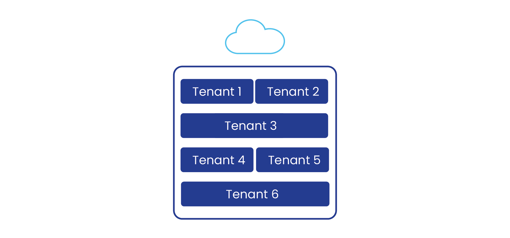
The multi-tenant model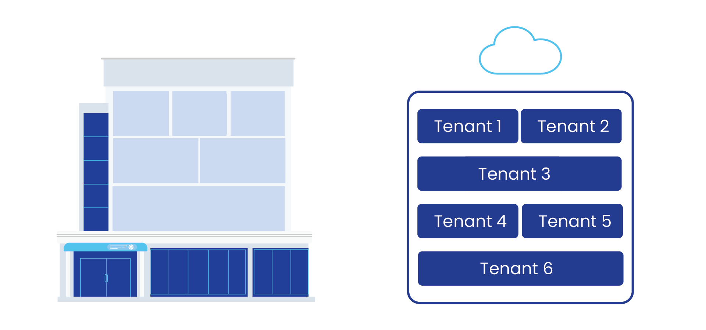
Shared infrastructure Custom extras
Custom extrasVirtual appliance: the connection to enterprise systems
A virtual appliance, or VA, is a Linux virtual machine used to connect the tenant with systems such as on-premises sources and applications. SailPoint APIs, connectors and integrations provide the means of communication. This gives the cloud service a bridge to resources inside the organization's environment.
 Virtual appliance bridge
Virtual appliance bridge Section divider
Section dividerShared services, expanded
The two panels below explain how an organization consumes common SaaS capabilities while its capacity is sized for its users. New features can be released across the service, and development and infrastructure costs are shared. The course also describes the value of analytics developed across the service. These service-level benefits should be distinguished from an organization's responsibility for its own identity configuration.
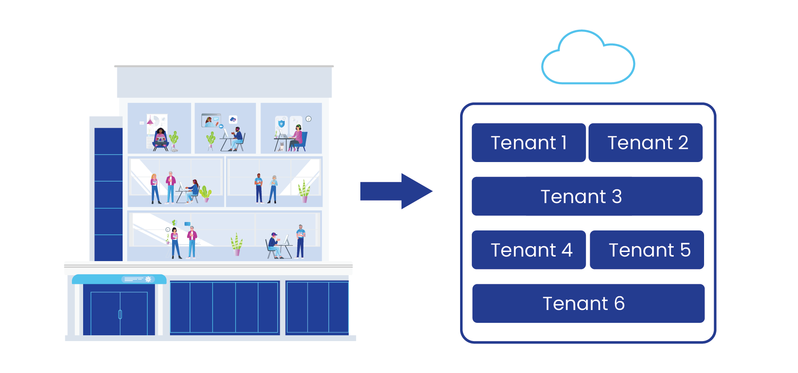
Shared services: organization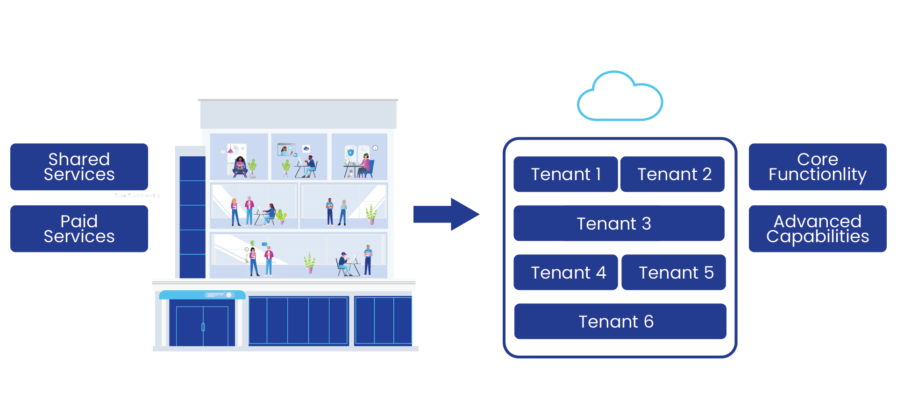
Shared services: scaleBenefits, expanded from the five accordions
Reduced costs. Subscription models can relate charges to users, usage or service volume. Sharing hardware, software operation, maintenance and support reduces the need for every customer to maintain a separate service stack. The course discusses monthly or annual and pay-as-you-go arrangements as SaaS examples, rather than a price quotation.
Scalability. An organization can increase or reduce its consumption as its needs change. Adding users does not require the customer to build a separate SaaS infrastructure for each expansion.
Security. The provider operates physical and logical protections and supports privacy and security requirements. Shared service operation also enables consolidated detection and response capabilities. Administrators still need to configure access and organizational policies correctly.
Maintenance. The provider handles service updates, patches, availability and backups. Customers therefore spend less effort maintaining the underlying hosted software and can concentrate on identity administration.
Additional benefits. Continuous integration and delivery support frequent changes. Some releases expose new user capabilities; others improve the underlying service without a visible interface change.
 Additional benefits
Additional benefits Section divider
Section dividerSaaS environments and regions
The lesson distinguishes core capabilities, optional enhancements and additional products. Examples discussed include logging, access modeling and search. The course describes an allocation of up to two tenants per customer and a map of eleven availability zones. Treat these as statements from the viewed course version, not independently verified current purchasing entitlements or deployment counts.
Region selection involves compliance and data-location requirements as well as proximity between the tenant and connected data. The original map retains its English labels below.
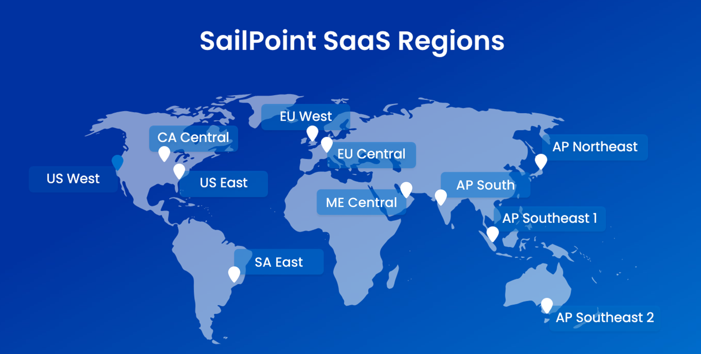
SailPoint SaaS regions Knowledge check banner
Knowledge check bannerReview and limitations
Be able to explain the shared-building analogy, describe why a VA is needed for internal resources, and relate cost, scale, security and maintenance benefits to SaaS operation.
Incomplete exercise: the sorting interaction was already displaying a completed result with Production, Sandbox and Additional categories. The individual cards were not available in that display and have not been reconstructed. The exercise was not reset or submitted. The linked article comparing single-tenant and multi-tenant SaaS was not downloaded.
Unretained artwork: the shared course photograph and this lesson's background-only Ian banner are not included. Retained narrator and divider images appear above in their course sequence.
3.3 Global configurations
Session controls
Global settings define how users interact with the tenant. A maximum session duration limits how long a session can remain active before logout or reauthentication is required. An idle timeout addresses inactivity: after the configured interval without interaction, the user must authenticate again. These settings balance organizational security policy with the practical effect of repeated sign-ins on users.
 Session settings
Session settingsLogin controls
Lockout settings combine a permitted number of failed attempts with a lockout duration. Their purpose is to limit repeated password guessing. The course gives an example in which an Active Directory account locks after five failures and ISC is configured to lock after four, followed by a password reset. The lower threshold is intended to reduce the chance that ISC failures lock the upstream directory account. This is an illustration of coordinating policies, not a universal threshold recommendation.
Login settings Global configuration narratorSection divider
Global configuration narratorSection dividerEmail notifications and templates
Notifications keep participants informed about identity events. The lesson discusses request approvals and cancellations, pending certifications, lifecycle-state activity and user lockouts.
 Email notifications
Email notificationsAdministrators can customize template subjects, reply-to information and message bodies. Rich-text or HTML formatting controls presentation, and Apache Velocity expressions support dynamic template content. The sender address is configured separately through Product Branding; changing a template's reply-to value does not replace that configuration.
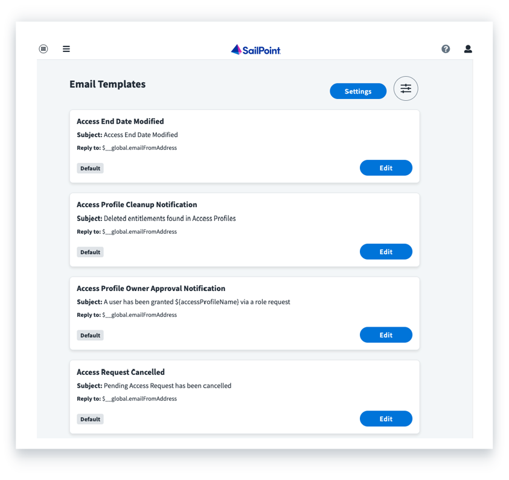
Email template configuration Email template editingEmail icon
Email template editingEmail iconTesting delivery, expanded from the process panels
Both production and sandbox tenants can send mail to the users associated with an event. Sandbox testing therefore needs deliberate recipient handling. The course illustrates redirecting notifications to one test address so the administrator can inspect messages before using real recipients.
 Testing email
Testing email1. Plan a test. Suppose you want to check certification invitations. Decide which event will generate the message and which template you expect to see.
Email test: start2. Redirect delivery. Configure the test tenant to route notifications to a controlled test address. This allows inspection of messages generated for different users in one mailbox.
Email test: redirect3. Generate representative events. In the example, a campaign involving ten managers generates ten messages. Redirecting the destination changes where those messages arrive; it does not turn ten event messages into one.
 Email test: ten messages
Email test: ten messages4. Inspect the result. Check the subject, dynamic values, formatting and layout in the received messages. Correct template or configuration issues and repeat the test when necessary.
 Email test: inspect layout
Email test: inspect layout5. Restore intended delivery after validation. When testing is complete, configure notifications to reach their intended users. This sequence illustrates a controlled test; these notes do not record any changes to a live tenant.
Email test: actual recipientsReview and missing materials
Distinguish maximum session length from idle timeout, coordinate account-lockout thresholds with upstream systems, and explain why sandbox email can still reach real people. Template testing should verify content as well as delivery.
Material not saved: the background-only Ian banner and common photograph. Interactive settings panels and all five email process illustrations available as inline images were saved. Quiz controls were inspected without submitting answers.
3.4 Implementation strategies
Start with clean data and a manageable phase
Two considerations underpin the implementation strategy: data quality and phased delivery. Automated identity decisions depend on reliable attributes and access data. Connecting more systems does not compensate for inaccurate data; it can spread errors through a larger process.
The deployment sequence should reflect business priorities. In the course example, the eventual scope contains one thousand sources, but five are especially important. The first phase connects the authoritative source and those five critical sources and establishes birthright access. This gives the team a useful, bounded implementation to validate and operate.
 Implementation phase one
Implementation phase oneAfter the team gains experience and the initial behavior is stable, the next phase extends the implementation to additional sources and capabilities.
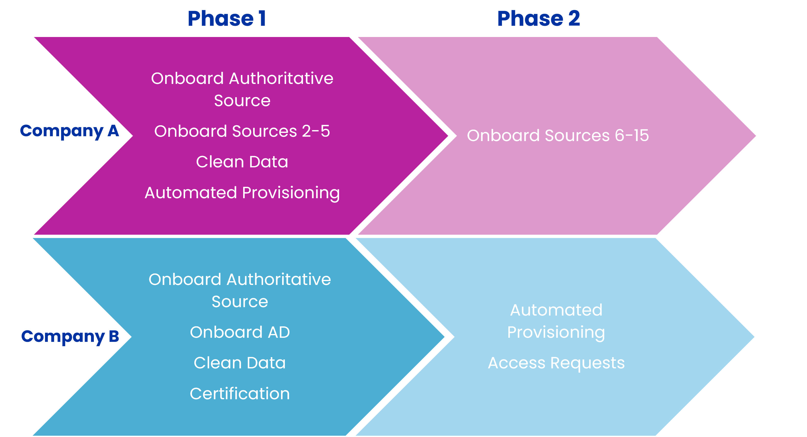
Implementation phase twoAdapt the sequence to the organization
An organization with only a few sources might choose a different first outcome: onboard authoritative data and run certifications before automating provisioning in a later phase. The principle is to deliver valuable, testable outcomes in a sequence suited to the organization, rather than applying one fixed rollout order everywhere.
A study exercise is to identify a small group of priority sources, explain what business outcome the first phase delivers, and define which data-quality checks must pass before expanding. This exercise is a study prompt added to these notes.
Material not saved: the common photograph and this lesson's background-only Ian banner. Both implementation phase images were saved. Knowledge-check interactions were not submitted.
3.5 Virtual appliance administration
Virtual appliance overview
A VA is the gateway between the tenant and enterprise systems. It runs as a Linux-based virtual machine with SailPoint-managed software. Understanding its placement, communication and operational state is essential to reliable source connectivity.
The security-guard analogy, expanded
The course returns to the condominium example. The building represents the enterprise environment.
 The condo building
The condo buildingThe VA is compared to a digital security guard connecting the service to resources inside that environment.
The digital security guardChecking credentials illustrates controlled access and policy enforcement in the analogy.
 Checking credentials
Checking credentialsSpecialized tools represent the capabilities used to support the security process.
 Using advanced security tools
Using advanced security toolsEfficient handling of authorized activity illustrates the value of dependable connectivity.
 Streamlining secure access
Streamlining secure accessProtecting the community illustrates the broader identity-security objective. The analogy supports understanding; it is not a literal description of every authentication or authorization decision being performed by a VA.
 Keeping identity security in check
Keeping identity security in checkResponsibilities and architecture: the four markers
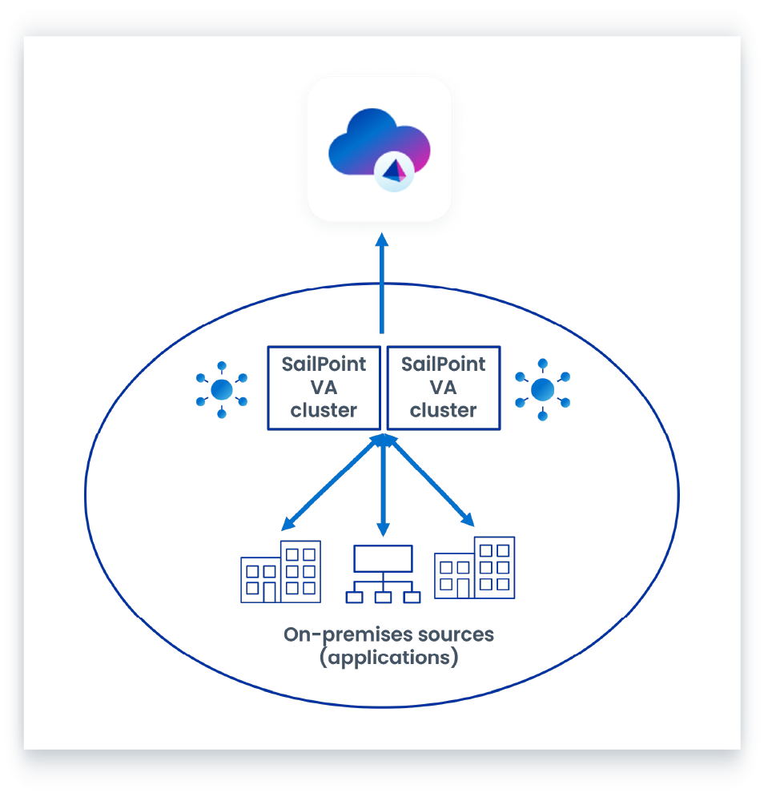
VA responsibilities and controlSailPoint managed. SailPoint controls which software components are installed and run on the appliance.
Customer controlled. The customer is responsible for network settings, private-key management and the number and size of clusters.
Connectivity gateway. The VA initiates outbound communication for tenant and source operations. Outbound initiation simplifies the connection pattern through the organization's network boundary.
Multiple VAs in a cluster. Administrators select how many clusters and appliances are needed. Multiple VAs can distribute work and increase processing capacity; clustering also supports continuity when one appliance is unavailable.
 VA administration narratorSection divider
VA administration narratorSection dividerCommunication, expanded from the five accordions
1. VA cluster. The tenant creates work for a target source and places the corresponding message in the queue for that source's cluster. The queue holds operations until they can be processed.
 VA cluster
VA cluster2. Cluster queue. The appliances in a cluster poll the same queue. This allows an available member to obtain work without requiring a separate queue for each VA.
 Cluster queue
Cluster queue3. Cluster queue messages. Scheduled activities and user actions both generate work. The target source determines which cluster queue receives the message.
 Cluster queue messages
Cluster queue messages4. Message decryption. A VA retrieves a work item and decrypts it with its local private key. Key handling is consequently part of appliance administration.
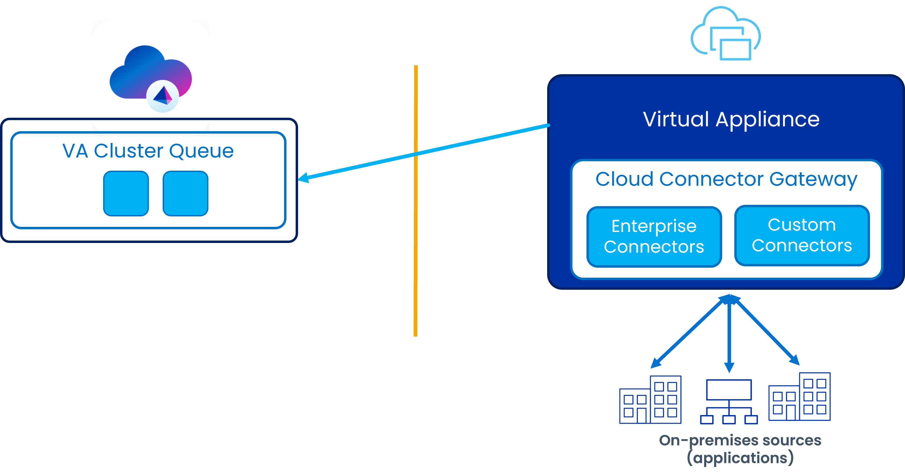
Message decrypt5. Internal communication. The Cloud Connector Gateway, or CCG, carries out the connector work. Only one VA responds to a particular message, and results and status are returned to the tenant.
Internal communication VA communication narratorSection divider
VA communication narratorSection dividerDeployment process
The first interface example shows Virtual Appliance Clusters and the Create New control. The second shows the configuration dialog, downloadable VA image and pairing fields. Both are course screenshots; no cluster was created while preparing this study book.
 Create a VA cluster
Create a VA cluster Configure and pair a VA
Configure and pair a VAThe screenshot illustrates this sequence:
- Download the VA image and copy it to the organization's virtualization platform.
- Start the virtual machine. Use the initial sign-in process supplied with that image and immediately replace the initial password.
- Set the passphrase with
va-bootstrap set-passphrase. The screenshot states that appliances in the cluster must use the same passphrase and lists restrictions on its format. Retain those exact visual requirements in the original image rather than guessing from a different software version. - Obtain a pairing code with
va-bootstrap pair. - Enter the code in the tenant dialog and select Pair. The pictured instructions specify using the code within four hours.
- Wait for configuration to finish. The screenshot estimates roughly thirty minutes and describes the final VA status as Connected.
A VA entry can be saved before pairing, but the course states that it is not operational until the time-sensitive code is entered and configuration completes. Setting up the appliance requires knowledge of Linux and the organization's virtualization platform. The linked detailed VA documentation was not captured, so these notes are not a replacement for the complete installation requirements.
Deployment best practices, expanded
Location. Place VAs close to the sources they serve. With multiple data centers or subdomains, consider appliances near those systems. For cloud-hosted sources, a cloud VA can avoid routing source traffic through an on-premises environment unnecessarily.
DMZ placement. The course advises against placing the VA in a perimeter DMZ because that placement can complicate connectivity and security design.
Clusters and appliance counts. Use two or more VAs for a production cluster. This supports redundancy and allows upgrades to take one appliance offline while another remains available. A sandbox can use a single VA for connectivity testing. Additional appliances can increase capacity in busy clusters.
IP addressing. The lesson recommends static IP addresses so connectivity does not depend on a changing appliance address.
Network communication. The course discusses SSH administration on port 22 within the network and outbound dependencies including DNS on 53, time synchronization on 123 and HTTPS on 443. It also warns about intermediary products that interfere with the required communication and discusses controlled tunneling or proxy arrangements in restricted environments. These are course-version design considerations, not instructions to remove an organization's network protections. The full endpoint and firewall requirements were not captured.
TLS. Use encrypted source connections where supported and required by the design. VA-to-source communication should be considered alongside tenant-to-VA communication.
Passphrase. The lesson describes an organization-specific passphrase used with RSA 2048-bit asymmetric keys in VA configuration. Protect it as confidential configuration information. It recommends consistent key-passphrase use across the organization's appliances, rather than limiting consistency to a single cluster. No actual organizational key or passphrase was read or stored for this book.
 VA best practices narrator
VA best practices narrator Section divider
Section dividerMonitoring
Once a VA has been deployed, its cluster reports a status. The lesson lists Healthy, VA Update in Progress, Empty Cluster, Only 1 VA in Cluster, Inactive VA, VA Did Not Update and All VAs Inactive.
 Cluster monitoring
Cluster monitoring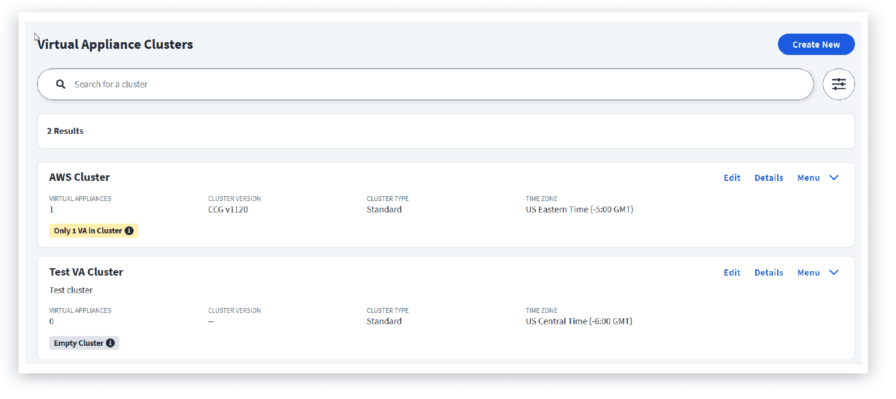
VA cluster status examplesThe first expanded marker explains that Healthy requires more than one associated VA and healthy appliances throughout the cluster. The second identifies the warning shown for a cluster with only one VA. A functioning single appliance therefore does not provide the same cluster state as a healthy redundant deployment.
Email alert configuration
Notifications can alert a single recipient or distribution list when cluster health changes toward failure or recovery. The course navigation is Global > System Settings > System Notifications. Use the original interface example to locate the relevant notification area in the course version.
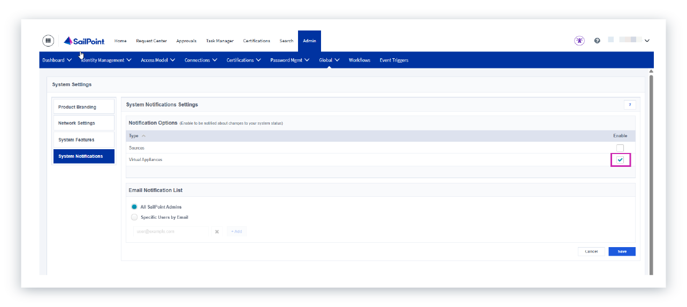
System notification settingsTroubleshooting
Enable debugging at cluster level when investigating communication problems, because any member can receive the work. The illustrated steps are to select Cluster Configuration and enable its debugging checkbox. Also inspect connected-source errors and the surrounding network infrastructure to find the source of a failure. Enabling debugging in the course example was explained only; no live configuration was changed.
 Enable debugging
Enable debugging Troubleshooting narratorKnowledge check banner
Troubleshooting narratorKnowledge check bannerReview and limitations
Explain the work-message path from tenant to cluster queue to one VA, then through CCG and back to the tenant. Distinguish the scalability benefit of distributing work from the resilience benefit of multiple appliances. The course recommends at least two VAs in a production cluster.
Material not saved: the common background photograph and this lesson's background-only Ian banner. All 23 new inline image URLs encountered in this lesson were saved, including the deployment, monitoring, notification and debugging interface examples. The external VA documentation and a separate video/audio transcript were not exported. Knowledge checks were not submitted or reset.
3.6 Recap
The module closes with two expected outcomes: identify the essential configuration steps for a new tenant, and demonstrate how to test that those settings work. A useful review is to connect each configuration decision to evidence: session behavior for timeout settings, received messages for templates and redirects, and cluster state and connector results for VA operation.
The sequence established in this module is architectural understanding, global configuration, a phased implementation strategy and dependable VA administration. Those foundations prepare the administrator for connectivity and source onboarding in the following modules.
Material not saved: this lesson's recap banner and the shared photograph are CSS backgrounds. The footer graphic was saved and is shown below. No additional closing lesson text was hidden behind a continuation control in the inspected page.
Lesson footerModule coverage and missing materials
All six lesson bodies were inspected. The notes expand the architecture benefit accordions, global-setting panels, email process, VA analogy, VA responsibility markers, communication accordions, deployment guidance and monitoring markers. Fifty distinct inline image URLs were saved without editing their English content; reused graphics appear again where they support the course sequence.
Seven known background-only image paths were not saved: the common photograph, five lesson narrator banners and the recap banner. They are listed individually in coverage.json. The completed sorting exercise's cards, external linked resources, and separately exported audio/video transcripts are not included. Assessment attempts and account or tenant settings were not changed.
MODULE 04
Module 4 — Connectivity
English study notes in the original five-lesson order. Course text is paraphrased; retained illustrations keep their original English content. Configuration descriptions reflect the viewed course version, rather than a current connector installation manual.
4.1 Overview
Mia introduces connectivity as the foundation that lets ISC collect identity information and carry access decisions into the organization's systems. Those systems may run in a public cloud or on the organization's own servers. The module asks how connectivity is structured, why connectors are needed, how cloud and on-premises applications are connected, and how those connections are secured.
By the end, distinguish the system being represented, the connector that communicates with it, and the infrastructure on which that connector operates.
Missing artwork: this lesson's Mia banner and the common photograph were background-only assets and were not saved. The retained footer is below.
 Lesson footer
Lesson footer4.2 Key terminology and components
Sources
A source is ISC's representation of an external system holding accounts, access information or personnel records. Examples include HR and finance systems, ERP, customer-management applications, Active Directory, Microsoft Entra, GitHub, custom applications, JDBC-accessible databases and spreadsheets.
The three expanded source panels distinguish representation, data and direction of movement:
Representation. Administrators create a source object to represent an application or external system inside ISC.
Source representationAttributes and access. A source holds the relevant user and account attributes, such as a name, username, email address and department, as well as information describing access or restrictions.
User attributesAggregation and provisioning. Aggregation reads information from the external system into ISC. Provisioning sends attribute or access changes back toward that system. Reading a system and changing it are separate capabilities.
 Aggregation and provisioning
Aggregation and provisioning Applications, databases, spreadsheets and web services
Applications, databases, spreadsheets and web servicesVirtual appliance
A VA provides a secure connection layer between the tenant and on-premises applications. It uses SailPoint APIs, connectors and integrations, with configurable logic and schemas supporting the integration. VAs are deployed behind the organization's firewall; SailPoint manages their software updates. They are grouped in clusters that serve connected sources.
The direction of communication matters: the VA initiates outbound calls to the tenant, rather than the tenant opening a direct inbound connection to the appliance.
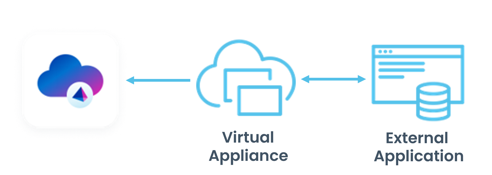
Virtual appliance connectivityConnectors
A connector is the software logic that communicates with a particular system. When a source object is created, its connector operates in a VA or in the tenant, depending on the connector architecture. This allows ISC to read account data and, where supported, perform changes. The course uses Oracle HR and GitHub as examples of systems whose account and entitlement information may need to stay aligned with identity decisions.
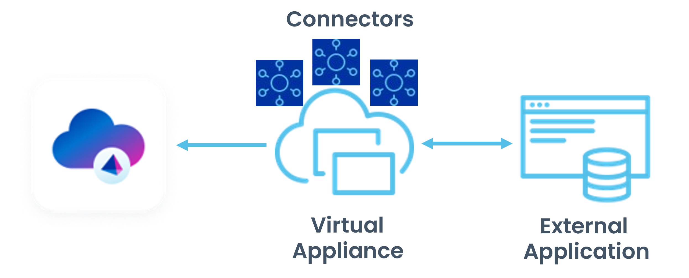
Connectors and VAsThe four flashcard concepts are expanded below:
Aggregation brings account and access data from sources into ISC.
 Aggregation
AggregationProvisioning carries account and access changes outward to source systems, using the supported fulfillment method.
 Provisioning
ProvisioningIntegration connects deeper functionality of enterprise, collaboration or service-desk applications with ISC.
 Integration
IntegrationExtension refers to advanced configuration or rules supported by certain connectors. Connector capabilities differ, so an extension should not be assumed to apply to every source.
 Extension
Extension Narrator transition
Narrator transitionIntegrations
An integration links ISC capabilities with functions of a more complex enterprise or service-desk platform. The course examples include Zendesk, ServiceNow, BMC Helix, Atlassian/Jira and a generic service-desk option.
 Integration
IntegrationIntegrations involve support and development relationships with the external vendor and may require additional subscriptions or licensing. They still use an appropriate connector: the examples associate Workday with its Workday connector and ServiceNow with its ServiceNow connector. The connectivity and integrations catalog is an external reference and was not downloaded into this edition.
IQService
IQService is a lightweight integration service for functionality available through Windows APIs. It provides a communication path that a connector can use when working with Windows-related systems.
Installation. The lesson places IQService on Windows servers that have the required connectivity to target systems. It does not supply a complete host-sizing or installation checklist.
 IQService installation
IQService installationSecurity. The lesson discusses certificate-based client authentication and TLS encryption as ways to protect the communication channel. It describes client authentication as optional in the course configuration, rather than demonstrating that an unprotected channel is appropriate for a particular organization.
 IQService security
IQService securitySupported-source examples. The listed systems are Microsoft Active Directory, Entra ID, SharePoint Online and Server, HCL Domino and Windows Local Source. Connector-specific requirements still need to be checked in the relevant guide.
 IQService supported sources
IQService supported sources Knowledge check
Knowledge checkReview
A source represents the system and its data; a connector performs the communication; a VA provides the connection infrastructure where that architecture requires one. Identify which direction data travels when discussing aggregation versus provisioning.
Coverage: all three source accordions and continuation sections were read. Both sides of the four flashcards were available in the inspected page. Quiz responses were not submitted. No separate narration transcript was exported.
4.3 Architecture and connectors
Connectivity options
Choose connectivity based on the target application's interfaces, the organization's security requirements and the identity use cases. Complex or critical applications may need richer integrations than a generic account import.
Preconfigured connectors contain application-specific features and configuration support.
 Preconfigured connectors
Preconfigured connectorsStandards-based connectors support common protocols or interfaces such as JDBC, SCIM, LDAP and web services.
Standards-based connectorsAdvanced integration modules support more specialized use cases in areas such as ERP, IT service management, privileged access management and healthcare.
Advanced integration modulesSaaS connectors communicate directly with supported cloud services without an on-premises VA.
SaaS connectivityVA-based and SaaS categories
VA-based connectors read account data and provision changes through a configured VA cluster. The course notes that these were previously called direct sources.
 VA-based connector
VA-based connectorSaaS connectors provide account reading and supported provisioning without requiring an on-premises VA cluster. Both categories connect ISC to target applications, but their deployment and operational dependencies differ.
SaaS connectorMicrosoft Active Directory: both tabs expanded
The connector supports aggregation, provisioning and administration of Active Directory. The lesson highlights delta aggregation, password management and Password Intercept. Delta aggregation processes data that was added, removed or changed, rather than reloading everything.
Configuration uses VAs between the tenant and Active Directory, with IQService for Windows API operations. The architecture can span domains and forests. The course also discusses connector rules and PowerShell scripts as part of the supported customization approach.
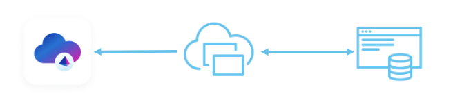
Microsoft Active DirectoryMicrosoft Entra SaaS integration: both tabs expanded
This integration manages account types, entitlements and Entra permissions. The lesson highlights support for more complex functions, Azure Privileged Identity Management and delta aggregation.
It can be configured as a source or as an integration for additional functionality. Connection settings use the relevant tokens or credentials. Filters for entitlement aggregation form part of configuring PIM-related management. These notes retain the conceptual setup requirements without storing any credentials.
 Microsoft Entra SaaS integration
Microsoft Entra SaaS integrationDelimited File: both tabs expanded
The delimited-file connector aggregates accounts and entitlements from CSV files. It supports a custom account schema and multi-valued group objects.
This method does not require a VA. Create the source, import or define its schema, and use column headings in the file's first row to identify account attributes. The source configuration defines the delimiter; the course's default example is a comma. Data can be uploaded manually through the interface or supplied through the API.
Delimited File connectorJDBC: both tabs expanded
JDBC is a generic connector for database-oriented applications, often useful when no higher-level application API is available. The course lists MySQL, Oracle, IBM DB2, Sybase and Microsoft SQL Server as database examples. Discussed capabilities include aggregation, provisioning and support for governance review; encrypted communication is available for supported source configurations.
Configuration requires a VA cluster, the appropriate JDBC driver and a service account for the connection. Define the entitlement schema for entitlement aggregation. The lesson also identifies Build Map and provisioning rules as parts of completing the configuration. Exact query syntax, driver installation and rule contents are outside this captured lesson.
JDBC connectorReview and limitations
Compare the operating dependencies before choosing a connector: an application-specific feature set, a generic protocol, a VA cluster, a Windows API dependency, or direct SaaS connectivity. The lesson identifies Active Directory and Entra as delta-aggregation examples; it does not establish that every other connector lacks the feature in all versions.
Both supported-feature and configuration tabs for all four examples were read. The knowledge-check matching descriptions were available in the page, but no answers were submitted. External connector guides and executable demonstrations are not included.
4.4 User and application onboarding
Configure sources before loading data
Creating and configuring sources comes before aggregation can load the relevant records into the tenant. The source describes the data and access that ISC will manage.
An authoritative source supplies the primary people or HR records. There may be several: for example, employee records in one system and contractor records in another.
Authoritative sourcesNon-authoritative sources represent other accounts and access to govern. Examples include directories, databases, web applications and mainframes.
 Non-authoritative sources
Non-authoritative sourcesSource configuration: five diagram markers expanded
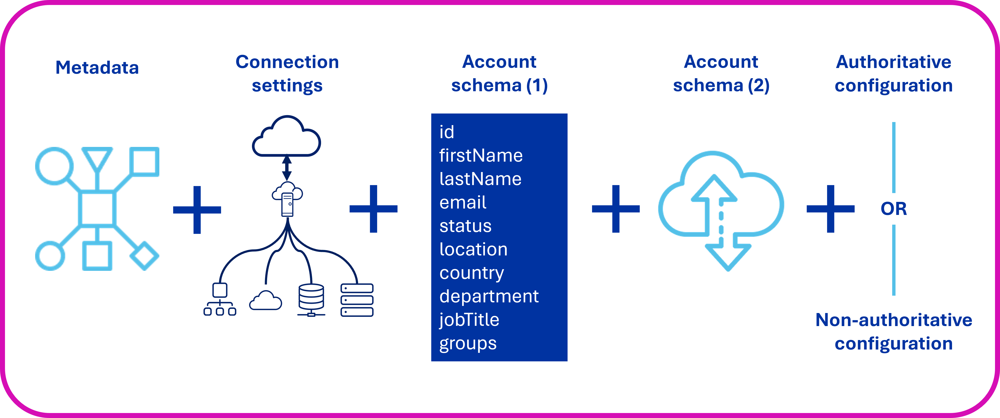
Source configuration componentsMetadata. A form-based configuration identifies and describes the source within ISC.
Connection settings. Parameters depend on the connector and target application. Examples include domain information, service accounts, REST or SOAP settings and database queries. Consult the connector guide to determine which parameters are actually required.
Account schema: attributes to read. The schema specifies what is collected during aggregation. It describes account data and may include the account's groups or entitlements.
Account schema: attribute characteristics. The Account Schema page supports creating, editing, importing and deleting attributes. Special characteristics include the account name, account identifier, multi-valued fields and access-item lists for non-authoritative sources.
Account aggregation. Aggregation can be scheduled or performed manually, as with a file upload. An account-deletion threshold protects against excessive removal of account data during an aggregation job. The Latest Account Aggregation area reports the latest operation and its outcome.
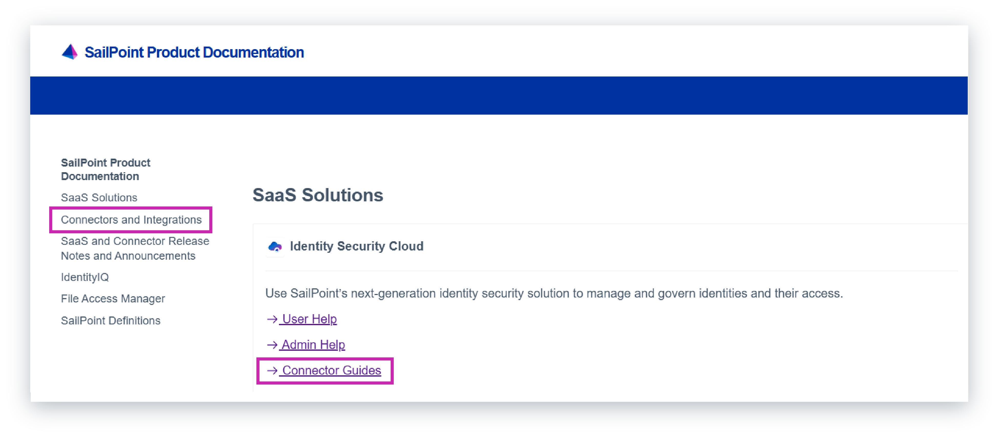
Connector documentationThe linked connector guides remain external; their connector-specific instructions were not copied into this study book.
Application onboarding
Application onboarding helps discover non-authoritative applications, create sources and recommend configuration. The course discusses AI assistance for discovery, account correlation and account provisioning, with the aim of reducing setup effort and improving consistency.
 Application onboarding
Application onboardingA separate capability, Native Change Detection, can notify administrators about changes made outside ISC. The viewed lesson describes this in relation to authoritative sources. Its full supported-source scope and detailed settings were not established in this capture.
Automatic discovery: all five timeline steps
1. Identify the existing SSO environment. The example begins with business applications already configured with a single sign-on provider.
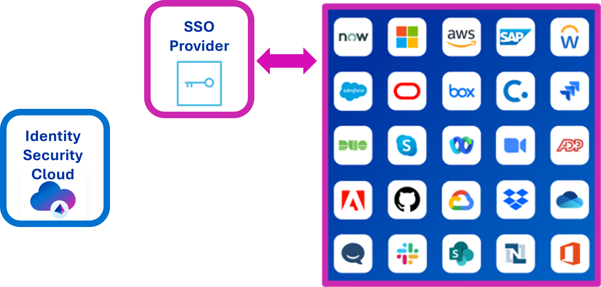
Automatic discovery step 12. Connect ISC to that SSO provider. This supplies the starting point for discovering the connected applications.
 Automatic discovery step 2
Automatic discovery step 23. Use AI-assisted application onboarding. The feature helps identify the connectivity information for those applications.
 Automatic discovery step 3
Automatic discovery step 34. Load the discovered information into ISC. The application information becomes available for onboarding work.
 Automatic discovery step 4
Automatic discovery step 45. Establish application connections. ISC can then connect with the identified business applications through the appropriate configured connectivity.
 Automatic discovery step 5
Automatic discovery step 5Manual discovery: all three carousel panels
1. Prepare an application inventory. Without an SSO provider for discovery, create a CSV containing the business applications and their connection information.
 Manual discovery step 1
Manual discovery step 12. Upload the file. Application onboarding parses the listed application information.
 Manual discovery step 2
Manual discovery step 23. Complete the application connections. The inventory supports connecting ISC with the listed applications. The short course sequence does not replace the individual connectors' configuration and validation requirements.
 Manual discovery step 3
Manual discovery step 3Configuration recommendations
After discovery, configuration recommendations address areas such as account schema and correlation logic. Discovery identifies what needs onboarding; recommendations help administrators configure the resulting sources. Administrative review and validation still matter when turning recommendations into working configurations.
 Application configuration recommendations
Application configuration recommendationsCoverage: all five source-diagram markers, the five-step automatic discovery timeline and the three manual-discovery carousel explanations were read. All available inline images, including the configuration example, were saved. No source was created, no CSV was uploaded, and no quiz answer was submitted while preparing these notes.
4.5 Recap
The module's outcomes are to explain connectivity terminology, recognize connector types and architectural patterns, and identify the requirements and steps used to establish tenant access to systems.
For revision, trace a sample integration: identify its source object, decide where the connector runs, note whether a VA or IQService is involved, define the schema and connection parameters, then validate aggregation before relying on automated access changes. This revision sequence is a study aid derived from the concepts above.
Missing artwork: the recap banner and common photograph were not saved. The retained footer is below.
Lesson footerModule coverage and missing materials
All five lessons were inspected, including continuation sections. Forty-one distinct inline image URLs were retained and placed with their topics; repeated footer and review graphics share saved files.
Three background-only assets were not saved: the common photograph, the shared Mia lesson banner and the recap banner. Exact paths are recorded in coverage.json. External catalogs and connector guides, separate narration transcripts and executable course interactions are not included. Course interface images and configuration descriptions reflect the viewed version. No quiz attempt was submitted and no live tenant configuration was changed.
MODULE 05
Module 5 — Onboarding identities (authoritative sources)
English study notes following the seven course lessons. Explanations are paraphrased and interactive explanations are expanded. Retained images preserve their original English content and course-version interfaces.
5.1 Overview
Mateo introduces the creation of identities from trusted organizational data. The module covers the identity itself, preparing accurate source data, source and identity-profile configuration, manager correlation, authoritative aggregation and resolving exceptions.
The guiding administrative question is how to create a reliable identity foundation before governing access across applications. The authoritative record must be accurate, the mappings must produce valid attributes, and the resulting identities must be checked.
Missing artwork: the common photograph and this lesson's Mateo banner were not saved. The footer was retained.
 Lesson footer
Lesson footer5.2 Identity overview
What an identity represents
An identity is ISC's governed representation of a person or another entity that holds access. It brings together authoritative attributes, accounts correlated from different systems, entitlements, roles and access relationships. Requests, certifications and policy monitoring revolve around this central record.
Different populations may originate in different systems. An HR platform could supply employees while a directory supplies contractor records. Each population's trusted source can be configured separately.
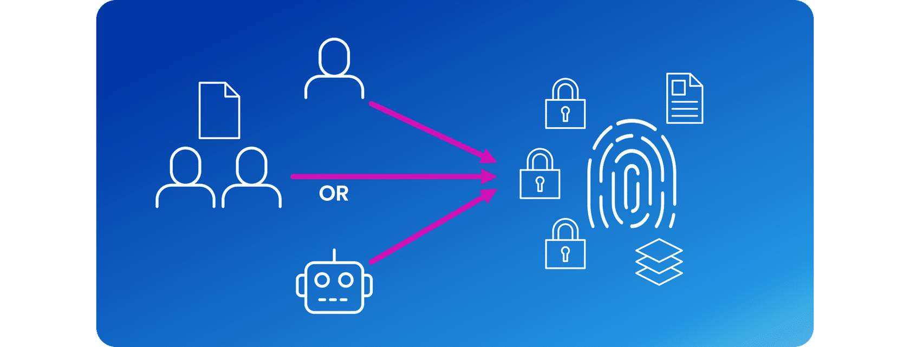
Digital identitiesThe four diagram markers distinguish employees working for the organization, non-employees such as contractors and service providers, and machine entities such as bots. The final marker identifies three components: identity attributes, access elements and accounts.
Identity attributes
These describe and distinguish the identity: examples include a name, employee number and job title. They provide context for policy and access decisions.
Identity attributesAccess elements
Entitlements, access profiles and roles describe the permissions associated with the identity. Bundling access elements helps organize permissions into manageable units.
Access elementsAccounts
An account enables access to a particular cloud or on-premises system. Its record can include a unique identifier, authentication information, permissions and descriptive attributes. An identity can therefore bring together several system accounts without being identical to any one of them.
 Accounts
Accounts Knowledge check
Knowledge checkReview: distinguish a governed identity from its accounts, its descriptive attributes and its access. All four markers and all three component tabs were read. Knowledge checks were not submitted.
5.3 Clean source data
The seven-stage onboarding process
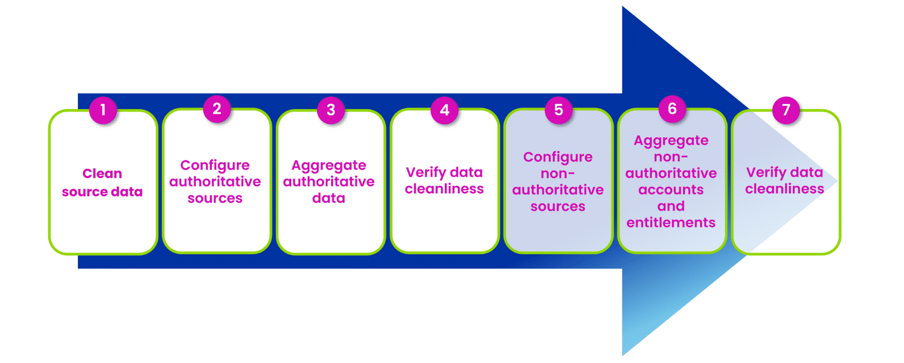
Seven onboarding steps1. Clean source data. Check that HR or other source records are accurate and complete before import. This reduces errors at identity creation.
2. Configure authoritative sources. Review mappings and transforms carefully. An incorrect configuration can produce inaccurate identity attributes and later provisioning problems.
3. Aggregate authoritative data. Monitor logs for warnings or failures and sample the identities to confirm that their attributes were created as expected.
4. Verify cleanliness through exceptions. Look for incomplete identities, duplicate usernames, missing required values and transform failures.
5. Configure non-authoritative sources. Keep naming and attribute conventions consistent with the identity foundation.
6. Aggregate non-authoritative accounts and entitlements. Give entitlements meaningful names and categories so they can be understood during requests and certifications.
7. Review identity data again. Confirm consistency across authoritative and non-authoritative data. Stages five through seven are developed in the next module.
Narrator transitionData cleaning: all three tabs
Clean data supports dependable governance and AI recommendations. HR data owners are important participants because their records populate identity attributes used by automation.
 Clean source dataData quality and outcomes
Clean source dataData quality and outcomesData hygiene. Correct spelling, punctuation and parsing problems. Remove duplicate records and update incomplete or outdated information.
 Data hygiene
Data hygieneData quality. Check accuracy, completeness, currency and compliance with the organization's formats and quality standards.
Data qualityData integrity. Keep the data consistent, relevant and organized so it can support the intended decisions. Remove obsolete or unnecessary details.
Data integrityMaintain quality after import
Review the initial aggregation and any large subsequent load. Diagnose discrepancies, validate the source, classify errors using agreed conventions, and correct or transform values according to documented standards. Document the cleanup process so it can be repeated.
Transforms are configurable objects that manipulate ISC data without requiring extensive custom code. Detailed transform implementation is covered in a separate course and is not included here.
Example: country values
The original illustration shows inconsistent representations of a country. Values with the same business meaning can appear to an algorithm as separate categories. That fragmentation can distort recommendations and other aggregated results.
 Inconsistent country codes
Inconsistent country codesThe course also recommends reviewing the access model for obsolete or incorrect access items, since poor access data can disrupt clustering and AI calculations.
 Access-model cleanup reminder
Access-model cleanup reminderCoverage: all seven numbered markers and the three data-cleaning tabs were inspected. The course's external Transforms material was not downloaded.
5.4 Configure authoritative sources
Source types and common configuration
The authoritative source is the trusted reference used to create identities. Non-authoritative systems supply other account and access information to govern.
 Authoritative configuration stage
Authoritative configuration stage Authoritative sourceNon-authoritative source
Authoritative sourceNon-authoritative sourceThe five source-configuration markers describe metadata, connectivity, account schema, aggregation settings and the configuration specific to source type.
 Source configuration components
Source configuration componentsMetadata identifies the source and its connection context. Connectivity may use a connector or a CSV feed. The schema lists the attributes stored for each account. Aggregation settings control how records are loaded. Authoritative and non-authoritative sources require different additional configuration.
Identity profiles
An identity profile establishes that a source is authoritative for creating identities. Each authoritative source has its own profile, even when several profiles use similar settings. Its configuration covers security, mappings and lifecycle management.
The course navigation is Admin > Identity Management > Identity Profiles > Create New. The screenshot shows the form; these notes describe the course example without creating a profile.
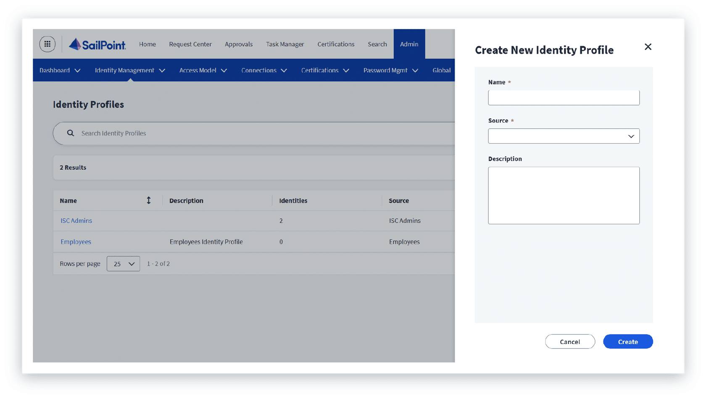
Create identity profileSettings: all five markers
Invitation options. Unless an external authentication option such as pass-through authentication or SSO is configured, only invited users can sign in.
Sign-in method. Select the authentication method for the population governed by the profile.
 Identity profile sign-in settings
Identity profile sign-in settingsBlock Access From. Configure restrictions involving addresses outside specified networks or countries on an untrusted list.
Password reset and unlock methods. Choose which recovery options users can use.
Password reset and unlock settings. The lesson discusses two-factor authentication and masking phone numbers during recovery.
 Identity profile security settings
Identity profile security settingsMappings: all four markers
Mappings define where identity attributes receive their values. Populations can have different attributes, but each profile remains a separate configuration.
Three required attributes are User Name (uid), Work Email (email) and Last Name (lastname). The lesson requires the username and work email to be unique.
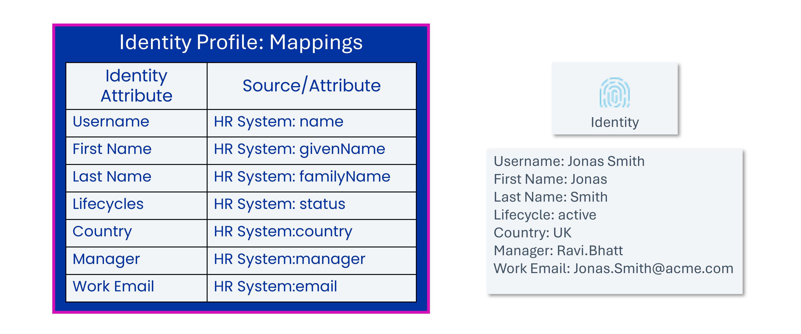
Identity attribute mappingsFor each mapping, select the source and its account attribute. When a value cannot be read directly, use a transform or rule to calculate it. Add an attribute when the profile needs information not already listed; the course gives birthday as an example.
Lifecycle management: all six markers
Lifecycle states represent relationships such as pre-hire, active, leave of absence, terminated and archived. Custom states can represent other business situations, including contractor relationships.
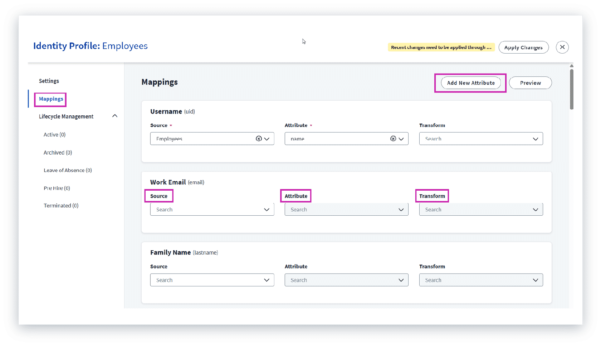
Lifecycle management Contractor lifecycle states
Contractor lifecycle statesIn the lifecycle menu, select the state to configure. Its settings can assign access profiles, enable or disable source accounts, select the identity state, and notify recipients when an identity changes state. A separate control creates additional lifecycle states.
 Lifecycle state settings
Lifecycle state settingsLifecycle-driven changes can grant access to new workers and revoke access or disable accounts when workers leave. The source page's cross-references use older module numbers; this study set follows the verified current course order, where access modeling is Module 7 and provisioning is Module 8.
Manager correlation
Manager correlation links an employee identity to the identity of their manager. That relationship supports manager approvals and certification reviews.
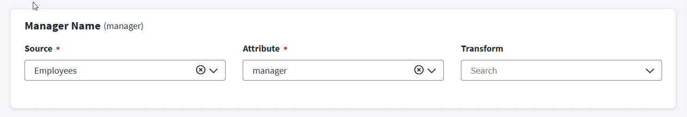
Manager correlationTwo configurations are required: map Manager Name in each identity profile, and define Manager Correlation on the source that contains the matching account data. The usual match compares a manager-identifying field on the employee's authoritative account to a corresponding attribute on the manager's identity.
The illustrated navigation is Admin > Connections > Sources, select the source, open Account Management > Account Correlation, then locate Manager Correlation near the bottom.
 Manager correlation fields
Manager correlation fieldsThe Identity Attribute field identifies the attribute on the manager's identity. The Account Attribute field identifies the field on the employee's account that names that manager. Save stores the configuration in the course example; no live settings were saved during this capture.
Coverage: five source markers, five security markers, four mapping markers, six lifecycle markers and three manager-correlation markers were inspected. All continuation sections were opened without submitting knowledge checks.
5.5 Aggregate authoritative data
From source records to identities
Aggregation reads source account data using the source connection and schema. For each source account, the configured attributes become an account record in ISC. Connected systems can support manual, scheduled, timed or event-driven processing as appropriate. The lesson describes disconnected delimited-file imports as manual operations.
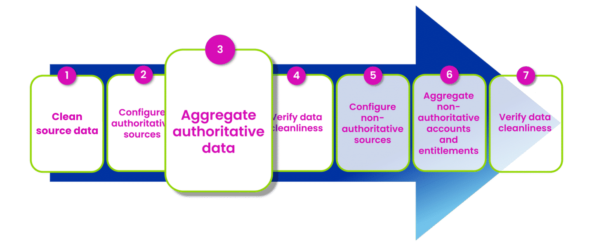
Aggregation stageThe six-panel timeline shows the data path:
1. Request collection. ISC asks the VA to collect source account information on demand or on schedule.
 Aggregation step 1
Aggregation step 12. Read the source. The external system holds the records needed for governance.
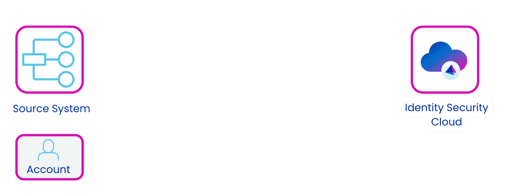
Aggregation step 23. Import the defined attributes. The account schema controls which fields are brought into ISC.
 Aggregation step 3
Aggregation step 34. Exclude fields outside the schema. In the course example, an ssn field is not transferred because it was not defined in the schema. This illustrates that the schema shapes the imported record.
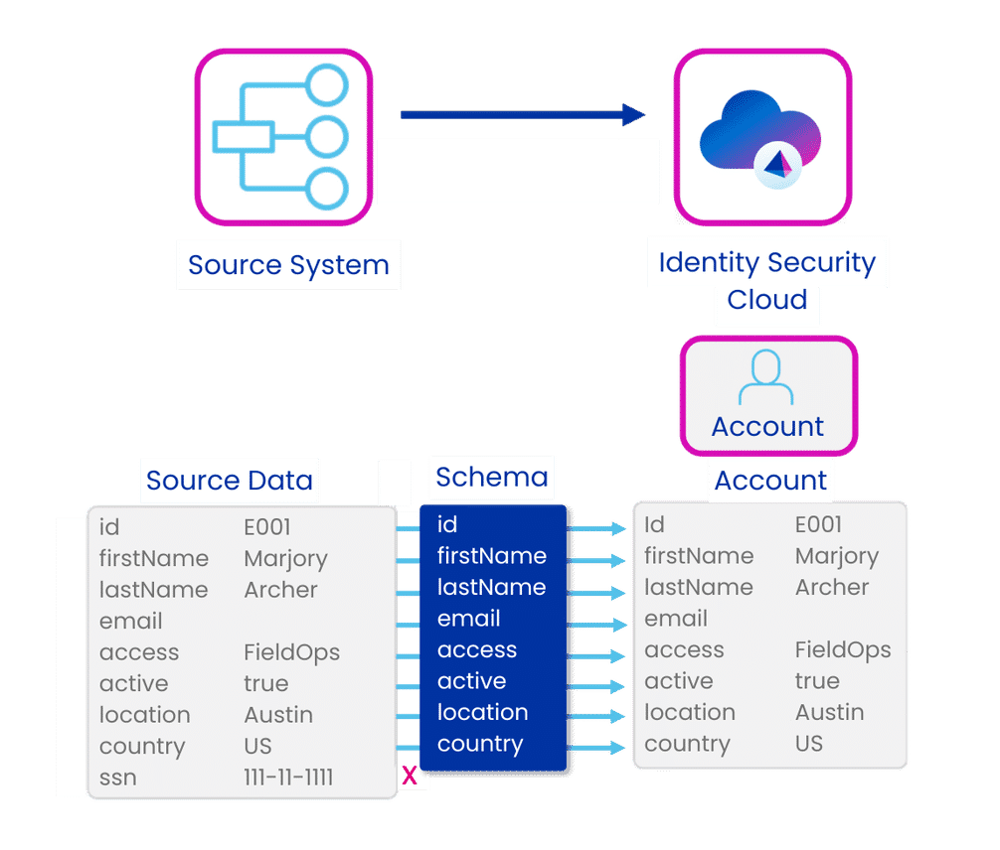
Aggregation step 45. Apply identity mappings. The identity profile maps account attributes into identity attributes.
 Aggregation step 5
Aggregation step 56. Create or update identities. The resulting identity records reflect the configured profile and imported account values.
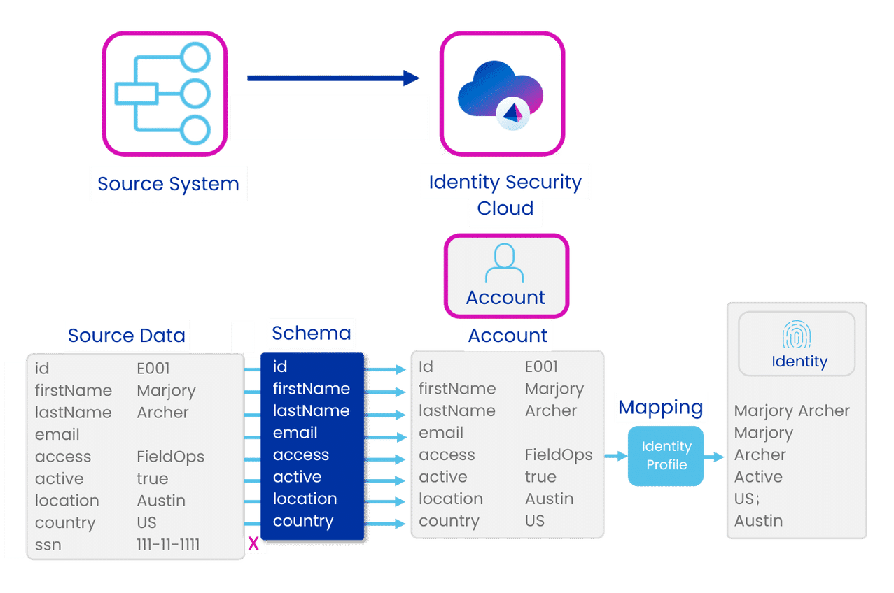
Aggregation step 6Manual identity processing
The lesson instructs administrators to apply profile, role or access-profile changes through identity processing. After saving and reviewing the profile configuration, Apply Changes initiates recalculation for identities.
 Apply Changes
Apply ChangesOptimization and testing
Optimized aggregation skips unchanged source data. This can matter after a configuration change: a record may need recalculation even when its original source values are unchanged. The lesson identifies non-optimized aggregation as an available approach when needed.
Aggregation consumes time and resources. Complete related role, access-profile and application changes before recalculating them together. Save and preview identity-profile changes to verify expected values before applying them. No aggregation or identity processing job was run while preparing these notes.
5.6 Identity exceptions
Two exception categories
Incomplete identities result from invalid or missing creation data, such as a duplicate uid or an absent last name, work email or username. Identities with errors commonly indicate a failed or incorrect transform operation.
 Exception review stage
Exception review stageIdentify, inspect and resolve: all three accordions
1. Identify the exception. Open Admin > Identity Management > Identities and select the incomplete-identity or error list.
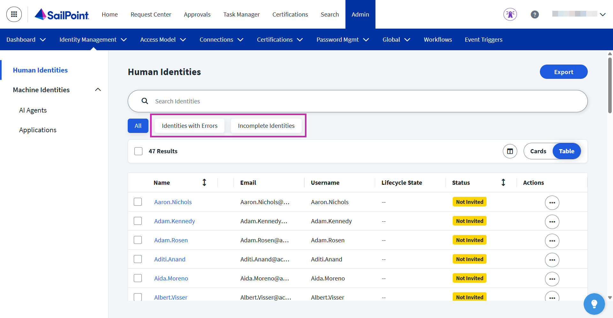
Identity exception lists2. Review details. Use the exclamation indicator beside an identity to inspect the problem. The lesson also points to information on the Identity Profiles page and a CSV report download.
 Incomplete identity details
Incomplete identity details3. Correct the cause. The preferred approach is to repair the authoritative source data and aggregate again. If the source cannot be edited, or the required value is not yet available in HR, a transform can calculate the needed identity attribute.
The example is a pre-hire worker without an email address. A transform can derive a temporary address from name components and an agreed domain. The full transform definition, collision handling and production naming policy are not supplied in this lesson.
Reviewing exceptions and diagnosing missing or invalid values is more useful than indiscriminately deleting affected accounts. Knowledge-check answers were not submitted.
5.7 Recap
The module concludes with understanding the identity, describing authoritative onboarding and resolving identity exceptions. The practical sequence is clean data, configure source and profile, map managers, aggregate, inspect outcomes and correct the cause of errors.
Missing artwork: the recap banner and common photograph were not saved. The retained footer appears below.
Lesson footerModule coverage and missing materials
All seven lesson bodies and continuation sections were read. Thirty-nine unique inline image URLs were retained. Expanded content includes four identity markers, three identity-component tabs, seven onboarding-step markers, three data-cleaning tabs, twenty-three source/profile/manager markers, the six aggregation panels and three exception accordions.
Four background-only files were not saved: the common photograph, two Mateo lesson-banner variants and the recap banner. Exact paths are in coverage.json. External transform training, complete connector deployment manuals, separate audiovisual transcripts and executable interactions are not included. No quiz was submitted, and no live tenant configuration or source data was changed.
MODULE 06
Module 6 — Onboarding identities (non-authoritative sources)
English study notes in the course's five-lesson order. Paraphrased explanations expand the inspected diagrams and process panels. Original English images are retained alongside their subjects.
6.1 Overview
Trey introduces the second part of onboarding: connect non-authoritative systems, correlate their accounts with existing identities, collect access data and validate the combined result. The returning-learner panel highlights improved coverage of account-correlation configuration.
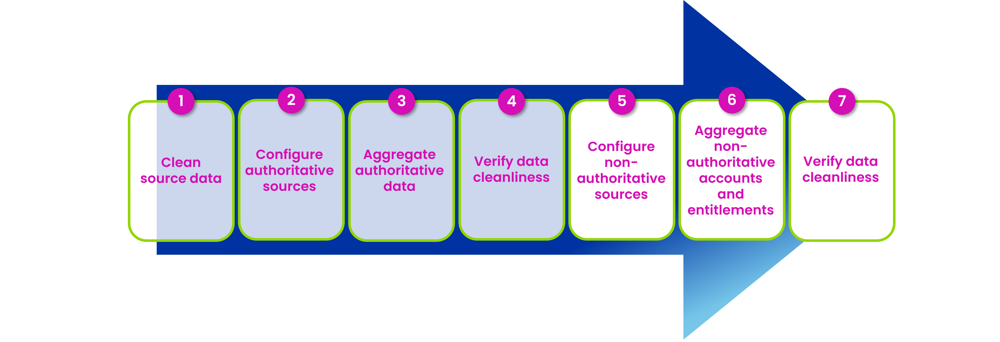
Onboarding implementation stepsThe seven-stage diagram repeats the end-to-end process: clean source data; configure authoritative sources; aggregate authoritative records; resolve creation exceptions; configure non-authoritative sources; aggregate their accounts and entitlements; then review the combined identity data. This module develops the last three stages. The source page uses an older module number for the preceding authoritative-source material; this study set follows the verified syllabus.
The expanded markers stress consistent mappings and naming, meaningful entitlement categories, and a final accuracy check across both source types. All seven were inspected.
Missing artwork: the common photograph and Overview's Trey banner were not saved.
 Lesson footer
Lesson footer6.2 Account correlation
Match accounts to their owners
Non-authoritative sources contain application, directory or database accounts without being the main people-record system. Account correlation associates those accounts with the identity that owns them, providing the link needed to govern access across systems.
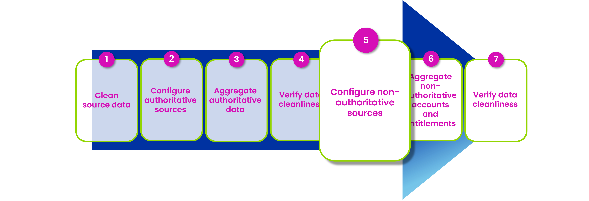
Non-authoritative configuration stage Account-to-identity correlation
Account-to-identity correlationCorrelation compares a source-account attribute with an identity attribute. A successful, unambiguous match assigns the account to that identity. The lesson emphasizes case sensitivity and the need for a unique match. Some connectors include a default matching sequence, which can be adapted to the source's data.
 Narrator transition
Narrator transitionConfigure matching before the first aggregation
The course navigation is Admin > Connections > Sources, select the source, then Account Management > Account Correlation.
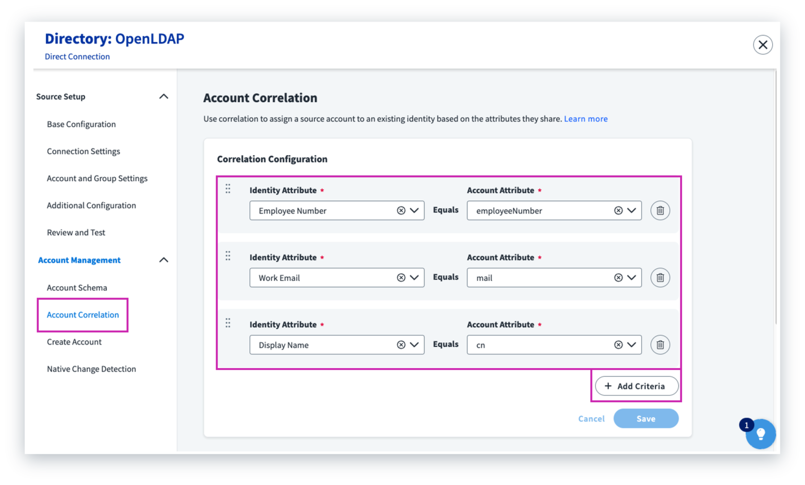
Correlation configurationThe four expanded markers explain how to choose an identity attribute such as email, displayName or uid, select its corresponding account attribute, prioritize likely matches, and add or remove criteria. Lower-priority rows are fallbacks when earlier comparisons fail.
AI-driven recommendations
Recommendations propose attribute pairings and estimate how many accounts they can correlate. The explanation associated with a recommendation shows the potential correlation percentage. Add Recommendation inserts a suggested pair at the top of the configuration. When several identity attributes could correspond to one account attribute, choose the pairing that fits the actual data and ownership model.
 AI correlation recommendations
AI correlation recommendations Narrator transitionSection divider
Narrator transitionSection dividerTest the correlation logic
Test Account Correlation evaluates a sample to estimate the number and percentage of accounts that would match. Use the result to refine criteria and ordering. A low rate can indicate incomplete or inaccurate source data; adding criteria alone does not fix poor input values.
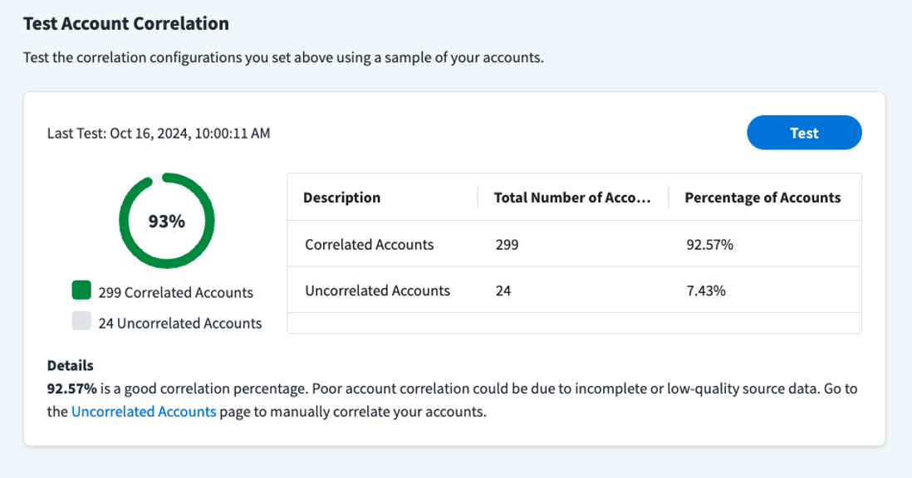
Correlation test Narrator transition
Narrator transitionExample: case sensitivity and fallback matching
The five numbered markers begin with Employee Number as the highest-priority comparison. The source value is e001. It does not match E001 because case differs; it also does not match A001 or C004.
 Correlation comparison example
Correlation comparison exampleThe next comparison uses work email. In the course example, it matches the first identity. ISC checks the candidate identities to ensure the match is unique before correlating the account.
 Fallback email comparison
Fallback email comparison Narrator transition
Narrator transition Section divider
Section dividerResolve uncorrelated accounts
An account remains uncorrelated when ISC cannot identify its owner using the configured comparisons. A nickname versus a formal name, stale data or a former worker's account can explain the mismatch.
The lesson presents several options: correct source attributes, correlate a specific account manually, reconsider source configuration when many records are affected, or intentionally retain an uncorrelated account when no corresponding identity should exist. It also mentions deleting and recreating a source as a possible configuration-rework approach; no such operation was performed while producing these notes.
Use the Uncorrelated Accounts report
 Uncorrelated accounts report
Uncorrelated accounts report- Open Admin > Global > Reports.
- Generate the Uncorrelated Accounts report as PDF or CSV and review each account's source.
- Correct the relevant matching value in the source. For example, when those fields are configured as a pair, a directory sAMAccountName can be aligned with the identity's uid.
- Save the source correction and aggregate again.
Manual correlation
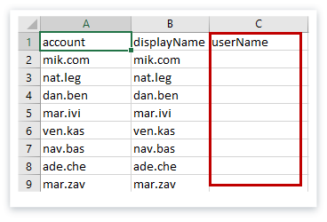
Manual correlation file- Open the source through Admin > Connections > Sources.
- Choose Account Management > Uncorrelated Accounts.
- Download the correlation CSV.
- Populate its userName column with the identifiers of the intended identities as described by the course template.
- Save and upload the completed file on the same page.
A manual correlation persists even if the account's attributes later change. To attach it to a different identity, the existing association must be removed manually first. The course text calls the values in the userName column the associated identities' Account IDs; that wording is retained as a course-template description, rather than an independently validated API-field specification.
 Knowledge check
Knowledge checkCoverage: four configuration markers and five numbered example markers were inspected. No correlation file was uploaded and no quiz was submitted.
6.3 Entitlement aggregation
Entitlements and source entitlements
An entitlement describes an access right: what a subject can reach and what it can do there. Source entitlements are the rights available in a connected system. Importing them builds a catalog even when no current account holds a particular entitlement.
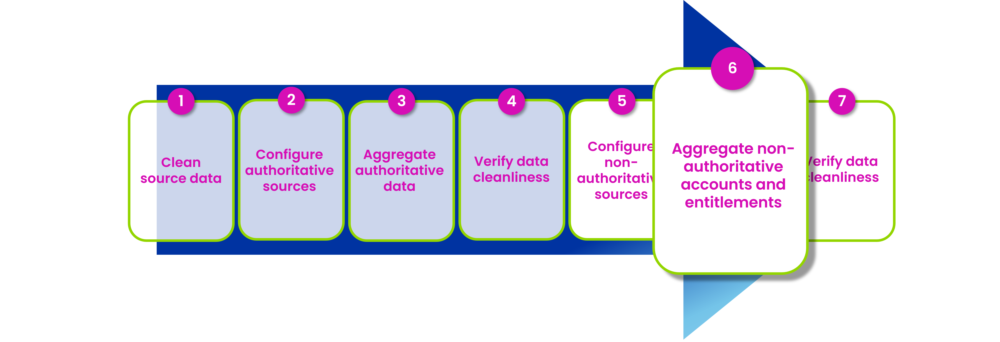
Account and entitlement aggregation stage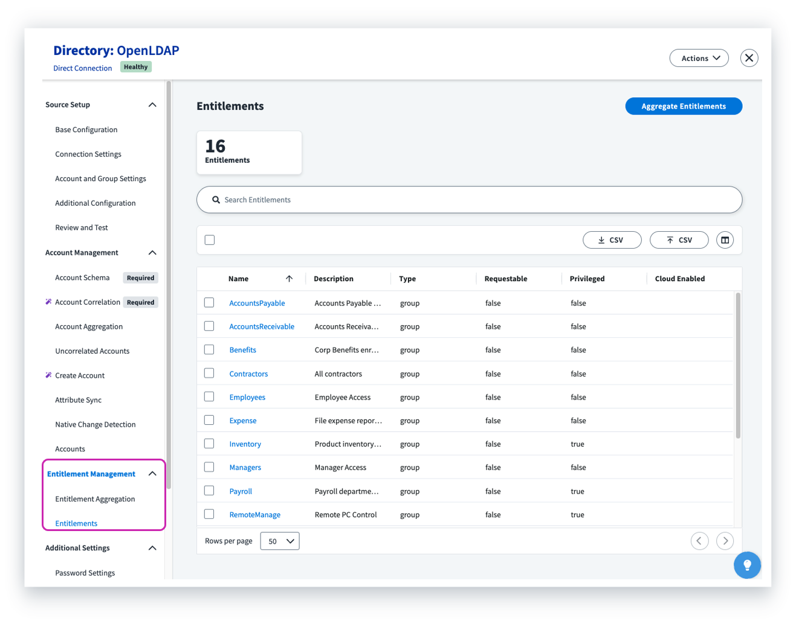
Entitlement catalogThe aggregation process: all five panels
 Entitlement aggregation process
Entitlement aggregation processThe introductory panel compares entitlement aggregation with account aggregation: both read defined data from a source.
Collection. ISC asks the VA to collect group or entitlement information on schedule or on demand.
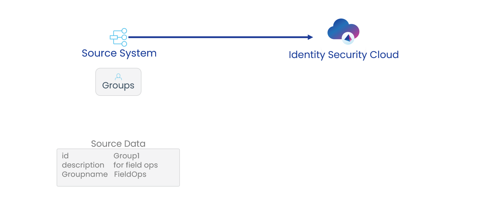
Entitlement collectionSchema. The connector's entitlement schema defines the imported fields. The lesson describes API-based customization by an implementer when required.
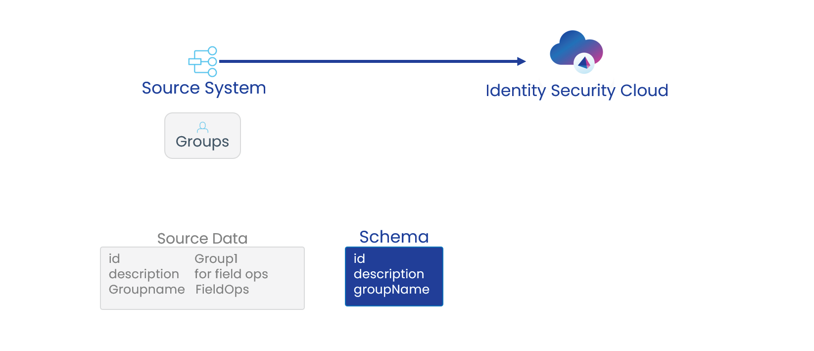
Entitlement schemaFirst item. The process reads the first entitlement record.
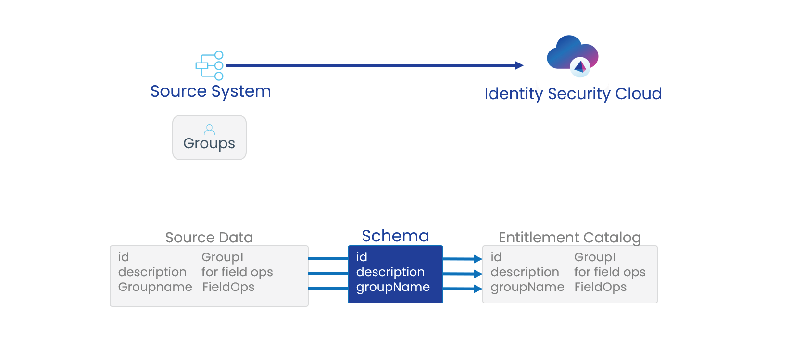
Read the first entitlementRemaining items. It continues through the groups or rights until the collection is complete, making them available in ISC.
 Read the remaining entitlements
Read the remaining entitlements Narrator transition
Narrator transitionWhy aggregate the full catalog?
Account aggregation shows which access an account currently holds. Entitlement aggregation provides the wider list of available rights, including unused ones. This supports access-model design, provisioning, requests and governance. The course recommends aggregating entitlements before building access models or onboarding the associated users, and classifying sensitive permissions as privileged.
 Entitlement management transition
Entitlement management transitionManage and enrich entitlements
After import, mark sensitive access appropriately and configure whether entitlements can be requested. The source's Entitlements page supports selecting individual or all records and downloading or uploading CSV data for maintenance.
 Manage source entitlements
Manage source entitlementsMetadata adds technical and business context beyond a name or simple tag. The course describes predefined fields and up to twenty-five custom attributes; this is a course-version limit, not an independently verified current entitlement.
 Entitlement metadata
Entitlement metadata Narrator transition
Narrator transitionCentralized entitlement data is available under Admin > Access Model > Entitlements. It supports reviewing the tenant's catalog and combining rights into larger access-model elements.
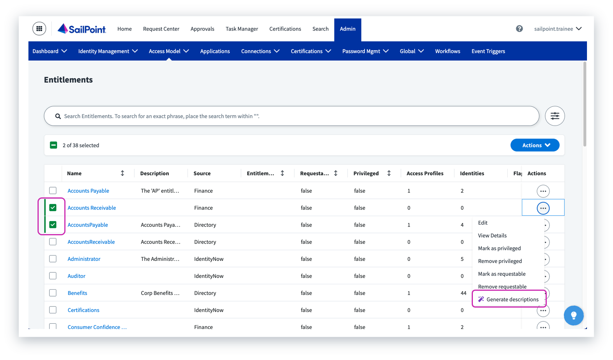
Central entitlement dataGenAI can suggest readable descriptions for individual entitlements or in bulk. The suggestions remain editable, helping reviewers understand what access provides. Review generated text against the actual permission before relying on it for a decision.
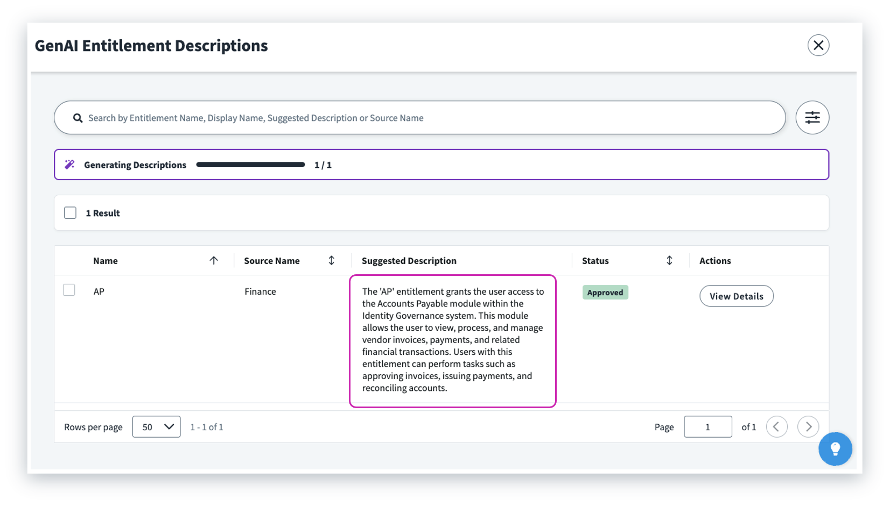
GenAI entitlement descriptionsCoverage: all five process-panel explanations were available and read. Metadata, catalog and generated-description examples were retained. No live catalog records were edited.
6.4 Reviewing identity data
Validate the combined records
The final onboarding stage checks that synchronized identity, account and access information is complete, accurate and consistent with the source systems.
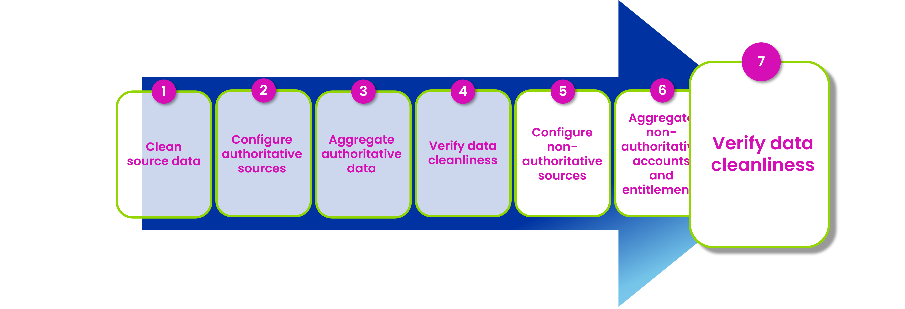
Identity data validation stageNavigate the five identity sections
 Identity navigation
Identity navigationThe five expanded markers describe Details for profile information, Access for assigned rights, Accounts for linked system accounts, Work Reassignment for delegation and Events for activity history.
Details and identity attributes
The example uses Albert's identity. The upper overview contains default and pinned attributes; other populated attributes appear below. Values originate from the identity profile's mappings, either directly from source fields or through calculation.
Identity detailsThe four detail markers identify Lifecycle State as the employment-related state and its origin, Identity State as Active after the example user has established a password and strong authentication, Identity Profile as the link to the relevant authoritative population's settings, and Display Name as the example's sign-in name.
 Identity attributes
Identity attributesThe Identity Attributes area includes standard and custom populated fields from the HR identity profile. Pin the most useful values to make important governance information easier to see.
Access
The course's assigned-access example uses Amanda. It shows roles, access profiles, entitlements and assigned applications. These are different views of the access associated with the identity.
Assigned accessRoles Access profiles
Access profiles EntitlementsAssigned applications
EntitlementsAssigned applicationsSelect an entitlement to inspect its name and any available additional details.
 Entitlement details
Entitlement detailsAccounts
After aggregation and correlation, each linked source account appears under the identity. The page identifies the account and its source and provides supported actions such as enabling, disabling, unlocking, removing, aggregating or updating correlation.
Identity accountsOpen the account name to inspect attributes as received from the source. Account attributes differ from identity attributes, although a directly mapped value may appear in both. Pin important account attributes for quick reference.
 Account attributes
Account attributesThe next example lists Albert's correlated accounts sorted by source name, with an action menu for each.
 Accounts sorted by source
Accounts sorted by source Narrator transition
Narrator transitionEntitlement assignments
An account's assigned entitlements appear in its details. Selecting one opens the corresponding Entitlement Catalog entry with the related information.
Entitlement assignmentsWork Reassignment
Users can arrange delegation for periods such as vacation. Administrators with appropriate identity-list access can also reassign work, temporarily or permanently. The examples include access-request approvals, certifications and other/manual tasks. The No end date option creates an ongoing assignment rather than a time-limited one.
Work reassignmentEvents
Events support searching and downloading recent activity such as access changes and requests, sign-ins and sign-outs, and administrative updates. These records help investigate user issues.
EventsCoverage: all fifteen markers in this lesson were inspected, including six unnamed markers covering account details, pinned attributes, entitlement assignments, work reassignment and events. The source page exposed existing quiz-feedback text; no quiz response was entered during this capture.
6.5 Recap
The module closes with three capabilities: correlate accounts and resolve unmatched records, discover and aggregate entitlement data, and validate identity, account and access information.
Review these distinctions: automatic matching versus a persistent manual link; the full entitlement catalog versus currently assigned rights; and account attributes versus identity attributes. They explain why an import can complete successfully while its governance data still needs review.
Lesson footerModule coverage and missing materials
All five lesson bodies were read. Forty-nine unique inline image URLs were saved and placed in their lesson sequence. The Overview update and seven process markers, nine correlation markers, five entitlement process panels and fifteen data-review markers were inspected.
Six background-only assets were not saved: the shared photograph, four Trey lesson-banner variants and the recap banner. Exact paths are in coverage.json. External resources, a complete audiovisual transcript and executable course interactions are not included. No live source, entitlement, account correlation or work reassignment was changed, and no quiz was submitted.
MODULE 07
Define and maintain an access model
WORKING EDITION — IMAGE COVERAGE INCOMPLETE. Detailed paraphrased notes are available for the five lessons, with 26 retained images. The original module's complete decorative/background image inventory and any separate audio/video transcripts have not been verified. See the course coverage report for the exact status.
Searchable study notes from SailPoint Identity University, Set Up and Administer Identity Security Cloud, module 7. Listed duration: 1 hr 5 min. Captured through the signed-in course player on 14 November 2026 (Hong Kong).
Open the source module
These are paraphrased study notes, not a verbatim course transcript. Product behavior below reflects this course version; no separate product-documentation verification was performed.
Contents and capture coverage
| Lesson | Topics captured | Coverage |
| 1. Overview | Purpose, learning objectives, guiding questions | Read |
| 2. Access model overview | Definitions, benefits, controls, bank example, Access Modeling | Read; all five explanatory accordions opened; continuation sections expanded |
| 3. Components and relationships | Entitlements, access profiles, roles, dynamic roles, lifecycle states, construction, assignment/detection, evaluation | Read; grant-method accordions opened; continuation sections expanded; process-step text captured |
| 4. Access model best practices | Planning, AI assistance, design, implementation, ownership and maintenance | Read; all three accordions and all three implementation tabs opened; continuation section expanded |
| 5. Recap | Expected outcomes | Read |
Knowledge-check topics are summarized below. No answers were submitted, no attempts were intentionally consumed, and no completion/reset controls were used. Opening and navigating lessons can update the platform's normal viewing progress.
1. Overview
The module introduces how to build, define, and maintain access models in Identity Security Cloud (ISC). It connects the access building blocks with security policies and ongoing administration.
Questions to be able to answer:
- What is an access model, and how does it help manage access?
- What controls determine a user's access within a system?
- Which components are needed to build an effective model?
- How is access established for a population of identities?
- How does the model support security and organizational policy compliance?
- How is the model kept current as the business changes?
2. Access model overview
Purpose and vocabulary
An access model organizes related permissions into logical units. Requests, approvals, reviews, and audits can then operate on meaningful groups instead of requiring decisions about every individual permission.
| Component | Meaning | Bank analogy |
| Entitlement | A specific access right on a source system | One key, such as permission to use a loan system or access an audit log |
| Access profile | Related entitlements grouped for management and provisioning | A key ring, such as teller-system access |
| Role | A business function that determines which access profiles an identity receives | A Branch Manager job template |
| Lifecycle state | An identity's organizational status, which influences birthright access and account actions | Prehire, active, leave, or retired status |
The model supports authorized access for both human and machine identities. Regular review is needed because business responsibilities and access requirements change.
Design requires balance: very broad profiles can grant excessive access, while excessive numbers of narrow profiles increase administrative complexity. The goal is effective security with manageable scale.
 Course illustration — Sam-bankmanager-01_NOPROCE
Course illustration — Sam-bankmanager-01_NOPROCEEfficiency benefits
- Reviews: business-friendly names make collections of access easier to understand.
- Requests: expected job needs provide context for requesting access. An accounting data-entry employee, for example, would not normally need access to the software company's code base.
- Division of expertise: business stakeholders understand people and responsibilities; technical teams define the access points that belong in each logical group.
Control benefits
- Connect entitlement assignment to lifecycle states and roles, supporting automated grants, removals, and approval workflows.
- Apply a common security/approval approach to collections of entitlements instead of handling each separately.
Running example: Sam's bank branch
Sam needs access to customer accounts, loan tools, reporting, physical-security feeds, and vault-related systems. These include different rights such as viewing, editing, or approving. Managing hundreds of individual permissions for Sam and combinations of permissions for more than one hundred staff members would be difficult, particularly when people leave. The access model organizes those rights into meaningful sets.
The example is illustrative: grouping access reduces the administrative burden without implying that every employee should receive the same permissions.
Access Modeling tool
The course describes SailPoint Access Modeling as an AI and machine-learning capability for discovering enterprise roles and providing role insights. It can suggest new roles and help develop a least-privilege model. Later best-practice guidance also describes suggestions for entitlement updates and improvements to existing roles.
 Course illustration — Access-Modeling@2x_NOP
Course illustration — Access-Modeling@2x_NOP Course illustration — Access-modeling_NOPROCES
Course illustration — Access-modeling_NOPROCES3. Components and relationships
Entitlements
An entitlement represents a point of access held by an identity on a source. Examples include read/write permission, administrative privileges, access to scheduling software, or authority to approve loan applications.
Entitlements are collected from sources together with account data. They describe access that users already hold on those systems and supply the building blocks for access profiles.
Course illustration — entitlement_NOPROCESS_ Course illustration — slide11_NOPROCESS_
Course illustration — slide11_NOPROCESS_Access profiles
An access profile bundles related entitlements from one source so that ISC can manage and provision them as one unit.
Bank examples distinguish ordinary employee access from managerial rights:
- Facility access may allow staff to enter the bank while limiting security-setting changes to managers.
- Personnel access may let employees view their own records while allowing managers to update staff information.
- Banking access can distinguish cash-operation tools for tellers from loan-processing tools for loan officers.
The course uses these examples to illustrate grouping; the single-source boundary still applies to each individual access profile.
 Course illustration — access-prof_NOPROCESS_
Course illustration — access-prof_NOPROCESS_ Course illustration — slide12_NOPROCESS_
Course illustration — slide12_NOPROCESS_How access profiles reach identities
| Method | Course explanation |
| Detection during processing/aggregation | ISC recognizes an access profile when the identity already holds its complete set of entitlements. This makes existing access visible at the profile level. |
| Access requests | Users request profiles through Request Center. Configured policies may involve several approval stages or automatic approval. Requesting a role can indirectly grant its profiles. |
| Automated provisioning | Lifecycle-state configuration or role criteria can drive grants. The course describes removal when lifecycle changes mean that access is no longer appropriate. |
Distinguish provisioning from detection: provisioning changes access; detection recognizes entitlement combinations that the source reports. The later aggregation step confirms what is actually present.
Roles
Roles represent business functions based on factors such as job title, department, or location. A role can combine multiple access profiles, including profiles from different sources. The individual profiles each remain restricted to a single source.
Membership can follow configured criteria or an approved role request. ISC then provisions the entitlements included in the role's access profiles.
The bank example compares Rico, a Head Teller with reconciliation-approval rights, with Janae, a part-time Teller without those managerial rights. Similar work does not require identical access.
 Course illustration — roles_NOPROCESS_
Course illustration — roles_NOPROCESS_ Course illustration — slide13_NOPROCESS_
Course illustration — slide13_NOPROCESS_Membership configuration
- Identity List: explicitly select the identities to assign; this is the more manual approach.
- Standard Criteria: use logical criteria groups. For example, manager job information combined with active employment status can select identities for a managerial role.
Course illustration — role_NOPROCESS_Dynamic Roles
Dynamic Roles use attribute dimensions to make birthright access more granular within a role. This can reduce the need for many separate roles that have overlapping access.
For example, a Branch Manager role can include a location dimension. Managers receive access for their own branch rather than gaining unnecessary access to other branches. The saved diagram illustrates Fourth Street, Main Street, Avenue A, and Garden Street as location variants.
 Course illustration — Your-paragraph-text-
Course illustration — Your-paragraph-text-Lifecycle states
Lifecycle states define birthright access in the context of an identity profile and authoritative-source information. Employment status can change the access a person needs; an active employee and someone on leave may need different treatment.
A state's configuration can combine access profiles for multiple sources and define provisioning behavior. The course describes granting/removing profiles and enabling/disabling accounts through lifecycle-state configuration.
Cardinality to remember: an identity has one lifecycle state at a time, but can hold multiple roles, access profiles, and entitlements.
 Course illustration — lifecycle_NOPROCESS_
Course illustration — lifecycle_NOPROCESS_ Course illustration — slide16_NORPROCESS_
Course illustration — slide16_NORPROCESS_Building the model
The five-panel process presents this sequence:
- Introduce the access-model building blocks.
- Aggregate entitlement data into ISC.
- Define access profiles containing one or more related entitlements from a single source.
- Configure lifecycle-state provisioning behaviors through identity profiles to grant or remove access profiles.
- Configure roles that grant one or more access profiles to members.
Lifecycle-state access and role-based access are complementary ways of assembling an identity's overall access. They should not be treated as a requirement that every grant must pass through a role.
One lifecycle state with multiple roles, profiles, and entitlementsCourse illustration — slide17-1_NORPOCESS_ Course illustration — slide17-2_NORPOCESS_
Course illustration — slide17-2_NORPOCESS_ Course illustration — slide17-3_NORPOCESS_Course illustration — slide17-4_NORPOCESS_
Course illustration — slide17-3_NORPOCESS_Course illustration — slide17-4_NORPOCESS_Applying the model: assignment and detection loop
The lesson identifies role assignment, access-profile detection, and access-model evaluation as the three processes involved in applying a model.
Its seven-panel assignment/detection process consists of an introduction and six substantive stages:
- Aggregate or calculate identity attributes and existing entitlements.
- Evaluate role membership criteria and check for the profiles associated with assigned roles.
- Provision the access represented by those profiles and their entitlements.
- Aggregate updated entitlement data from the sources to confirm the resulting access.
- Detect profiles by matching the identity's observed entitlements.
- Associate the detected access with relevant roles and the access appropriate to those role assignments.
In the example, Sam's title and Main Street location select a Branch Manager role. Profiles for personnel management, branch operations, and loan/account oversight are provisioned. Reaggregation then verifies the access. Leftover access from Park Street can be detected and surfaced for security review rather than disappearing from view simply because it is outside Sam's current role.
Course illustration — slide20-1_NOPROCESS_Course illustration — slide20-2_NOPROCESS_Course illustration — slide20-3_NOPROCESS_ Course illustration — slide20-4_NOPROCESS_Course illustration — slide20-5_NOPROCESS_Course illustration — slide20-6_NOPROCESS_
Course illustration — slide20-4_NOPROCESS_Course illustration — slide20-5_NOPROCESS_Course illustration — slide20-6_NOPROCESS_Access-model evaluation
The course states that source aggregation evaluates role assignments, lifecycle-state assignments, and access-profile detection. This evaluation/enforcement occurs automatically with aggregation and does not require a separate evaluation configuration.
The lesson also names two ways to initiate evaluation independently:
- Use Apply Changes in the interface.
- Initiate it programmatically with a REST API.
No API endpoint or request payload was supplied in the captured lesson. The saved UI illustration highlights Apply Changes on the Roles page.
Course illustration — slide21_NOPROCESS_4. Access model best practices
Plan before configuring ISC
Treat the model as a blueprint. Develop and maintain a version outside ISC so stakeholders can refine it before implementation.
- Involve security teams and other relevant business stakeholders.
- Document access requirements for each job function before configuration.
- Keep an accessible documentation repository for the people responsible for the model.
- Use Access Modeling suggestions to help discover roles, identify entitlement changes, and improve the role program.
Design for security, clarity, and scale
- Give roles, profiles, and states understandable names and descriptions; avoid unnecessary jargon and acronyms.
- Use metadata to preserve context for future stakeholders.
- Apply least privilege: grant the access needed for the job.
- Review duplicate and overlapping access sets.
The course's overlap example uses profiles containing ABC and ABCD. An identity with ABCD can match both. If ABC is a meaningful standalone unit, separating the groupings into ABC and D can avoid that overlap.
Implementation approach: all three tabs
| Approach | Guidance |
| Clean data | Improve entitlement data quality so patterns are easier to identify. The course notes that entitlement certifications commonly precede profile and role certifications. |
| Small, familiar starting point | Begin with a manageable model you understand. Avoid launching a large role/RBAC project immediately; learn from business users and expand automation for common requests. |
| Ongoing program | Roles change with the business. Build recurring maintenance cycles instead of treating initial implementation as the end of the work. |
Ownership and maintenance
Each component needs an accountable owner. Owners must understand its requirements, coordinate updates with the business, and agree on a management philosophy as operations evolve.
Access maintenance involves IT, security, business stakeholders, and appropriate administrators/access managers. Individual users should not control their own access without oversight. Administration and auditing remain necessary to ensure access is provisioned appropriately.
Course illustration — slide26_NOPROCESS_5. Recap
Expected outcomes are the ability to explain why access models matter, identify the components and construction steps, and recognize how the model supports management of identities and their access.
The recap presents an exit/next-module action. The separate course assessment and other course modules were outside this capture's scope.
Knowledge-check study guide
These paraphrased prompts and answer concepts support revision; they are not a record of submitted responses.
| Topic tested | Answer concept |
| Name for a related collection of permissions | Access profile |
| Efficiency and control benefits | Entitlement lifecycle management, simpler access reviews, and assignment informed by expertise |
| Component matching | Entitlement = source access point; profile = same-source bundle; role = business-function grouping; lifecycle state = birthright-access context within an identity profile |
| Source limit for a profile | One source |
| How entitlements are assembled into roles | Entitlements belong in profiles, and profiles are associated with roles |
| Claims that do not describe sound maintenance | IT-only responsibility and user-managed access without oversight |
Glossary and quick lookup
| Term | Quick reference |
| Aggregation | Source-data collection that supplies account/entitlement information and triggers the evaluation described in this module |
| Birthright access | Access assigned from lifecycle-state or role conditions rather than requiring an individual request for every permission |
| Detection | Recognizing a profile from the entitlements actually reported for an identity |
| Provisioning | Applying configured access changes to a source |
| Deprovisioning | Removing access that should no longer be held |
| Dynamic Role dimension | An attribute such as location that determines the appropriate access variant within a role |
| Least privilege | Limiting access to what the identity needs |
| Access Modeling | The AI/ML capability described for role discovery, insights, and model improvement |
Diagrams and media
The accompanying gallery preserves 26 image assets downloaded from the rendered, authenticated lessons: 25 PNGs and one SVG. Some are conceptual diagrams, some are interface illustrations, and a few are supporting illustrations/icons. Original source filenames are retained with spaces normalized to hyphens.
- Component illustrations: entitlement, access profile, roles, lifecycle.
- Detailed component illustrations: slides 11–16, role, and the location-dimension diagram.
- Construction steps: slide17-1 through slide17-4.
- One-state/multiple-access illustration: slide18.
- Assignment/detection sequence: slide20-1 through slide20-6.
- Evaluation UI: slide21.
- Maintenance illustration: slide26.
- Overview examples and Access Modeling illustrations.
All images remain SailPoint course material. This capture does not grant redistribution rights.
Limits and inaccessible or unverified content
- No module access block encountered: all five lessons opened in the authenticated player.
- No standalone transcript export captured: the notes summarize lesson text. No separate narration transcript was exposed in the inspected lesson content; an unexposed audio track cannot be ruled out.
- No video file captured: no video player was observed in the inspected material. The best-practice lesson's DOM contained no video/audio elements when checked.
- Not a SCORM archive: execution code, tracking state, scripts, fonts, and decorative page chrome were not exported. Interactive behavior is represented by notes and saved images, not an offline executable course.
- Process panels: the rendered lesson exposed text for all construction and assignment/detection panels; their associated PNGs were saved. The capture does not claim to reproduce the original interactive animations.
- Assessments: knowledge-check concepts were read, but no responses were submitted and no course-level assessment was taken. Feedback text exposed by the player was not treated as evidence of the user's answers.
- Excluded scope: other course modules, the course assessment, course rating, and Next Steps.
- No bypass: navigation and image downloads used the authenticated browser's ordinary exposed content. No access controls or DRM were bypassed.
MODULE 08
Module 8 — Provisioning overview and monitoring
Eight lessons in course order, with paraphrased explanations and original English illustrations. Descriptions reflect the course version viewed; retention periods and interface behavior are course claims rather than independently verified current service specifications.
8.1 Overview
Katie introduces how provisioning grants, changes and removes access, how its phases fit together, and how administrators configure and monitor the resulting actions. Attribute synchronization is included because accurate account data is another form of downstream change.
Missing artwork: the shared photograph and Katie lesson banner were not saved.
 Lesson footer
Lesson footer8.2 The provisioning process
Four stages
Provisioning changes a user's access to applications, systems or databases according to identity information and source configuration. It can affect several target systems, but a provisioning plan is specific to one identity.
Four provisioning stagesNarrator transition Section divider
Section divider1. Trigger provisioning: both tabs expanded
Automated events include lifecycle-state changes, changes in role membership and synchronization of identity attributes to accounts. Request-driven events include approved access requests, certification revocations and password-change requests.
The distinction is what initiates the change; the downstream action still needs to be represented in a plan and fulfilled.
2. Package the plan: five markers expanded
The plan standardizes the requested actions regardless of trigger or target.
Provisioning plan fieldsAccount ID identifies the account affected. Source Name identifies the target source. Account Operation describes a create, update, enable or disable operation. Attribute Request identifies the attribute, the operation such as add/remove/replace, and its intended value. The example-operation marker illustrates the changed field, its new value and the corresponding operation. These details also help interpret activity logs.
3. Manage fulfillment
Fulfillment carries out the account or access change. ISC checks the appropriate operation; the lesson's example changes a modify operation to create when no account exists. Existing access is filtered so it is not provisioned again unnecessarily.
A direct connector sends the change to the target and returns a result. A manual task assigns the work to an administrator when an automated connector path is unavailable. An external ticketing integration, such as ServiceNow, sends the plan into the organization's ticket workflow and reports completion back to ISC.
4. Verify the change
A connector or integration's reported status is useful, but verification uses subsequent aggregation to observe the resulting account data. This distinguishes a reported execution result from confirmation of the state actually present on the target.
Verifying the change Narrator transition
Narrator transitionBank example: all five process panels
 Account modification process
Account modification processSam hires Thomas as a teller. The course example changes his lifecycle state from prehire to active, initiating the access workflow.
Trigger provisioningThe request is analyzed and the example prompts Sam's manager approval.
Package the planThe provisioning plan is sent downstream to apply the access.
 Manage fulfillment
Manage fulfillmentAggregation refreshes account data and confirms Thomas's resulting access.
 Verify the change
Verify the change Section divider
Section dividerThe manual-request example gives Thomas project-management access for a project. Sam requests it on his behalf; ISC processes the request and sends confirmation notifications to both participants.
 Knowledge check
Knowledge checkCoverage: both trigger tabs, five plan markers and all five example panels were inspected. The sorting activity's items were visible, but no sorting or quiz answer was submitted.
8.3 Provisioning processes within the fulfillment phase
Create Account configuration
When access is granted on a source where the user has no account, account creation supplies the required attributes. Each source can define its own values; predefined configurations can be reviewed and customized. The lesson distinguishes this interface-based creation configuration from other operation profiles, which may require REST API configuration.
Open the source under Admin > Connections > Sources and choose Account Management > Create Account in the course example.
 Create Account configuration
Create Account configurationThe three markers identify mapping-type selection, how the provisioning value is defined, and attribute ordering. Calculate a dependent value after the field on which it depends.
Four mapping types
Identity Attribute copies an identity value, such as Work Email. A Generator calculates a value from a pattern; the lesson gives Create Unique Account ID as an example. Static supplies literal text or an Apache Velocity template. Such a template can reference earlier account attributes with $attributeName, but the course states that static mappings cannot reference identity attributes directly. Disable omits the field from account creation.
Attribute maintenance: all three tabs
Existing schema attributes can be added to the creation configuration. A creation attribute not included in the account schema can also be defined if it exists on the source and supports the Create Account operation. Reorder or remove attributes to produce the intended calculation sequence. Licensed application onboarding can suggest mappings.
 Narrator transition
Narrator transitionInitial passwords: all three accordions
The lesson states that ISC does not email initial passwords. It describes three approaches:
Static. An administrator supplies the same initial text for accounts on the source. The course discusses IT laptop preparation and regular rotation of this shared starting value.
Dynamic known. The initial value is derived from identity attributes. The course illustrates an employee-number-based value and requires a change at first sign-in. This is the course's example, not a recommendation to use predictable production passwords.
Dynamic unknown. ISC generates a random initial password, and the user uses the password-reset process after provisioning. The course identifies this as the most secure of its three options.
No password was generated or changed while preparing this book. The three configuration markers, all attribute tabs and all password accordions were read.
8.4 Setting up lifecycle states
Relationship to the organization
A lifecycle state represents an identity's current organizational relationship. Profiles can define different state sets: a contractor population may have Contracted and Not Contracted, while employees may need Active, Leave of Absence, Terminated or Retired.
 Active stateLeave of absence
Active stateLeave of absence Contracted stateRetired state
Contracted stateRetired state Lifecycle state reminder
Lifecycle state reminderAn identity occupies one state at a time. On transition, state-granted access is removed unless it is also included in the new state. Account enable/disable behavior follows the configured actions.
The example has Ava hiring Maria, who needs baseline email and time-reporting access; leave requires a different access arrangement. Configure states through Admin > Identity Management > Identity Profiles, select the profile and its Lifecycle Management entry.
Lifecycle configuration Narrator transition
Narrator transition Section divider
Section dividerAssignment methods: both tabs
Automatic states come from authoritative attributes, either directly mapped or calculated from values such as start and end dates. Aggregation updates the lifecycle value.
An organization administrator can set a state manually through the identity page or API, for testing or urgent changes. The manual method remains until the underlying source lifecycle value changes. The course's example changes Maria from automatically Active to manually Inactive, then a later HR value of Leave of Absence restores automatic assignment.
Three action groups
Lifecycle actionsThe markers cover account configuration to enable or disable accounts, access profiles assigned for the duration of the state, and notifications to managers or administrators. State technical names are case-sensitive and must match the lifecycle attribute values. Define the states separately for each identity profile.
Contractor example: all three panels
The model grants two access profiles and enables accounts while Contracted. It removes those state-granted profiles and disables accounts when Not Contracted.
Contractor state configurationAmy Green begins in Contracted and receives those profiles and enabled accounts.
Amy in Contracted stateWhen the contract ends, her state changes, notifications are sent and the configured removals and disabling actions occur.
 Amy in Not Contracted state
Amy in Not Contracted stateEmployee example: all six panels
The model defines Pre-hire, Active, Leave of Absence, Retired and Fired. Pre-hire grants no profiles and makes no account changes. Active grants A and B and enables accounts. LOA retains A without account changes. Retired removes A/B, grants C and disables accounts. Fired removes access and disables accounts. A profile must be listed in every state in which it should be retained.
Employee state configurationBlanca Lopez starts in Pre-hire. Existing account state is unchanged.
Blanca in Pre-hireOn becoming Active, A/B are granted and accounts enabled; required new accounts are created as part of provisioning.
 Blanca becomes Active
Blanca becomes ActiveOn LOA, B is removed while A remains because it is also assigned to LOA. Account states are unchanged.
Blanca on leaveReturning to Active restores its configured access.
 Blanca returns Active
Blanca returns ActiveAt retirement, A/B are removed, C is granted and accounts are disabled. The source calls the person Bianca in its final panel; the illustration sequence is retained as one employee example.
 Blanca retires
Blanca retiresCoverage: assignment tabs, three action markers and all nine contractor/employee panels were read. The classification exercise was not completed.
8.5 Automating role assignments
Membership and duplicate-access filtering
Role membership follows assignment criteria, with evaluation during the course-described daily processing, source aggregation or an explicit Apply Changes action.
 Role automation
Role automationThe example role R1 contains access profile AP1, with E1, E2 and E3 on one source.
Role R1 and access profile AP1Johan already has E1.
Existing entitlement E1Assigning R1 adds E2 and E3. Existing E1 is filtered out of the required actions.
 Provisioning E2 and E3
Provisioning E2 and E3Role transitions and overlap
When Johan changes jobs and no longer qualifies for R1 but qualifies for R2, ISC evaluates the removals and additions in one provisioning flow.
Role change R1 to R2E3 appears in both roles, so it remains rather than being removed and re-added.
Retaining overlapping entitlement E3Revocation: both accordions
The lesson describes automatic revocation when an identity no longer meets membership requirements, including after criteria or identity data changes. Entitlements are removed while the account can remain.
By contrast, detaching access profiles from a role definition or deleting the access profile or role does not itself guarantee revocation of already-held rights. The lesson's migration sequence creates the replacement role, changes the old membership requirements so identities transition, verifies correct access and only then removes the old definition. No such changes were performed during capture.
Roles and lifecycle states: both accordions
Roles represent functional access based on facts such as job, department, location or approved requests.
 Roles
RolesLifecycle states represent employment or engagement status and commonly control baseline access. Use both models to describe what a person does and their relationship to the organization.
 Lifecycle states
Lifecycle statesAll four accordions and the timeline examples were read.
8.6 Synchronizing attributes
Keep account data aligned
Attribute sync carries changes such as telephone number, title or department from an identity attribute to configured target accounts. It maintains data, rather than granting or removing permissions.
Sam changes her phone number in HR in the course example.
Source attribute updateAggregation updates the identity value. The source of that value need not always be the authoritative application, although HRIS commonly supplies it.
 Identity attribute aggregation
Identity attribute aggregationA provisioning-capable connector pushes the change to the selected target account. The account must already exist; non-provisioning sources such as delimited files do not support this synchronization path.
Sync to target systemsConfigure eligible attributes: three markers
The account attribute must be in Create Account and mapped directly from an identity attribute. The sync copies that identity value; the lesson cautions against modifying it during provisioning in a way that would create a persistent difference.
 Attribute Sync configuration
Attribute Sync configurationThe Identity Attribute column lists eligible mappings. Sync with Identity selects the fields to keep aligned. Sync initiates a bulk operation when first applying a new configuration. Subsequent automatic synchronization is triggered when the identity value changes, rather than by every login or role assignment.
All three markers and the three-part example were read; no live sync was started.
8.7 Monitoring provisioning
Four monitoring accordions
Dashboard. Admin > Dashboard > Overview contains a provisioning summary. View All runs a predefined activity search. The course describes seven days of relevant account creation, enable/disable, entitlement, request and password events.
 Provisioning dashboard
Provisioning dashboardAccount Activity. Search's Account Activity tab provides the course-described sixty-day view. Open an entry for request details and provisioning errors.
Account ActivityEvents. Identity activity shows automated and manual activity for one identity. The course describes a seven-day audit window for the relevant events.
 Identity Events
Identity EventsProvisioning Activity report. The course describes an on-demand CSV with up to thirteen months of audit records, including access-change details, status, timestamp and errors.
 Provisioning Activity report
Provisioning Activity reportThese time windows are recorded from the lesson and may depend on the current product offering. All four accordions were inspected; no report containing live user data was generated.
8.8 Recap
The outcomes are understanding the provisioning sequence, its fulfillment subprocesses, lifecycle and role changes, attribute synchronization and monitoring. The recap's introductory sentence incorrectly names authoritative-source onboarding; its listed outcomes correspond to provisioning and are summarized here.
Lesson footerModule coverage and missing materials
All eight lessons and continuation sections were inspected. Fifty unique inline image URLs were saved. The notes expand trigger tabs, plan markers, account-creation markers, attribute tabs, password accordions, lifecycle assignment tabs and action markers, both lifecycle examples, role accordions, sync markers and all monitoring accordions.
Five background-only assets were not saved: the common photograph, three Katie banner variants and the recap banner. Exact paths are in coverage.json. External documentation, separately exported audiovisual narration and executable activities are not included. Sorting and knowledge checks were not submitted. No live account, role, lifecycle state, password or provisioning configuration was changed.
MODULE 09
Module 9 — Access Requests
English study notes in the original five-lesson order. Interactive explanations are expanded and course text is paraphrased. Original English screenshots and diagrams are retained. No access request was submitted or approved while preparing these notes.
9.1 Overview
Alex introduces configuring and administering access requests. The module covers the user journey, making roles/access profiles/entitlements requestable, controlling eligibility and approvals, and monitoring requests through the administration dashboard.
Missing artwork: the common photograph and Overview's Alex banner were not saved.
 Lesson footer
Lesson footer9.2 Access requests overview
The request process: three markers expanded
Users request roles, entitlements, access profiles or application access through the Request Center. Where approval is required, the request passes through the configured approvers before fulfillment.
 Request process
Request processThe three markers describe user requests for oneself or, when enabled, others; the approval gate; and provisioning on the native system. An expiry date also causes scheduled revocation. ISC coordinates notifications and these subsequent actions.
Narrator transition Section divider
Section dividerMaking a request: four steps
1. Choose who needs access. The requester selects themselves, their team or another permitted recipient. Sam's example is travel-booking access for an annual headquarters meeting, so she chooses Request for Yourself.
 Choose the recipient
Choose the recipient2. Find the item. Browse applications and access items or use search. Details supplies context before selection.
Find an access item3. Select the access profile. Sam opens Travel App and selects its Manager profile. The example permits an expiration date; Sam leaves it empty because the need recurs annually. Save 1 Selection adds the choice, and she can continue adding items.
 Select the access profile
Select the access profile4. Review before submission. Review Request shows the selected items. The course then illustrates Submit Request. This is the course sequence, not an action performed during capture.
 Review the request
Review the request Narrator transition
Narrator transition Section divider
Section dividerRecommendations: both accordions
When enabled, a Recommended tab suggests access using peer relationships such as job, department, location and manager. The viewed lesson describes the top fifteen personalized items, excluding items considered too common, too rare or unavailable for requests. Its examples include Tax Systems, Accounting Systems and Accounts Payable Analyst.
Access recommendationsAccess Details explains the basis of a suggestion, such as the access held by other team members. A recommendation provides decision support; the configured request and approval process still applies.
 Recommendation details
Recommendation detailsApprovals and fulfillment
Approvers receive email and can approve, deny or reassign. The course describes preventing self-approval by routing to a manager or administrator instead.
 Request approval
Request approvalPending decisions also appear in Approvals.
ApprovalsApproved access is provisioned and remains until expiry or revocation.
Provisioning fulfillment Narrator transition
Narrator transition Section divider
Section dividerTrack requests: four markers expanded
From Request Center, View My Requests opens the user's submitted requests.
Request CenterMy Requests shows status, including pending, approved, denied or canceled. The remaining markers identify Details for process/account information, Comments for discussion, and Cancel for withdrawing a request.
 My Requests
My RequestsThe Details panel brings together the process, request and account information.
Request details Knowledge check
Knowledge checkCoverage: three process markers, two recommendation accordions, four request steps and four tracking markers were read. No request or quiz response was submitted.
9.3 Configuring access items for requests
Eligibility and the four configuration stages
Request eligibility should reflect business rules. The banking examples limit camera settings to senior security staff and vault access to senior management; employee benefits can be visible to employees without being offered to contractors.
 Request eligibility examples
Request eligibility examples1. Configure requestable items. Decide which roles, access profiles and entitlements users can request.
 Configure requestable items
Configure requestable items2. Define approvals. Roles and access profiles have item-level configuration. Entitlements begin with a global setting and can have specific approval overrides.
Set approvals3. Define segments. Group identities so selected access items are visible to the appropriate population.
 Define segments
Define segments4. Configure requests for others. Decide whether managers or a wider population may act on behalf of another identity.
 Requests on behalf of others
Requests on behalf of othersRoles and access profiles: five markers expanded
In the course interface, open Admin > Access Model > Roles or Access Profiles, edit the item and enable Allow Access Requests. Require Approval enables the associated review process.
Role and access profile requests Request approval settings
Request approval settingsApproval Type selects identity reviewers or an automated approval workflow. Reviewer choices include the recipient's manager, the role/access-profile owner or a governance group. Define their order. Require Comments controls where comments are needed. Removal requests can also have an approval process; the example discusses a manager requesting removal of a direct report's role. Save stores the configuration in the example.
 Narrator transition
Narrator transition Section divider
Section dividerEntitlement requests
 Entitlement requests
Entitlement requestsEnable Entitlement Requests through Admin > Global > System Settings > Feature Settings > Access Requests. Configure global approval behavior for grants and removals as needed, then save in the course example.
 Enable entitlement requests globally
Enable entitlement requests globallyNext, mark individual entitlements requestable. One route is Connections > Sources, edit the source, open Entitlement Management > Entitlements, select the records and choose Mark as Requestable from Actions.
Source entitlement requestabilityThe alternative route is Admin > Access Model > Entitlements, select the records, then Actions > Update Requestable Status > Mark as Requestable. Individual entitlements can have their own approval process rather than relying solely on the broader default.
Catalog requestability Narrator transition
Narrator transitionAccess Request Segments
Segments group identities using identity attributes and limit which access items those users can see. Configure them through Admin > Access Model > Segments, then associate the relevant access items.
Access request segmentsRequests on behalf of others
Under Global > System Settings > Feature Settings > Access Requests, the course shows Enable Requests on Behalf of others. Its options permit managers to request for their direct reports or everyone to request for anyone, depending on the organization's selected policy.
 Enable requests for others
Enable requests for othersBest practices
Use recognizable business names and concise descriptions. The course gives a two-thousand-character description limit. Order approval stages deliberately: a denial stops the process, so an early reviewer who often rejects unsuitable requests can avoid unnecessary later review. Notification messages should state the business requirement and the action the recipient needs to take.
Coverage: all four setup panels, five approval markers and all continuation sections were read. No tenant setting, requestability flag or segment was changed.
9.4 Access request administration
Dashboard and access levels
The course route is Admin > Dashboard > Approval Management. Left navigation includes Access Requests, Entitlement Descriptions and other approvals.
Approval Management dashboard Approval navigation
Approval navigationOrganization administrators have access. The lesson distinguishes Access Request Administrator for viewing and acting on requests from Access Request Read-Only Admin for viewing them.
Dashboard administrator levelsSearch and filters
Search by request ID; the example permits multiple IDs separated by commas and a maximum query length of 350 characters. The lesson specifically distinguishes this field from other ISC search fields.
Search request IDsFilters include Requested For, Requested By, Created Date, Current Owner and Status. The listed statuses are Pending, Completed, Canceled, Denied and Provisioning Failed. Apply activates the filter selection; remove a filter and apply again to revise the result set.
 Request filters
Request filters Section divider
Section dividerRequest actions and process view
View Details opens additional state information. Reassign changes the current handler. Remind User sends a notification. Cancel Request stops an unnecessary or invalid request.
Request actionsOpening a request displays its process diagram and available actions.
 Request process view
Request process viewSource inconsistency: the Process paragraph lists Overwrite current approver, while the same lesson's knowledge-check explanation says that this is not a standard workflow-window action. This study book records the conflict; it does not assert that the action is available. The consistent actions are reminder, reassignment and cancellation.
No live reminder was sent, no request was canceled or reassigned, and no administrator role was granted during capture.
9.5 Recap
The outcomes are to explain the request journey, configure requestable access and approvals, and use administration views to monitor the work. Distinguish requestability, visibility through segments, approval policy and downstream fulfillment: each controls a different part of access delivery.
Lesson footerModule coverage and missing materials
All five lessons and continuation sections were inspected. Forty-five distinct inline image URLs were saved and placed with their subjects. Three process markers, two recommendation accordions, four tracking markers, all four setup panels and five approval-configuration markers were expanded.
Six background-only files were not saved: the common photograph, four Alex lesson-banner variants and the recap banner. Exact paths appear in coverage.json. External resources, separately exported audiovisual narration and executable interactions are not included. Recommendation counts and field limits reflect the captured course version. The approver-overwrite contradiction is flagged above. Knowledge checks were not submitted.
MODULE 10
Module 10 — Search and reporting
English study notes in the original five-lesson order. Course explanations are paraphrased; screenshots and cards retain their original English. Query examples are study examples from the course, not queries executed against a tenant.
10.1 Overview
Mia introduces searching identity and access information and turning results into reports. The module covers searchable objects, managing useful queries, constructing syntax, reporting security and user activity, and using results for oversight.
Missing artwork: the common photograph and Mia lesson banner were not saved.
 Lesson footer
Lesson footer10.2 Understanding Search
Purpose and examples
Search helps locate, analyze and act on identity-governance data. Queries can identify managers, certification administrators, users with privileged access or administrative accounts, certification reassignments, pending registrations and access-request history. Results can be identities or other objects such as entitlements and events.
The example attributes.cloudStatus:PENDING OR attributes.cloudStatus:UNREGISTERED finds identities in either registration state. The screenshot's forty-seven results belong to the course's sample environment.
 Pending and unregistered identities
Pending and unregistered identitiesFour other uses: accordions expanded
Save useful queries for reuse and subscribe to scheduled result emails. Search results can define the scope of identity, access-item or role certification campaigns. Search also supports compliance activities such as Separation of Duties and general policies. Event searches can produce audit information about actions such as authentication and password changes.
Narrator transition Section divider
Section dividerSecurity and availability
The lesson restricts Search to elevated users and lists organization, certification, report, role and source administrators among the relevant administrative types. Actual visibility remains subject to the configured access model.
The data-availability cards describe up to fifteen minutes for newly aggregated data to propagate into Search and thirteen months for event/account provisioning activity. These are course-version statements; the module recommends consulting the external Search documentation as behavior evolves.
Data indexing flashcardData retention flashcard Section divider
Section dividerSearch categories
The six top-level indices are Identities, Roles, Access Profiles, Entitlements, Events and Account Activities. Filter by one or more categories. The course describes a query with no explicit category as searching all object types.
 Search categories
Search categoriesSearch management: four accordions
Recent Searches appear when selecting the empty query field.
 Recent Searches
Recent SearchesSave Search stores a useful query; the star control opens saved queries.
Saved SearchesSuggested Searches provide predefined starting points.
Suggested SearchesSubscriptions deliver a saved query's results by email on a selected schedule.
Search subscriptionsKnowledge checkCoverage: all eight use/management accordions and both availability-card explanations were read. The Search documentation and the separate Search course are external resources, not included offline. No subscription was created.
10.3 Structuring a search
Fields, terms and phrases
A field identifies what to search and a term supplies the value: field:term. Avoid unintended spaces in the field name or after the colon. A bare term such as sydney can match names, locations or access information rather than only a city field.
The four quotation cards compare these cases:
Unquoted words are treated as separate terms; the course describes a match on either word.
 Unquoted search terms
Unquoted search termsSingle quotes do not provide the phrase behavior illustrated for double quotes; the card still describes matching either word.
Single-quoted search termsDouble quotes request the phrase together, as in "sao paulo".
Double-quoted phraseA field plus a quoted phrase narrows the match to that attribute: attributes.location:"sao paulo".
 Field-specific phrase
Field-specific phraseField levels and case
The course uses status:ACTIVE as a first-level example and attributes.location:london as a second-level example. Field and object names are case-sensitive, including camelCase names such as displayName. Ordinary terms are described as case-insensitive, so Flores and flores match in the same way unless exact matching is requested.
Nested objects
Nested queries constrain values inside a repeated child-object collection using the pattern @nestedObject(field:term). The lesson's example @access(privileged:true) returns identities with privileged access. It also displays an account-request example, @accountsRequest(result.status:failed); that object name was not independently validated in this capture and should be checked before reuse.
Logical operators: all three tabs
AND (&&) requires both conditions. OR (||) accepts either. NOT (!) excludes the following condition. Spell operator words in uppercase. The course describes an omitted operator between words as OR, so an unquoted two-word name can broaden results unexpectedly.
Parentheses group alternatives within a larger query. A study example following the lesson's intent is attributes.location:london AND manager.name:amanda.ross AND (lastName:trent OR lastName:primrose).
Editorial correction: the source prints the combined example with uppercase Attributes and misspells Primrose as primose. The version above normalizes those obvious inconsistencies; it was not executed. Another source example uses typographic quotation marks. Use ordinary straight quotes when entering a query rather than copying curved punctuation from styled text.
A nested-access example with straight quotes is @access(displayName:"Engineering_Access") AND manager.name:"amanda.ross".
 Section divider
Section dividerAdditional syntax: five accordions
Wildcards. * substitutes multiple characters and ? substitutes one character in text fields. The lesson compares name:j*n with name:j?n; wildcard matching does not apply to numeric or date fields.
Exact matching. .exact requests case matching for supported first- and second-level fields. The example lastName.exact:Ross distinguishes the capital R.
Field existence. _exists_ finds non-null values. Negate an existence condition to find missing data. The course writes NOT_exists_:startDate without a separating space; this potentially malformed spelling has not been validated and is flagged rather than presented as tested syntax.
Comparisons. Use >, <, >= or <= with applicable numeric and date fields. The course's appCount:>12 example finds more than twelve applications.
Ranges. Square brackets include endpoints; curly braces exclude them. accountCount:[1 TO 4] includes one through four, while accountCount:{1 TO 4} includes two and three. The lesson's relative-date example is created:[now-1M TO now] for the preceding month.
 Search help
Search helpHarbor Pilot
The course introduces Harbor Pilot as natural-language assistance for administrative search, product documentation and workflow creation, accessible through the interface icon. Its external usage guide is not saved here, and no assistant was enabled or queried during capture.
Coverage: all three operator tabs, four phrase-card explanations and five additional-syntax accordions were inspected. Source spelling/punctuation issues are identified above. No syntax example was validated against live tenant data.
10.4 Creating data reports
Export Search results
Custom queries, suggested queries and predefined audit searches can produce downloadable results. The lesson distinguishes Events, Account Activities and audit-report shortcuts.
For access-request events, search the phrase "request access", optionally combine it with a user using AND, select Events and use Get Report. The example adds Dennis Barnes's sample username.
Access-request eventsThe event sequence distinguishes the request's start, approval, rejection, cancellation and processing. Each record helps identify who acted and what happened; processing is distinct from the original submission.
Account Activity provides richer provisioning details and can be searched using subjects such as source, entitlement or identity.
Account ActivityAudit report shortcuts
Selecting a predefined report runs the associated event query. The course lists All Events, All Source Activity (Non-Provisioning), Access Request Activity, Authentication Activity, Provisioning Activity and Password Changes. It also includes privileged-entitlement requests, requests for privileged entitlements without expiry, and CIEM-dependent cloud resource, cloud scope and unused cloud-management reports. Availability of service-specific reports depends on subscriptions.
Audit report listThe lesson describes event retention as the preceding twelve months plus the current month, complementing its earlier thirteen-month description. A selected identity's Events page is a shorter, seven-day view in the course example.
Identity event logCertification campaign reports: four accordions
Open Admin > Certifications > Campaigns, choose All when needed, then the campaign's Actions > Download Reports. Select the report and CSV or PDF output. Reports exist for active and completed campaigns; the course notes that deleting the campaign also deletes its reports.
Composition describes the campaign's configuration, including description, due date and filter. Status shows the current state of its access items. Certification Sign Off lists reviews and records who signed off and when. Remediation Status is available after campaign completion and shows the current state of items rejected during review.
 Campaign reports
Campaign reportsCoverage: all four campaign-report accordions were read. No live user-data report was generated or downloaded; the retained files are course illustrations.
10.5 Recap
The outcomes combine finding relevant data, selecting object categories, saving/scheduling searches, constructing precise criteria and producing reports for security oversight. A useful review is to explain why a quoted phrase, a field restriction, a nested query and a reporting view can each change what a result means.
Lesson footerModule coverage and missing materials
All five lessons and continuation sections were inspected. Twenty-four unique inline image URLs were saved. The notes include eight search-use/management accordions, both availability cards, four quotation cards, three operator tabs, five syntax accordions and four campaign-report accordions.
Four background-only assets were not saved: the common photograph, two Mia lesson-banner variants and the recap banner. Exact paths are in coverage.json. External documentation, separate courses, complete audiovisual narration and executable interactions are not included. Data-retention statements reflect the course version. Query typos and unvalidated syntax are flagged in context. Knowledge checks were not submitted.
MODULE 11
Module 11 — AI-Driven identity security
Seven lessons in course order. Paraphrased study explanations expand the inspected panels and examples. Retained English illustrations show the course version; specific thresholds, refresh intervals and interface behavior are not independently verified current specifications.
11.1 Overview
Alex introduces how machine learning supports identity insights and recommendations. The module covers service categories, peer analysis, unusual access, access history, role discovery, recommendations and actual application activity. The goal is to interpret the evidence and use it in access decisions.
Missing artwork: the common photograph and Alex lesson banner were not saved.
 Lesson footer
Lesson footer11.2 SailPoint, AI, and ML
Three AI-service tabs
Access Insights makes unusual access and relevant patterns visible for investigation.
Access InsightsAccess Modeling uses peer analysis to propose roles and improvements to an existing role program.
Access ModelingRecommendations uses identity attributes and peer relationships to support access requests and review decisions.
RecommendationsAccess History and Activity Insights provide historical and usage data. The lesson explicitly distinguishes these visibility tools from the AI models that use identity and access data.
Other ISC data toolsPeer group analysis: all four process panels
Peer group analysisThe introduction describes Sam's bank: loan officers at several branches repeatedly request tools that should be included in their access. Peer analysis helps find shared requirements.
1. Group identities. The course defaults are location, department and job title, with customization possible. The illustrated process considers identities in an active lifecycle state and creates peer groupings.
2. Find common entitlements. Shared access rights provide the evidence for the analysis.
3. Generate recommendations. Common patterns inform role discovery and access recommendations. The example proposes a role that Sam can review for loan officers across branches.
Clean data is fundamental. Several country codes meaning the same location can fragment the population and distort similarity calculations. This is the same quality issue discussed in authoritative-source onboarding, despite an older module number in the source cross-reference.
 Knowledge check
Knowledge checkAll three service tabs and the four peer-analysis panel explanations were read. No recommendation was accepted in a live tenant.
11.3 Access Insights
Three related views
The lesson brings together Identity Outliers, Access History and Access Intelligence Center. They answer different questions: what looks unusual, what changed, and what program-level patterns can be reported.
 Access Insights components
Access Insights componentsIdentity Outliers dashboard and list
The course route is Admin > Identity Management > Outliers. Administrators or Report Admin users can review the total outlier population and its thirty-day trend.
 Identity Outliers dashboard
Identity Outliers dashboardThe list supplies discovery date, identity attributes and an outlier score from zero to one hundred. Higher values indicate greater potential concern in the course's scoring model. An unusual pattern requires investigation; it is not proof that access is improper.
Identity Outliers listFive outlier factors: accordions expanded
Outlier score factorsRare access. The lesson examines the proportion of entitlements held by less than one percent of the organization and highlights Extremely Rare items. Validate whether the unusual access has a legitimate purpose.
Rare accessRoles with a single entitlement. A high count can suggest that the role structure deserves review.
Single-entitlement rolesEntitlement count. Compare unusually high or low counts with the broader population and inspect rare rights.
 Entitlement count
Entitlement countStandalone entitlements. Rights outside access profiles or roles may need closer governance review because they are not organized into functional groupings.
 Standalone entitlements
Standalone entitlementsPeer access similarity. Low similarity to the closest peer indicates uncommon access and provides another reason to inspect the identity's context.
 Peer similarity
Peer similarityAfter investigation, the course illustrates Create Certification as a way to obtain an access review. A certification must still make an informed keep/revoke decision.
 Create a certification from an outlier
Create a certification from an outlier Narrator transition
Narrator transitionAccess History: three navigation markers
Open Admin > Identity Management > Access History and select an identity. Access History shows changes over time; Compare Access compares two dates; View Profile shows identity attributes.
 Access History
Access History Access History navigation
Access History navigationAuditors can verify grants and removals, managers can understand a new worker's access, and administrators can inspect access at a chosen date.
Eight history panels
1. Access Changes. Browse by month or day. Blue dots identify dates with changes; select a timestamp to inspect the corresponding state and events.
Access Changes panel2. Access Items. Tiles show totals by type. Open Accounts, for example, to see accounts held at the selected time; select again to collapse the detail.
 Access Items panel
Access Items panel3. Event Timeline. The chronological history uses green plus for additions, red minus for removals and blue double arrows for governance events, including requests, certification revocations and attribute changes.
Event Timeline4. Timeline filters. Limit the view by additions/removals, requests, certifications or attribute changes. Expanded requests include information such as description, approver and decision.
Timeline filter5. Entitlement added. The example connects a directly added Active Directory right to an access request approved by Janet Washington.
 Entitlement added
Entitlement added6. Access Request. Aaron Nichols's earlier request can be examined through Requested Items.
 Access request
Access request7. Request details. The example identifies the SAP entitlement x_sap_intidn.user and Amanda Ross's approval details.
 Access request details
Access request details8. Certification. A later review by Janet shows the sequence ending in removal of the SAP entitlement.
 Certification event
Certification eventCompare Access and View Profile
Choose two dates and review counts of accounts, entitlements and roles added or removed. When ISC is a data source, the lesson also describes access-profile and application tiles.
Compare AccessExpand a tile to compare the relevant rights side by side.
 Entitlement comparison
Entitlement comparisonView Profile supplies the identity's attributes in one place.
View ProfileAccess Intelligence Center
AIC offers predefined and customizable dashboards for identity, request and certification relationships.
 Access Intelligence Center
Access Intelligence CenterAIC Audit focuses on events such as requests, lifecycle changes, entitlement changes and account creation/removal.
AIC AuditReader permission allows viewing public sheets and filtering. Authoring adds creation of public/private sheets and saved filters. The lesson requires relevant administrator/report-administrator rights and describes up to twenty-four hours for changes to reach dashboards.
Open Home > Access Intelligence Center and choose an available service card, such as AIC, AIC Audit, Data Access Security, CIEM or Non Employee Risk Management. Card availability is not a claim that every service is licensed for the user.
Access Intelligence Center entry cardsAll five outlier accordions, three history markers and eight timeline-panel explanations were inspected. No certification was created and no dashboard permissions were changed.
11.4 Access Modeling
Model versus modeling service
An access model is the organization's structure for grouping and assigning access. Access Modeling is the AI service that proposes new roles and entitlement updates to existing roles.
 Access Modeling
Access ModelingRole Insights: four markers
Open its dashboard tile or Admin > Access Model > Role Insights. The markers show auto-discovered potential roles, the percentage of access included in roles, the percentage of identities obtaining access from roles, and roles with suggested entitlement updates. Benchmark goals are general guidance supplied by SailPoint.
Role Insights dashboardImpacted Identities counts role members who do not already have a proposed entitlement. Zero can mean everyone already holds it even though it is not yet included in the role definition. Applying an update can provision it to impacted members.
Suggested entitlement updatesLaunch Role Discovery
From Search, define the population and choose Role Discovery, then common-access or specialized roles. Alternatively use Discover Roles on Role Insights. The lesson describes newly added identity/entitlement data as available for discovery the following day.
 Role Discovery from Search
Role Discovery from Search Discover Roles
Discover Roles Role discovery options
Role discovery optionsAuto-discovered roles: all nine panels
The introductory panel explains that entitlement similarities create potential roles. It shows the analysis timestamp and a count; no candidates may mean the current model already covers the most impactful common needs.
 Auto-discovered roles
Auto-discovered roles1. High Impact. These candidates combine meaningful common access and potential improvement. Sort by impact, similarity, identity count or entitlement count.
 High Impact roles
High Impact roles2. Attributes. Review the leading job titles, departments and locations and their percentages. The example associates complete attribute consistency with its high-impact classification. Work On This Role continues the review.
 Role attributes
Role attributes3. Composition. Inspect Suggested Entitlements and remove unsuitable suggestions. Recommendations are editable.
Suggested entitlements4. Popularity. Examine how commonly each suggested entitlement appears among the relevant identities.
Entitlement popularity5. Identity Overview. Review the proposed population and its peer attributes; Show Chart exposes distributions.
Identity Overview6. Attribute distributions. The course warns that Identity Overview retains the originally discovered population even after Composition changes. Do not mistake it for a recalculated membership preview.
 Identity attribute distributions
Identity attribute distributions7. Next steps. Download the composition for discussion, save the discovery draft or proceed to creation. Validate the proposal with stakeholders.
 Role discovery next steps
Role discovery next steps8. Creation. Supply name, description and owner. Include Identities sends requests to the role owner for the population. With Assign entitlements directly to the role unchecked, matching access profiles are created and added to the role. Checking it assigns entitlements directly instead.
 Create the proposed role
Create the proposed roleReview tenant-specific evidence and improve the role program progressively.
Review and reportConfirm business fit with the wider team before finalizing the role.
 Stakeholder review
Stakeholder reviewAll four Role Insights markers and all nine discovery panels were read. No role was created or updated.
11.5 Recommendations
Recommendations combine active identities' attributes and peer access to support request and review decisions.
RecommendationsPersonal access recommendations appear through a sign-in banner and the Request Center's Recommended tab. The lesson says that users see suggestions for themselves; no suggestions means the menu may be absent.
 Personal access recommendations
Personal access recommendationsCertification recommendations help reviewers consider which access to retain or revoke.
 Certification recommendations
Certification recommendationsApplication onboarding recommendations support Account Correlation, Create Account and Attribute Sync configuration.
Application onboarding recommendationsAll displayed lesson text was read. These are suggestions to evaluate, not evidence that access should be granted automatically.
11.6 Activity Insights
Actual usage as decision context
Activity Insights collects supported source activity such as sign-ins and content updates. It shows whether and how often applications are used and supports requests, certifications and role discovery. Connector coverage is limited to supported configurations; the external connector documentation was not downloaded.
 Activity Insights
Activity InsightsFive accordions expanded
Access History. View Activity appears where the event supports it.
View Activity in Access HistorySource usage. Compare a person's activity with wider usage. Aaron uses Box frequently but Salesforce rarely until recently; different reviewers may interpret that recent change differently depending on his work.
 Source usage comparison
Source usage comparisonRequest approvals. Approvers can see application and entitlement usage across the relevant team.
 Activity in request approvals
Activity in request approvalsCertifications. Days Active shows how frequently a source was used. It adds evidence to the review of a user such as Martena Heath.
 Activity in certifications
Activity in certificationsRecommendations. Combine usage with suggested decisions and knowledge of the person's role. Martena's unusual access might warrant removal, but an outlier can still have a legitimate need. A low-usage indication alone is not the final business decision.
 Activity and recommendations
Activity and recommendationsThese views enrich historical analysis, role discovery, certification and request approval. All five accordions were read; no access decision was submitted.
11.7 Recap
The module's outcomes are to identify the AI services, explain how ML supports them and navigate their component views. Keep separate the peer-based model, the suggested action, the actual usage evidence and the human decision.
Lesson footerModule coverage and missing materials
All seven lesson bodies and continuation sections were read. Sixty-one unique inline image URLs were saved. Expanded content includes three service tabs, four peer-analysis panels, five outlier accordions, three history markers, eight history panels, four Role Insights markers, nine discovery panels and five activity accordions.
Four background-only files were not saved: the common photograph, two Alex lesson-banner variants and the recap banner. Exact paths are in coverage.json. External connector guides, full service documentation, separate audiovisual narration and executable interactions are not included. No recommendation, certification, role or access decision was applied, and no knowledge check was submitted.
MODULE 12
Module 12 — Governance
Six lessons in the original course order. English study explanations are paraphrased and interactive descriptions are expanded. Retained illustrations keep their original English text. No campaign, certification decision or policy was created or changed during capture.
12.1 Overview
Lina introduces governance as keeping access aligned with business policy, reducing risk and supporting compliance. Certification campaigns review existing access; policies identify unwanted combinations and data conditions. The module develops the administration and reviewer sides of these controls.
Missing artwork: the common photograph and this lesson's Lina banner were not saved.
 Overview footer
Overview footer12.2 What is governance?
Three definitions: accordions expanded
Governance manages who can access organizational applications, systems and data. Certifications and policies complement each other within that process.
A certification is one review assigned to a reviewer, such as a manager or system owner, who assesses whether the access remains appropriate.
CertificationA campaign groups certifications across the chosen identities, rights or applications.
CampaignA campaign filter defines the inclusion or exclusion rules that determine the review scope in a filter-based campaign.
Campaign filterWhy review access?
Reviews provide visibility into who holds which rights, support evidence for audits and help identify access that is no longer justified. Clear information and appropriate reviewers are prerequisites for meaningful decisions.
 Certification visibilityGovernance illustrationGovernance illustration
Certification visibilityGovernance illustrationGovernance illustrationPolicies
Separation of Duties policies identify conflicting or excessive combinations in business processes. General policies identify unwanted data or access conditions, including integrity problems. Detection needs an owner who can assess and address the result; not every violation can be resolved by the ISC administrator alone.
 Knowledge check
Knowledge check Lesson footer
Lesson footerAll three definition accordions and continuation sections were read.
12.3 Certification campaigns
Prepare first
Validate source and identity data, ensure managers are populated, and give access items understandable business descriptions. Reviewers should be able to decide without having to decipher technical names or repair basic ownership data.
Campaign phases: all four tabs
Generation collects the configured data and creates individual reviews. Duration depends on volume and complexity.
Preview lets administrators inspect reviewers and pending work before launch, make assignments, start the campaign or cancel it.
Active notifies reviewers, makes their work available through Certifications and supports reassignment. Reviewers decide on the items and sign off. Several campaigns can be active concurrently.
End brings the campaign to its completion process, handles revocation work and exposes results and reports. Completed reviews no longer accept new decisions. The lesson separately discusses due-date handling and administrators finishing a campaign; the available options depend on its original configuration.
Narrator transition Section divider
Section dividerSearch-based campaigns: five object markers
 Campaign certification objects
Campaign certification objectsIdentities scopes reviews to selected people's access. Access Items scopes a set of roles, access profiles or entitlements and their holders. Roles reviews composition, including title, description, membership and included access. Uncorrelated Accounts reviews source accounts without an authoritative identity link. Machine Accounts reviews access for application identities grouping service accounts, bots or other non-human accounts.
The illustrated route is Search > Certification Campaigns > New Campaign, then the relevant object tile.
 Create a search-based campaign
Create a search-based campaignRole Composition campaigns evaluate the model itself, rather than only an identity's access. Requested composition changes are handled through administrative work.
 Section divider
Section dividerFilter-based campaigns: three markers
Manager and Source Owner campaigns can use predefined filters. Open Admin > Certifications > Campaign Filters > + New in the course example.
Campaign filterAn inclusion filter on Department = Engineering includes that population. The lesson mentions seven filter-criteria types, including identities, roles and entitlements. Its multi-criteria marker states that combined criteria use OR: a match on an individual criterion can include or exclude the corresponding item. Check the preview to confirm the intended scope.
Filter criteria Section divider
Section dividerFour notification templates
The templates are available through Admin > Global > Email Templates. Pre-Generation Notification goes to the scheduled campaign creator one week before generation. Certification notifies assigned reviewers. Certification Due is described as recurring weekly after the start until sign-off or campaign end. Certification Reassignment informs a new reviewer of their assigned work. These intervals are course-version descriptions.
Reassignment: all three panels
Reassignment removes the old assignment and creates a review for the new reviewer, who receives an email.
 Certification reassignment
Certification reassignmentA reviewer cannot certify their own access, and a signed-off certification cannot be reassigned. Unsigned work can move more than once, including back to its original reviewer.
 Reassignment constraints
Reassignment constraintsWork reassignment can also be automated.
 Automated work reassignment
Automated work reassignmentThe Work Reassignment feature supports temporary or permanent redirection of certification and approval work, for example during leave.
 Work Reassignment
Work ReassignmentMonitor and complete the campaign
The administrative dashboard presents progress, completion rates and decision trends. The campaign administrator oversees reviewers and can open campaign-specific summaries.
Campaign progressReports provide detail during the campaign and help track access that needs removal.
Campaign reportingThe four completion accordions cover reminders, outstanding decisions, revocation verification and deletion. ISC can send recurring reminder emails, and administrators can send manual reminders. For unresolved items after the deadline, behavior can include retaining access, using configured approve/revoke handling or waiting for review, depending on campaign settings. After completion, verify that rejected access was actually removed; some fulfillment may require manual action.
Deleting a campaign removes its records and reports and makes it disappear from participants' views; the lesson says participants are not notified of deletion. This is described as source content, not an action taken during capture.
 Knowledge check
Knowledge checkAll phase tabs, five object markers, three filter markers, four email accordions, three reassignment panels and four completion accordions were inspected.
12.4 Reviewing certifications
Enter and inspect the review
Reviewers can open Certifications from the navigation menu or use a notification email link.
 Certifications navigationCertification notification
Certifications navigationCertification notificationDetails provides context about the campaign before the reviewer continues into its work.
 Campaign details
Campaign detailsReviewer interface: eight markers
Reviewer interfaceView By switches between identities and access items. The list follows that selection, and the available tabs depend on the certification type. Flags call attention to information relevant to a decision. Recommended and Not Recommended icons explain the model's suggestion. Approve/Revoke records a decision for the item. More Options supports comments, reassignment or a revocation date.
Recommendations draw on peer analysis, organizational identity attributes, shared AI-core attributes and threshold calculations. A recommendation is supporting evidence for the reviewer rather than an automatic replacement for their judgment.
Sign off
After deciding on the items, the reviewer signs off. The lesson describes this as locking decisions and triggering follow-up actions such as revocation. Complete the work before the deadline; unfinished items are handled under campaign settings when the administrator completes the campaign.
Certification sign-offAll eight interface markers were read. No certification was approved, revoked or signed off during capture.
12.5 Policy overview
Establish the rule and response
Understand organizational security requirements, obtain the relevant internal policy documentation and learn the searchable data model and query syntax. A policy's detection should lead to assessment and a responsible owner; the security team may need to handle issues outside an ISC administrator's remit.
Policy typesSeparation of Duties
SoD detects a toxic combination of access that could allow one person to bypass a business control.
 Separation of Duties
Separation of DutiesThe example combines Accounts Payable with Vendor Contract Creation, allowing a person to create a vendor and pay it. Comparing two conflicting access sets identifies identities holding both.
 Conflicting access example
Conflicting access examplePreventative SoD
During a request, the approver can be warned that the proposed access would create a violation. The lesson explicitly says that this warning does not necessarily block the request: an authorized exception may be approved and recorded for audit.
 Preventative SoD warning
Preventative SoD warningSource wording caveat: an earlier paragraph says conflicting access is stopped, while the later preventative section explains warning-and-exception behavior. These notes follow the more specific explanation and do not promise an unconditional technical block.
General policies
General policies use search queries to identify unwanted conditions. Examples include identities without managers or people in one department holding access meant for another. Saved criteria can run on a schedule, flag issues and, in supported scenarios, lead to certification work.
 General policy
General policyCreate a policy: two panels
The first panel opens Search, selects Policies and chooses Create New Policy.
Create policy step 1The second selects the policy type. The lesson does not provide a complete configuration walkthrough for every possible rule.
Choose policy typeViolations and subscriptions
A scan evaluates identities against the defined rule. Review the affected identities and details in ISC or in the violation report, then prioritize remediation.
Policy violation animation Policy violations
Policy violationsRun a policy manually or configure a subscription defining frequency and recipients. The lesson states that violation owners receive notifications and other stakeholders, such as compliance officers, can also subscribe.
Policy subscriptions Knowledge check
Knowledge checkAll two creation-panel explanations were read. No policy, notification subscription or violation remediation was executed.
12.6 Recap
Governance combines review of existing access with detection of risky conditions. Certification campaigns organize accountable decisions; policies surface conflicts and data problems. Completion includes checking the target-state result, not only recording a review decision.
Lesson footerModule coverage and missing materials
All six lesson bodies and continuation sections were inspected. Forty unique inline image URLs were saved, including original SVG interface examples and the policy-violation GIF. Expanded content includes three definitions, four phase tabs, five campaign-object markers, three filter markers, four notification accordions, three reassignment panels, four completion accordions, eight review-interface markers and two policy-creation panels.
Seven background-only files were not saved: the common photograph, five Lina lesson-banner variants and the recap banner. Exact paths appear in coverage.json. Separate audiovisual narration, external full product documentation and executable interactions are not included. Conflicting source wording about SoD blocking is flagged above. No knowledge check or live governance action was submitted.
MODULE 13
13. Workflows
Working study edition · English paraphrase · Source read on 15 November 2026
Coverage notice: All five lesson titles have been verified. The three substantive lessons were read and their main explanations expanded into these notes. Ten labeled points in the leaver example were opened individually. Twenty-seven distinct image assets from the substantive lessons were saved. Background images, possible images in Overview/Recap, and any uninspected embedded media are not verified as saved. See the coverage report before treating this chapter as complete.
13.1 Overview
Workflows automate repeated administrative tasks in Identity Security Cloud. This module introduces their purpose, the components used to build them, and the ways administrators monitor and troubleshoot them.
The learning objectives are to explain what workflows do, identify the elements used to build one, and understand workflow management in ISC. The module's guiding questions cover creation, implementation, ongoing management, and error resolution.
Not fully captured here: narrator/background artwork and any additional media in this introductory lesson were not inventoried in this pass.
13.2 Workflows overview
Purpose and components
A workflow runs a configured sequence of steps in response to a triggering event. This makes it useful for repeated tasks such as lifecycle administration, customized approvals, event-driven certifications, and remediation of risky access.
Workflow concept illustration Automation illustration
Automation illustrationThe three component types have distinct responsibilities:
- Trigger: determines the event that starts the workflow and supplies its initial input, such as the creation or modification of an identity.
- Action: performs an operation in ISC or an external system, such as starting a certification campaign, revoking access, or sending a message.
- Operator: controls execution and data flow. Operators make comparisons, branch between paths, iterate over lists, define variables, check data types, or end execution.
Trigger flashcard illustrationAction flashcard illustration Operator flashcard illustration
Operator flashcard illustration How the workflow components connect
How the workflow components connectFormat, syntax, and creation options
The course presents a visual flow-chart interface and a JSON representation. Its explanation relates the workflow syntax to AWS Step Functions. A workflow's JSON can be downloaded for editing and uploaded again; JSON also represents data such as variable definitions.
The course describes three starting methods: use a SailPoint template, build through the UI Workflow Builder, or create and upload a JSON definition. These are creation options, rather than a requirement to use all three.
 Workflow format illustration
Workflow format illustration Supporting illustration for workflow creation
Supporting illustration for workflow creationReview points
Be able to distinguish the event that starts a workflow from the operation it performs and the logic that directs its execution. The lesson's knowledge checks also contrast the visual/JSON representations with CSV, which is not presented as a workflow-authoring format.
 Narrator transition illustration used within the lesson
Narrator transition illustration used within the lesson Knowledge-check banner illustration
Knowledge-check banner illustrationUnavailable in this chapter: the background photograph 2-Gh5h36bP76602T.jpg and narrator banner gZEjJw/LessonBanner-Narrator-Trey.svg were identified in the rendered lesson but not saved. Their download limitation is recorded in the coverage report.
13.3 Building a workflow
Component rules — expanded tab explanations
A workflow has one trigger. It defines the starting event and the initial data available to the workflow. The lesson also notes that workflows can call other workflows with different triggers.
 Trigger configuration illustration
Trigger configuration illustrationAt least one action is required. Actions carry out work and can interact with SailPoint functionality or external systems.
 Action configuration illustration
Action configuration illustrationA workflow may use multiple operators to control its paths and handle data. Examples include comparing values, iterating through a collection, defining variables, checking types, and marking completion.
Operator configuration illustrationUse cases — expanded accordion explanations
Access management: automate request routing through the relevant approval chain and coordinate tasks when identities are created, changed, or deleted.
Source and account administration: respond when account aggregation completes, send notifications, initiate follow-up provisioning work, and react to source changes.
Certifications: create or manage campaigns in response to events or schedules.
Communication: notify the appropriate stakeholders when an event needs attention or an action is required.
Joiner, mover, and leaver examples — expanded tabs
A joiner workflow can notify a new employee's manager, collect information through forms, and report aggregation failures.
A mover workflow can respond to a departmental or role change by collecting access information and starting a certification campaign for the manager to review.
A leaver workflow can react to a lifecycle-related attribute change, notify the manager, retrieve the employee's accounts, and disable them. The intended automation depends on the configured trigger/filter and actions.
Identity lifecycle illustration Joiner illustrationMover illustrationLeaver illustration
Joiner illustrationMover illustrationLeaver illustrationLeaver example — all ten labeled points expanded
Complete leaver workflow diagramThe diagram's labeled explanations form the following sequence:
- Trigger: run when an identity's lifecycle state changes.
- Compare values: check whether the new cloudLifecycleState value is Inactive.
- Alternative end path (3a): if the new value is not Inactive, end successfully without performing the remaining actions.
- Identity lookup (3b): if the new value is Inactive, obtain the identity details needed by subsequent steps, including its ID.
- Manager lookup: retrieve the identity's manager.
- Manager notification: send an email explaining that the identity is now inactive.
- External service request: issue an HTTP request to create a service-desk task for returning physical assets.
- Account lookup: retrieve the identity's current accounts.
- Disable accounts: disable the accounts returned by the account-lookup step.
- Successful end: finish the workflow.
The course points to Workflows → + New Workflow → Start with a Template → Remove Access When an Identity Becomes Inactive as the template path for exploring this example. No workflow was created or executed during this capture.
Review points
A workflow cannot have several independent starting triggers in the configuration described by this lesson. Its use cases extend beyond access requests to source operations, certifications, and notifications.
13.4 Managing workflows
Workflows landing page
The landing page lists existing workflows and provides the controls to create workflows or enable/disable them.
Workflows landing page illustrationWorkflow details — expanded two-panel explanation
Select a workflow by its name to inspect its details. In the Details area, administrators can change the name or description and download the JSON definition for editing.
The course emphasizes that an enabled workflow is not editable in the ISC UI: disable it before making edits.
 Select a workflow to inspect it
Select a workflow to inspect it Workflow details interface
Workflow details interfaceExecution history — expanded three-panel explanation
Use the Executions tab to locate executions and obtain their logs. In the lesson's example, several executions failed. The illustrated route uses the ellipsis menu and Download Execution to access an execution report.
The course describes a downloaded CSV report containing error information. Its example shows an Activity Task Failed entry associated with an HTTP 400 bad request on the Send Email action. This is an example of one failure, not a diagnosis to apply to every failed execution.
Executions interface, first panel Execution download interface, second panelExecution error report, third panel
Execution download interface, second panelExecution error report, third panelError resolution — expanded three-panel explanation
After identifying the failing step, inspect that component in Workflow Builder. In the example, the focus is the Send Email action. The configuration panel on the right contains the controls for triggers, actions, and operators.
The lesson presents two editing routes: correct the definition in Workflow Builder, or update the JSON and upload a new definition. Execution history provides diagnostic evidence; it is not itself the place to directly edit the failed workflow step.
 Return to Workflow Builder to investigateInspect the action associated with the failureConfiguration panel for a workflow component
Return to Workflow Builder to investigateInspect the action associated with the failureConfiguration panel for a workflow componentReview points
Know which page lists workflows, why a workflow must be disabled before editing, and how execution reports help locate the step requiring correction. The notes reflect the captured course version and have not been checked against subsequent interface changes.
13.5 Recap
The module's closing outcomes are to understand why workflows matter, explain their components, and recognize how they are managed in ISC. It offers an exit/next action rather than a new technical procedure.
Not fully captured here: any narrator, decorative, or other images on the recap page were not inventoried in this pass.
Capture limitations
The English prose above is a paraphrased study explanation, not a verbatim transcript. The substantive tabs, accordion explanations, process panels, and ten leaver markers were read; knowledge-check answers were not submitted. The embedded UI remains authoritative for any content not captured here.
The 27 distinct retained images are included alongside their corresponding content. This does not establish that every image in the original module has been saved: CSS background images and the introductory/recap artwork remain incomplete. Audio, video, narration transcripts, and external resources were not comprehensively inventoried or exported. No interactive animation is reproduced by this offline document.
Next Steps — closing resources
The closing course page points to continued learning through the SailPoint Community and training updates on the Identity University blog. These remain external links; no subscription was created.
For a course typo or technical issue, the page provides training-help@sailpoint.com and asks learners to include the relevant course URL and a screenshot. No message was sent.
Image not saved: the inline SVG G1Gbm_Qg4Sf4bZuO.svg could not be downloaded; the browser download operation timed out. Its original source is the Articulate package identified in closing-coverage.json. The CSS background 0DgplGGVpfCtSShy.svg was not saved. The visible information icon is interface decoration rather than an exported image.
Assessment questions and the Course Rating form are outside this study book. No assessment or rating was submitted during this work.
Coverage and missing materials
English notes cover all 13 teaching modules and all 70 verified lessons. This is a paraphrased study book with documented media gaps, not a complete replica of the paid course.
The Next Steps closing resource page is included separately. Assessment and Course Rating are not teaching modules and are not reproduced. Course information reflects the version viewed; examples are not independently validated current product specifications.
Module coverage
Image and media limitations
- All 501 retained image files are placed in the relevant study sections. Their English content is unchanged. Counts are saved files/source URLs, not unique visual designs: shared designs can appear in several modules.
- Background-only image files were not saved. Their exact known relative paths are listed below. Module 7's full source image inventory and Module 13's additional Overview/Recap artwork remain unverified.
- Next Steps has one inline SVG whose download timed out and one unsaved background SVG. Exact URLs appear in closing-coverage.json and its section explains the gap.
- Audio/video and separate narration transcripts were not comprehensively inventoried or exported. Do not infer that an omitted media item is absent from the source course.
- External documentation, other training courses, downloads and linked demonstrations are not comprehensively archived.
- Accordions, tabs, markers and process panels are converted to expanded prose where described in each module's coverage.json. Original animations, executable activities and tracking are not reproduced. Retained GIF animations remain GIF files.
- Module 3's completed sorting interaction did not expose the individual cards. It was not reset. No knowledge check or assessment was submitted during capture.
- Module 9 contradicts itself about overwriting a current approver; Module 10 contains query spelling/format issues; Module 12 has broad blocking language followed by a more specific warning-and-exception description. The notes flag these points in context.
- The offline layout follows the lesson and topic sequence but does not replicate each original screen. Local links, saved-file inclusion, chapter/lesson coverage and ZIP integrity are checked. A complete visual/interactive browser test of the offline edition has not been performed.
Known background files not saved
Paths are relative to each module's observed content directory. A path appearing in several modules is listed separately to keep the location explicit.
| Module | Unsaved background path |
| 1 | assets/2-Gh5h36bP76602T.jpg |
| 1 | assets/LessonBanner-Narrator-Alex.svg |
| 2 | assets/2-Gh5h36bP76602T.jpg |
| 2 | assets/IntroductionBanner-Narrato.svg |
| 2 | assets/11ahs0/IntroductionBanner-Narrato.svg |
| 2 | assets/RecapBanner-NarratorA_NOPR.svg |
| 3 | assets/2-Gh5h36bP76602T.jpg |
| 3 | assets/LessonBanner-Narrator-Ian_.svg |
| 3 | assets/P6FKlm/LessonBanner-Narrator-Ian_.svg |
| 3 | assets/qMm-Wx/LessonBanner-Narrator-Ian_.svg |
| 3 | assets/bJDb-p/LessonBanner-Narrator-Ian_.svg |
| 3 | assets/sxcmWX/LessonBanner-Narrator-Ian_.svg |
| 3 | assets/RecapBanner-Narrator-Ian_N.svg |
| 4 | assets/2-Gh5h36bP76602T.jpg |
| 4 | assets/aVd9Vg/LessonBanner-Narrator-Mia_.svg |
| 4 | assets/RecapBanner-Narrator-Mia_N.svg |
| 5 | assets/2-Gh5h36bP76602T.jpg |
| 5 | assets/TVumZr/LessonBanner-Narrator-Mate.svg |
| 5 | assets/5ukdh2/LessonBanner-Narrator-Mate.svg |
| 5 | assets/RecapBanner-Narrator-Mateo.svg |
| 6 | assets/2-Gh5h36bP76602T.jpg |
| 6 | assets/LessonBanner-Narrator-Trey.svg |
| 6 | assets/FI5XYi/LessonBanner-Narrator-Trey.svg |
| 6 | assets/nN59HN/LessonBanner-Narrator-Trey.svg |
| 6 | assets/80TX6X/LessonBanner-Narrator-Trey.svg |
| 6 | assets/RecapBanner-Narrator-Trey_.svg |
| 8 | assets/2-Gh5h36bP76602T.jpg |
| 8 | assets/LessonBanner-Narrator-Kati.svg |
| 8 | assets/vveZ4t/LessonBanner-Narrator-Kati.svg |
| 8 | assets/0Grnw7/LessonBanner-Narrator-Kati.svg |
| 8 | assets/RecapBanner-Narrator-Katie.svg |
| 9 | assets/2-Gh5h36bP76602T.jpg |
| 9 | assets/LessonBanner-Narrator-Alex.svg |
| 9 | assets/SINagA/LessonBanner-Narrator-Alex.svg |
| 9 | assets/-crgYO/LessonBanner-Narrator-Alex.svg |
| 9 | assets/rwZyUh/LessonBanner-Narrator-Alex.svg |
| 9 | assets/RecapBanner-Narrator-Alex_.svg |
| 10 | assets/2-Gh5h36bP76602T.jpg |
| 10 | assets/LessonBanner-Narrator-Mia_.svg |
| 10 | assets/icfn94/LessonBanner-Narrator-Mia_.svg |
| 10 | assets/RecapBanner-Narrator-Mia_N.svg |
| 11 | assets/2-Gh5h36bP76602T.jpg |
| 11 | assets/LessonBanner-Narrator-Alex.svg |
| 11 | assets/dOGZrS/LessonBanner-Narrator-Alex.svg |
| 11 | assets/RecapBanner-Narrator-Alex_.svg |
| 12 | assets/2-Gh5h36bP76602T.jpg |
| 12 | assets/LessonBanner-Narrator-Lina.svg |
| 12 | assets/tAQ6wj/LessonBanner-Narrator-Lina.svg |
| 12 | assets/Vw21di/LessonBanner-Narrator-Lina.svg |
| 12 | assets/-zoXJy/LessonBanner-Narrator-Lina.svg |
| 12 | assets/KU0h4H/LessonBanner-Narrator-Lina.svg |
| 12 | assets/RecapBanner-Narrator-Lina_.svg |
| 13 | assets/2-Gh5h36bP76602T.jpg |
| 13 | assets/gZEjJw/LessonBanner-Narrator-Trey.svg |
Specific earlier-capture limits
Module 7 retains 26 images and detailed notes for its five lessons. Decorative backgrounds and any extra Overview/Recap artwork were not fully inventoried, so an exact list of missing filenames is unavailable.
Module 13 retains 27 images and notes for all five lessons, including component tabs, four use cases, Joiner/Mover/Leaver examples and all ten leaver markers. Its full decorative/background inventory and Overview/Recap artwork were not verified. Two known unsaved backgrounds are listed above.
Per-lesson evidence
lesson-coverage.csv and lesson-coverage.json list all 70 lessons. Each module includes notes.md and coverage.json. saved-assets.json records every local image's size and SHA-256 fingerprint. Later modules also have per-module source URL manifests. Earlier Modules 7 and 13 do not have a complete original source URL manifest.
All 70 lessons: individual coverage records
Per-lesson coverage
All 70 verified teaching lessons have English study notes. Image/media gaps are described in the coverage report.
| Lesson | Notes | Images and interactions |
| 1.1 Overview — Overview | English paraphrased study notes available | 5 retained files across module; 2 background-only assets not saved; Lesson text inspected; see module coverage.json |
| 2.1 Identity Security Cloud overview — Overview | English paraphrased study notes available | 44 retained files across module; 4 background-only assets not saved; All continuation sections, feature/governance/process tabs, extensibility/authentication accordions, flashcard explanations and process-panel text read. |
| 2.2 Identity Security Cloud overview — Identity Security Cloud overview | English paraphrased study notes available | 44 retained files across module; 4 background-only assets not saved; All continuation sections, feature/governance/process tabs, extensibility/authentication accordions, flashcard explanations and process-panel text read. |
| 2.3 Identity Security Cloud overview — Primary ISC processes | English paraphrased study notes available | 44 retained files across module; 4 background-only assets not saved; All continuation sections, feature/governance/process tabs, extensibility/authentication accordions, flashcard explanations and process-panel text read. |
| 2.4 Identity Security Cloud overview — Getting started with Identity Security Cloud | English paraphrased study notes available | 44 retained files across module; 4 background-only assets not saved; All continuation sections, feature/governance/process tabs, extensibility/authentication accordions, flashcard explanations and process-panel text read. |
| 2.5 Identity Security Cloud overview — Recap | English paraphrased study notes available | 44 retained files across module; 4 background-only assets not saved; All continuation sections, feature/governance/process tabs, extensibility/authentication accordions, flashcard explanations and process-panel text read. |
| 3.1 Tenant configuration — Overview | English paraphrased study notes available | 50 retained files across module; 7 background-only assets not saved; All five architecture benefit accordions, global configuration tabs and email process panels, VA analogy panels, four VA markers, five communication accordions, seven deployment best-practice accordions and two monitoring markers read. |
| 3.2 Tenant configuration — Tenant architecture | English paraphrased study notes available | 50 retained files across module; 7 background-only assets not saved; All five architecture benefit accordions, global configuration tabs and email process panels, VA analogy panels, four VA markers, five communication accordions, seven deployment best-practice accordions and two monitoring markers read. |
| 3.3 Tenant configuration — Global configurations | English paraphrased study notes available | 50 retained files across module; 7 background-only assets not saved; All five architecture benefit accordions, global configuration tabs and email process panels, VA analogy panels, four VA markers, five communication accordions, seven deployment best-practice accordions and two monitoring markers read. |
| 3.4 Tenant configuration — Implementation strategies | English paraphrased study notes available | 50 retained files across module; 7 background-only assets not saved; All five architecture benefit accordions, global configuration tabs and email process panels, VA analogy panels, four VA markers, five communication accordions, seven deployment best-practice accordions and two monitoring markers read. |
| 3.5 Tenant configuration — Virtual appliance administration | English paraphrased study notes available | 50 retained files across module; 7 background-only assets not saved; All five architecture benefit accordions, global configuration tabs and email process panels, VA analogy panels, four VA markers, five communication accordions, seven deployment best-practice accordions and two monitoring markers read. |
| 3.6 Tenant configuration — Recap | English paraphrased study notes available | 50 retained files across module; 7 background-only assets not saved; All five architecture benefit accordions, global configuration tabs and email process panels, VA analogy panels, four VA markers, five communication accordions, seven deployment best-practice accordions and two monitoring markers read. |
| 4.1 Connectivity — Overview | English paraphrased study notes available | 41 retained files across module; 3 background-only assets not saved; All continuation sections, three source accordions, four connector features and configuration tab pairs, five source configuration markers, five automatic-discovery steps and three manual-discovery panels read. Flashcard back text available in page. |
| 4.2 Connectivity — Key terminology and components | English paraphrased study notes available | 41 retained files across module; 3 background-only assets not saved; All continuation sections, three source accordions, four connector features and configuration tab pairs, five source configuration markers, five automatic-discovery steps and three manual-discovery panels read. Flashcard back text available in page. |
| 4.3 Connectivity — Architecture and connectors | English paraphrased study notes available | 41 retained files across module; 3 background-only assets not saved; All continuation sections, three source accordions, four connector features and configuration tab pairs, five source configuration markers, five automatic-discovery steps and three manual-discovery panels read. Flashcard back text available in page. |
| 4.4 Connectivity — User and application onboarding | English paraphrased study notes available | 41 retained files across module; 3 background-only assets not saved; All continuation sections, three source accordions, four connector features and configuration tab pairs, five source configuration markers, five automatic-discovery steps and three manual-discovery panels read. Flashcard back text available in page. |
| 4.5 Connectivity — Recap | English paraphrased study notes available | 41 retained files across module; 3 background-only assets not saved; All continuation sections, three source accordions, four connector features and configuration tab pairs, five source configuration markers, five automatic-discovery steps and three manual-discovery panels read. Flashcard back text available in page. |
| 5.1 Onboarding identities (authoritative sources) — Overview | English paraphrased study notes available | 39 retained files across module; 4 background-only assets not saved; All continuation sections; four identity markers, three component tabs, seven onboarding markers, three data-cleaning tabs, 23 source/profile/manager markers, six aggregation panels and three exception accordions read. |
| 5.2 Onboarding identities (authoritative sources) — Identity overview | English paraphrased study notes available | 39 retained files across module; 4 background-only assets not saved; All continuation sections; four identity markers, three component tabs, seven onboarding markers, three data-cleaning tabs, 23 source/profile/manager markers, six aggregation panels and three exception accordions read. |
| 5.3 Onboarding identities (authoritative sources) — Clean source data | English paraphrased study notes available | 39 retained files across module; 4 background-only assets not saved; All continuation sections; four identity markers, three component tabs, seven onboarding markers, three data-cleaning tabs, 23 source/profile/manager markers, six aggregation panels and three exception accordions read. |
| 5.4 Onboarding identities (authoritative sources) — Configure authoritative sources | English paraphrased study notes available | 39 retained files across module; 4 background-only assets not saved; All continuation sections; four identity markers, three component tabs, seven onboarding markers, three data-cleaning tabs, 23 source/profile/manager markers, six aggregation panels and three exception accordions read. |
| 5.5 Onboarding identities (authoritative sources) — Aggregate authoritative data | English paraphrased study notes available | 39 retained files across module; 4 background-only assets not saved; All continuation sections; four identity markers, three component tabs, seven onboarding markers, three data-cleaning tabs, 23 source/profile/manager markers, six aggregation panels and three exception accordions read. |
| 5.6 Onboarding identities (authoritative sources) — Identity exceptions | English paraphrased study notes available | 39 retained files across module; 4 background-only assets not saved; All continuation sections; four identity markers, three component tabs, seven onboarding markers, three data-cleaning tabs, 23 source/profile/manager markers, six aggregation panels and three exception accordions read. |
| 5.7 Onboarding identities (authoritative sources) — Recap | English paraphrased study notes available | 39 retained files across module; 4 background-only assets not saved; All continuation sections; four identity markers, three component tabs, seven onboarding markers, three data-cleaning tabs, 23 source/profile/manager markers, six aggregation panels and three exception accordions read. |
| 6.1 Onboarding identities (non-authoritative sources) — Overview | English paraphrased study notes available | 49 retained files across module; 6 background-only assets not saved; Overview update and seven onboarding markers; nine correlation markers; all five entitlement process panels; all fifteen identity-review markers read. |
| 6.2 Onboarding identities (non-authoritative sources) — Account correlation | English paraphrased study notes available | 49 retained files across module; 6 background-only assets not saved; Overview update and seven onboarding markers; nine correlation markers; all five entitlement process panels; all fifteen identity-review markers read. |
| 6.3 Onboarding identities (non-authoritative sources) — Entitlement aggregation | English paraphrased study notes available | 49 retained files across module; 6 background-only assets not saved; Overview update and seven onboarding markers; nine correlation markers; all five entitlement process panels; all fifteen identity-review markers read. |
| 6.4 Onboarding identities (non-authoritative sources) — Reviewing identity data | English paraphrased study notes available | 49 retained files across module; 6 background-only assets not saved; Overview update and seven onboarding markers; nine correlation markers; all five entitlement process panels; all fifteen identity-review markers read. |
| 6.5 Onboarding identities (non-authoritative sources) — Recap | English paraphrased study notes available | 49 retained files across module; 6 background-only assets not saved; Overview update and seven onboarding markers; nine correlation markers; all five entitlement process panels; all fifteen identity-review markers read. |
| 7.1 Define and maintain an access model — Overview | English paraphrased study notes available | 26 retained files across module; complete source image inventory unverified; Five lesson notes from the earlier capture, including component explanations, model-building and assignment panels, and three best-practice tabs. |
| 7.2 Define and maintain an access model — Access model overview | English paraphrased study notes available | 26 retained files across module; complete source image inventory unverified; Five lesson notes from the earlier capture, including component explanations, model-building and assignment panels, and three best-practice tabs. |
| 7.3 Define and maintain an access model — Components and relationships | English paraphrased study notes available | 26 retained files across module; complete source image inventory unverified; Five lesson notes from the earlier capture, including component explanations, model-building and assignment panels, and three best-practice tabs. |
| 7.4 Define and maintain an access model — Access model best practices | English paraphrased study notes available | 26 retained files across module; complete source image inventory unverified; Five lesson notes from the earlier capture, including component explanations, model-building and assignment panels, and three best-practice tabs. |
| 7.5 Define and maintain an access model — Recap | English paraphrased study notes available | 26 retained files across module; complete source image inventory unverified; Five lesson notes from the earlier capture, including component explanations, model-building and assignment panels, and three best-practice tabs. |
| 8.1 Provisioning overview and monitoring — Overview | English paraphrased study notes available | 50 retained files across module; 5 background-only assets not saved; All continuation sections; both trigger tabs and five plan markers; five bank-example panels; three create-account markers, three attribute tabs and three password accordions; lifecycle assignment tabs, three action markers and nine example panels; four role accordions; three sync markers; four monitoring accordions read. |
| 8.2 Provisioning overview and monitoring — The provisioning process | English paraphrased study notes available | 50 retained files across module; 5 background-only assets not saved; All continuation sections; both trigger tabs and five plan markers; five bank-example panels; three create-account markers, three attribute tabs and three password accordions; lifecycle assignment tabs, three action markers and nine example panels; four role accordions; three sync markers; four monitoring accordions read. |
| 8.3 Provisioning overview and monitoring — Provisioning processes within the fulfillment phase | English paraphrased study notes available | 50 retained files across module; 5 background-only assets not saved; All continuation sections; both trigger tabs and five plan markers; five bank-example panels; three create-account markers, three attribute tabs and three password accordions; lifecycle assignment tabs, three action markers and nine example panels; four role accordions; three sync markers; four monitoring accordions read. |
| 8.4 Provisioning overview and monitoring — Setting up lifecycle states | English paraphrased study notes available | 50 retained files across module; 5 background-only assets not saved; All continuation sections; both trigger tabs and five plan markers; five bank-example panels; three create-account markers, three attribute tabs and three password accordions; lifecycle assignment tabs, three action markers and nine example panels; four role accordions; three sync markers; four monitoring accordions read. |
| 8.5 Provisioning overview and monitoring — Automating role assignments | English paraphrased study notes available | 50 retained files across module; 5 background-only assets not saved; All continuation sections; both trigger tabs and five plan markers; five bank-example panels; three create-account markers, three attribute tabs and three password accordions; lifecycle assignment tabs, three action markers and nine example panels; four role accordions; three sync markers; four monitoring accordions read. |
| 8.6 Provisioning overview and monitoring — Synchronizing attributes | English paraphrased study notes available | 50 retained files across module; 5 background-only assets not saved; All continuation sections; both trigger tabs and five plan markers; five bank-example panels; three create-account markers, three attribute tabs and three password accordions; lifecycle assignment tabs, three action markers and nine example panels; four role accordions; three sync markers; four monitoring accordions read. |
| 8.7 Provisioning overview and monitoring — Monitoring provisioning | English paraphrased study notes available | 50 retained files across module; 5 background-only assets not saved; All continuation sections; both trigger tabs and five plan markers; five bank-example panels; three create-account markers, three attribute tabs and three password accordions; lifecycle assignment tabs, three action markers and nine example panels; four role accordions; three sync markers; four monitoring accordions read. |
| 8.8 Provisioning overview and monitoring — Recap | English paraphrased study notes available | 50 retained files across module; 5 background-only assets not saved; All continuation sections; both trigger tabs and five plan markers; five bank-example panels; three create-account markers, three attribute tabs and three password accordions; lifecycle assignment tabs, three action markers and nine example panels; four role accordions; three sync markers; four monitoring accordions read. |
| 9.1 Access Requests — Overview | English paraphrased study notes available | 45 retained files across module; 6 background-only assets not saved; All continuation sections; three process markers, four user request steps, two recommendation accordions, four tracking markers, four configuration process panels and five approval configuration markers read. |
| 9.2 Access Requests — Access requests overview | English paraphrased study notes available | 45 retained files across module; 6 background-only assets not saved; All continuation sections; three process markers, four user request steps, two recommendation accordions, four tracking markers, four configuration process panels and five approval configuration markers read. |
| 9.3 Access Requests — Configuring access items for requests | English paraphrased study notes available | 45 retained files across module; 6 background-only assets not saved; All continuation sections; three process markers, four user request steps, two recommendation accordions, four tracking markers, four configuration process panels and five approval configuration markers read. |
| 9.4 Access Requests — Access request administration | English paraphrased study notes available | 45 retained files across module; 6 background-only assets not saved; All continuation sections; three process markers, four user request steps, two recommendation accordions, four tracking markers, four configuration process panels and five approval configuration markers read. |
| 9.5 Access Requests — Recap | English paraphrased study notes available | 45 retained files across module; 6 background-only assets not saved; All continuation sections; three process markers, four user request steps, two recommendation accordions, four tracking markers, four configuration process panels and five approval configuration markers read. |
| 10.1 Search and reporting — Overview | English paraphrased study notes available | 24 retained files across module; 4 background-only assets not saved; All continuation sections; eight search-use/management accordions, two availability-card backs, four quotation-card explanations, three operator tabs, five syntax accordions and four campaign-report accordions read. |
| 10.2 Search and reporting — Understanding Search | English paraphrased study notes available | 24 retained files across module; 4 background-only assets not saved; All continuation sections; eight search-use/management accordions, two availability-card backs, four quotation-card explanations, three operator tabs, five syntax accordions and four campaign-report accordions read. |
| 10.3 Search and reporting — Structuring a search | English paraphrased study notes available | 24 retained files across module; 4 background-only assets not saved; All continuation sections; eight search-use/management accordions, two availability-card backs, four quotation-card explanations, three operator tabs, five syntax accordions and four campaign-report accordions read. |
| 10.4 Search and reporting — Creating data reports | English paraphrased study notes available | 24 retained files across module; 4 background-only assets not saved; All continuation sections; eight search-use/management accordions, two availability-card backs, four quotation-card explanations, three operator tabs, five syntax accordions and four campaign-report accordions read. |
| 10.5 Search and reporting — Recap | English paraphrased study notes available | 24 retained files across module; 4 background-only assets not saved; All continuation sections; eight search-use/management accordions, two availability-card backs, four quotation-card explanations, three operator tabs, five syntax accordions and four campaign-report accordions read. |
| 11.1 AI-Driven identity security — Overview | English paraphrased study notes available | 61 retained files across module; 4 background-only assets not saved; All continuation sections; three service tabs, four peer-analysis panels, five outlier accordions, three history markers, eight history panels, four Role Insights markers, nine discovery panels and five activity accordions read. |
| 11.2 AI-Driven identity security — SailPoint, AI, and ML | English paraphrased study notes available | 61 retained files across module; 4 background-only assets not saved; All continuation sections; three service tabs, four peer-analysis panels, five outlier accordions, three history markers, eight history panels, four Role Insights markers, nine discovery panels and five activity accordions read. |
| 11.3 AI-Driven identity security — Access Insights | English paraphrased study notes available | 61 retained files across module; 4 background-only assets not saved; All continuation sections; three service tabs, four peer-analysis panels, five outlier accordions, three history markers, eight history panels, four Role Insights markers, nine discovery panels and five activity accordions read. |
| 11.4 AI-Driven identity security — Access Modeling | English paraphrased study notes available | 61 retained files across module; 4 background-only assets not saved; All continuation sections; three service tabs, four peer-analysis panels, five outlier accordions, three history markers, eight history panels, four Role Insights markers, nine discovery panels and five activity accordions read. |
| 11.5 AI-Driven identity security — Recommendations | English paraphrased study notes available | 61 retained files across module; 4 background-only assets not saved; All continuation sections; three service tabs, four peer-analysis panels, five outlier accordions, three history markers, eight history panels, four Role Insights markers, nine discovery panels and five activity accordions read. |
| 11.6 AI-Driven identity security — Activity Insights | English paraphrased study notes available | 61 retained files across module; 4 background-only assets not saved; All continuation sections; three service tabs, four peer-analysis panels, five outlier accordions, three history markers, eight history panels, four Role Insights markers, nine discovery panels and five activity accordions read. |
| 11.7 AI-Driven identity security — Recap | English paraphrased study notes available | 61 retained files across module; 4 background-only assets not saved; All continuation sections; three service tabs, four peer-analysis panels, five outlier accordions, three history markers, eight history panels, four Role Insights markers, nine discovery panels and five activity accordions read. |
| 12.1 Governance — Overview | English paraphrased study notes available | 40 retained files across module; 7 background-only assets not saved; All continuation sections; three definitions, four phase tabs, five campaign-object markers, three filter markers, four email accordions, three reassignment panels, four completion accordions, eight review markers and two policy-creation panels read. |
| 12.2 Governance — What is governance? | English paraphrased study notes available | 40 retained files across module; 7 background-only assets not saved; All continuation sections; three definitions, four phase tabs, five campaign-object markers, three filter markers, four email accordions, three reassignment panels, four completion accordions, eight review markers and two policy-creation panels read. |
| 12.3 Governance — Certification campaigns | English paraphrased study notes available | 40 retained files across module; 7 background-only assets not saved; All continuation sections; three definitions, four phase tabs, five campaign-object markers, three filter markers, four email accordions, three reassignment panels, four completion accordions, eight review markers and two policy-creation panels read. |
| 12.4 Governance — Reviewing certifications | English paraphrased study notes available | 40 retained files across module; 7 background-only assets not saved; All continuation sections; three definitions, four phase tabs, five campaign-object markers, three filter markers, four email accordions, three reassignment panels, four completion accordions, eight review markers and two policy-creation panels read. |
| 12.5 Governance — Policy overview | English paraphrased study notes available | 40 retained files across module; 7 background-only assets not saved; All continuation sections; three definitions, four phase tabs, five campaign-object markers, three filter markers, four email accordions, three reassignment panels, four completion accordions, eight review markers and two policy-creation panels read. |
| 12.6 Governance — Recap | English paraphrased study notes available | 40 retained files across module; 7 background-only assets not saved; All continuation sections; three definitions, four phase tabs, five campaign-object markers, three filter markers, four email accordions, three reassignment panels, four completion accordions, eight review markers and two policy-creation panels read. |
| 13.1 Workflows — Overview | English paraphrased study notes available | 27 retained files across module; complete source image inventory unverified; Five lessons summarized; component tabs, four use-case accordions, Joiner/Mover/Leaver examples, ten leaver markers, management and troubleshooting panels expanded. |
| 13.2 Workflows — Workflows overview | English paraphrased study notes available | 27 retained files across module; complete source image inventory unverified; Five lessons summarized; component tabs, four use-case accordions, Joiner/Mover/Leaver examples, ten leaver markers, management and troubleshooting panels expanded. |
| 13.3 Workflows — Building a workflow | English paraphrased study notes available | 27 retained files across module; complete source image inventory unverified; Five lessons summarized; component tabs, four use-case accordions, Joiner/Mover/Leaver examples, ten leaver markers, management and troubleshooting panels expanded. |
| 13.4 Workflows — Managing workflows | English paraphrased study notes available | 27 retained files across module; complete source image inventory unverified; Five lessons summarized; component tabs, four use-case accordions, Joiner/Mover/Leaver examples, ten leaver markers, management and troubleshooting panels expanded. |
| 13.5 Workflows — Recap | English paraphrased study notes available | 27 retained files across module; complete source image inventory unverified; Five lessons summarized; component tabs, four use-case accordions, Joiner/Mover/Leaver examples, ten leaver markers, management and troubleshooting panels expanded. |